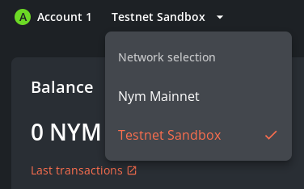

Introduction
This is Nym’s Operators guide, containing information and setup guides for the various pieces of Nym Mixnet infrastructure and Nyx blockchain validators.
┌─►mix──┐ mix mix
│ │
Entry │ │ Exit
client ───► Gateway ──┘ mix │ mix ┌─►mix ───► Gateway ───► internet
│ │
│ │
mix └─►mix──┘ mix
If you are new to Nym and want to learn about the Mixnet, explore kickstart options and demos, learn how to integrate with the network, and follow developer tutorials check out the Developer Portal.
If you want to dive deeper into Nym’s architecture, clients, nodes, and SDK examples visit the technical docs.
Popular pages
Binary Information
Node setup and usage guides:
Maintenance, troubleshooting and FAQ
Community Legal Forum
Changelog
This page displays a full list of all the changes during our release cycle from v2024.3-eclipse onwards. Operators can find here the newest updates together with links to relevant documentation. The list is sorted so that the newest changes appear first.
nym-node patch from release/2024.10-caramello
Binary Name: nym-node
Build Timestamp: 2024-09-16T15:00:41.019107021Z
Build Version: 1.1.7
Commit SHA: 65c8982cab0ff3a1154966e7d61956cb42a065fc
Commit Date: 2024-09-16T15:59:34.000000000+02:00
Commit Branch: HEAD
rustc Version: 1.81.0
rustc Channel: stable
cargo Profile: release
This patch fixes v202410-caramello relase bug where one of the used dependencies - DefGuard, was failing.
Updating to this patched version and running nym-node --mode exit-gateway with --wireguard-enabled true should result in a smooth node start without the defguard_wireguard error, occuring to some operators before:
/home/ubuntu/.cargo/registry/src/index.crates.io-6f17d22bba15001f/defguard_wireguard_rs-0.4.2/src/netlink.rs:155: Serialized netlink packet (23240 bytes) larger than maximum size 12288: NetlinkMessage.
v2024.10-caramello
- Release binaries
- Release CHANGELOG.md
nym-nodeversion1.1.7
CHANGELOG.md
CHANGELOG.md
- Backport 4844 and 4845 (#4857)
- Bugfix/client registration vol2 (#4856)
- Remove wireguard feature flag and pass runtime enabled flag (#4839)
- Eliminate cancel unsafe sig awaiting (#4834)
- added explicit updateable admin to the mixnet contract (#4822)
- using legacy signing payload in CLI and verifying both variants in contract (#4821)
- adding ecash contract address (#4819)
- Check profit margin of node before defaulting to hardcoded value (#4802)
- Sync last_seen_bandwidth immediately (#4774)
- Feature/additional ecash nym cli utils (#4773)
- Better storage error logging (#4772)
- bugfix: make sure DKG parses data out of events if logs are empty (#4764)
- Fix clippy on rustc beta toolchain (#4746)
- Fix clippy for beta toolchain (#4742)
- Disable testnet-manager on non-unix (#4741)
- Don’t set NYM_VPN_API to default (#4740)
- Update publish-nym-binaries.yml (#4739)
- Update ci-build-upload-binaries.yml (#4738)
- Add NYM_VPN_API to network config (#4736)
- Re-export RecipientFormattingError in nym sdk (#4735)
- Persist wireguard peers (#4732)
- Fix tokio error in 1.39 (#4730)
- Feature/vesting purge plus ranged cost params (#4716)
- Fix (some) feature unification build failures (#4681)
- Feature Compact Ecash : The One PR (#4623)
Features
Testing steps performed
Testing steps performed
Scenario 1: Bandwidth Decreasing Continuously
- Started the client and noted the initial bandwidth (e.g., 1GB).
- Used the client and tracked bandwidth usage over time (e.g., decrease by 100MB every hour).
- Restarted the client after some usage.
- Verified the bandwidth continued from the last recorded value, not reset.
The bandwidth continued decreasing without resetting upon restart. Logs and reports correctly reflected the decreasing bandwidth.
Scenario 2: Bandwidth Reset Next Day
- Used the client normally until the end of the day.
- Suspended some clients and kept others active.
- Checked bandwidth at midnight.
- Verified that bandwidth reset to 1GB for both suspended and active clients.
Bandwidth reset to 1GB for all clients at midnight. Logs and reports correctly showed the reset.
Scenario 3: Bandwidth Reset at a Different Time (e.g., Midday)
- Configured the system to reset bandwidth at midday.
- Used the client and monitored bandwidth until midday.
- Kept the client connected during the reset time.
- Verified that bandwidth reset to 1GB live at midday.
Bandwidth reset to 1GB at midday while the client was connected. Logs and reports correctly reflected the reset.
Scenario 4: Stale Check for 3 Days
- Kept a client inactive for 3 days.
- Verified removal from the peer list after 3 days.
- Reconnected the client after 3 days and checked for a new private IP.
- Restarted a client within 3 days and verified it retained the same private IP.
The client was removed from the peer list after 3 days of inactivity. Upon re-connection after 3 days, the client received a new private IP. The client retained the same private IP when restarted within 3 days.
-
Feature/merge back: Merge back from the release branch the changes that fix the
nym-nodeupgrades -
Removed mixnode/gateway config migration code and disabled cli without explicit flag: Commands for archived / legacy binaries
nym-gatewayandnym-mixnodewon’t do anything without explicit--force-runto bypass the deprecation. The next step, in say a month or so, is to completely remove allclirelated things.
Testing steps performed
Testing steps performed
- Verify that the
nym-gatewaybinary andnym-mixnodebinary commands return the error message stating to update to nym-node - Check that when adding the
--force-runflag, it still allows the command to be run (aside frominitwhich has been removed) and the message stating to update to nym-node is a warning now - Check
nym-nodeis not affected - Reviewed the changes in the PR
- Handle clients with different versions in IPR: Allow the IPR to handle clients connecting both using
v6andv7, independently. The motivation is that we want to be able to roll out a API version change gradually for VPN clients without breaking backwards compatibility. The main feature on the newv7format that is not yet used, is that it adds signatures for connect/disconnect.
Testing steps performed
Testing steps performed
Run the same command (using same gateways deployed from this PR) on different versions of the nym-vpn-cli.
Example:
~/nym-vpn-core-v0.1.10_macos_universal ❯ sudo -E ./nym-vpn-cli -c ../qa.env run --entry-gateway-id $entry_gateway --exit-gateway-id $exit_gateway --enable-two-hop
~/nym-vpn-core-v0.1.11-dev_macos_universal ❯ sudo -E ./nym-vpn-cli -c ../qa.env run --entry-gateway-id $entry_gateway --exit-gateway-id $exit_gateway --enable-two-hop
-
Using legacy signing payload in CLI and verifying both variants in contract
-
Check profit margin of node before defaulting to hardcoded value
-
Update publish-nym-binaries.yml: Adds wireguard to builds
-
Update ci-build-upload-binaries.yml: Adds wireguard for ci-builds
-
Feature/vesting purge plus ranged cost params: Combines #4715 and #4711 into one.
- Disables all non-essential operations on the vesting contract => you can no longer bond mixnodes/make delegations/etc. (you can still, however, withdraw your vested tokens and so on)
- Introduces admin-controlled minimum (and maximum) profit margin and interval operating costs.
- both contracts have to be migrated at the same time. ideally within the same transaction
- mixnet contract migration is not allowed (and will fail) if there are any pending actions involving vesting tokens, like delegating, increasing pledge, etc
-
Bump braces from
3.0.2to3.0.3in/nym-wallet/webdriver: Bumps braces from3.0.2to3.0.3.
Bugfix
Testing steps performed
Testing steps performed
Tested updating an old nym-node version and ensuring it did not throw any errors.
-
- Bump tokio to
1.39.2, skipping the issue with1.39.1
- Bump tokio to
-
Fix (some) feature unification build failures: Running a script in the root workspace that builds each crate independently
The script
The script
#!/bin/bash
packages=$(cargo metadata --format-version 1 --no-deps | jq -r '.packages[].name')
# Loop through each package and build
for package in $packages; do
echo "Building $package"
cargo clean
cargo check -p "$package"
if [ $? -ne 0 ]; then
echo "Build failed for $package. Stopping."
exit 1
fi
done
-
bugfix: make sure DKG parses data out of events if logs are empty: This will be the case on post
0.50chains -
Fix clippy on rustc beta toolchain: Fix clippy warnings for rust beta toolchain
-
Fix clippy for beta toolchain: Fix beta toolchain clippy by removing unused module
- Add
nym-prefix toserde-commoncrate - Remove ignored
default-features = falseattribute for workspace dependency
- Add
Crypto
Operators Guide, Tooling & Updates
-
More explicit setup for
nym-nodewith a new option explanation, including syntax examples -
Wireguard builds from source together with
nym-node, no need to specify with a feature flag anymore -
Wireguard peers stay connected for longer time, re-connections are also faster
-
Profit margin and operating cost values are set to the values agreed by operators off-chain vote, the values can be changed in the future through Nym Operators governance process
- Minimum profit margin = 20%
- Maximum profit margin = 50%
- Minimum operating cost = 0 NYM
- Maximum operating cost = 1000 NYM
-
Nym Harbourmater has several new functionalities:
- Version counting graph for Gateways and Mixnodes
- Several new columns with larger nodes performance and settings overview.
- Top routing score now includes:
- Wireguard registration and complete handshake test, to configure see tasklist below
- DNS resolution check, to configure see tasklist below
- Wireguard perfomance > 0.75, to configure see tasklist below
-
New Nym Wallet is out!
- Vesting contract functionalities have been purged, users can only remove tokens from vesting
- Migrating from
mixnodeorgatewaysmart contracts to a new unifyingnym-nodesmart contract will be available soon using Nym desktop wallet, just like you are used to for bonding and node settings. After this migration allnym-nodeswill be able to receive delegation and rewards. We will share a step by step guide once this migration will be deployed. No action needed now.
-
Nym API Check CLI is upgraded according to the latest API endpoints, output is cleaner and more concise.
Operators Tasks
The steps below are highly recommended for all operators and mandatory for everyone who is a part of Nym Delegation or Grant program. Deadline is Friday, September 20th, 2024.
Every nym-node should be upgraded to the latest version! Operators can test using Sandbox env during the pre-release period, then upgrade on mainnet. During the upgrade, please follow the points below before you restart the node:
nym-node
- Make sure to fill in basic description info, into the file located at
.nym/nym-nodes/<ID>/data/description.toml(all nodes) - Configure wireguard routing with new
network_tunnel_manager.shfollowing these steps (Gateways only for the time being) - Enable Wireguard with
--wireguard-enabled trueflag included in your run command (Gateways only for the time being)- Note: On some VPS this setup may not be enough to get the correct results as some ISPs have their own security groups setup below the individual VPS. In that case a ticket to ISP will have to be issued to open the needed settings. We are working on a template for such ticket.
- Setup reverse proxy and WSS on
nym-node(Gateways only for the time being) - Don’t forget to restart your node - or (preferably using systemd automation) reload daemon and restart the service
- Optional: Use
nym-gateway-probeand NymVPN CLI to test your own Gateway - Optional: Run the script below to measure ping speed of your Gateway and share your results in Nym Operators channel
The script to measure Gateway ping results
The script to measure Gateway ping results
We made a script for pinging nymtech.net from your GWs. Can you please install it and then share the result together with your Gateway ID:
- Get the script onto your machine (soon on github for curl or wget):
# paste all this block as one command
cat <<'EOL' > ping_with_curl_average_for_wg_check.sh
#!/bin/bash
ping_with_curl_average_for_wg_check() {
total_connect_time=0
total_total_time=0
iterations=5
timeout=2
for ((i=1; i<=iterations; i++)); do
echo "ping attempt $i..."
echo "curling nymtech.net to check ping response times"
times=$(curl -I https://nymtech.net --max-time $timeout \
-w "time_connect=%{time_connect}\ntime_total=%{time_total}" -o /dev/null -s)
time_connect=$(echo "$times" | grep "time_connect" | cut -d"=" -f2)
time_total=$(echo "$times" | grep "time_total" | cut -d"=" -f2)
total_connect_time=$(echo "$total_connect_time + $time_connect" | bc)
total_total_time=$(echo "$total_total_time + $time_total" | bc)
echo "time to connect: $time_connect s"
echo "total time: $time_total s"
done
average_connect_time=$(echo "scale=3; $total_connect_time / $iterations" | bc)
average_total_time=$(echo "scale=3; $total_total_time / $iterations" | bc)
echo "-----------------------------------"
echo "average time to connect: $average_connect_time s"
echo "average total time: $average_total_time s"
}
ping_with_curl_average_for_wg_check
EOL
- Make executable:
chmod +x ping_with_curl_average_for_wg_check.sh
- In case you don’t have
bc, install it:
sudo apt install bc
- Run:
./ping_with_curl_average_for_wg_check.sh
- Share results and ID key in Nym Operators channel
THANK YOU!
validators
- Validators need to update and prepare for ecash implementation.
Known Bugs & Undone features
- New
nym-nodeswithout a performance 24h history above 50% don’t show routing properly onnym-gateway-probe, on Nym Harbourmaster the page may appear blank - we are working on a fix. - Wireguard works on IPv4 only for the time being, we are working on IPv6 implementation.
- Harbourmaster Role column shows
nym-node --mode exit-gatewayasEntryGateway, we are working to fix it. - In rare occassions Harbourmaster shows only “panda” without the “smiley” badge even for nodes, which have T&C’s accepted. We are working to fix it.
- Sometimes
nym-noderunning with--wireguard-enabled truegives this error on restart:Serialized netlink packet .. larger than maximum size ..
/home/ubuntu/.cargo/registry/src/index.crates.io-6f17d22bba15001f/defguard_wireguard_rs-0.4.2/src/netlink.rs:155: Serialized netlink packet (23240 bytes) larger than maximum size 12288: NetlinkMessage.
From what we found out it seems that one of our dependencies - DefGuard - is failing. Based on the reading on their fix, it seems that when node operators try to re-create a wireguard interface with too many previous peers (like on Gateway restart, with restoring from storage), there’s an overflow. So their fix is to just add them one by one. To be sure that bumping the dependency version fixes the problem there’s still two things we’d need to check - and your feedback would help us a lot:
- Did operators only encounter this error after a
nym-node(Gateway) restart? - Reprouce this error ourselves and see if it actually fixes our problem.
Please share your experience with us to help faster fix of this issue.
v2024.9-topdeck
- Release binaries
- Release CHANGELOG.md
nym-nodeversion1.1.6
Features
- Removed
nym-mixnodeandnym-gatewayconfig migration code and disabled CLI without explicit flag: Gateway and Mixnode commands now won’t do anything without explicit--force-runto bypass the deprecation, instead it will tell an operator to run anym-node. The next step, in say a month or so, is to completely remove allclirelated things.
Testing steps performed
Testing steps performed
- Verify that the
nym-gatewaybinary andnym-mixnodebinary commands return the_error message_stating to update tonym-node - Check that when adding the
--force-runflag, it still allows the command to be run (aside frominitwhich has been removed) and the message stating to update tonym-nodeis a_warning_now - Check
nym-nodeis not affected - Review the changes in the PR
Testing steps performed - Scenario 1: Bandwidth Decreasing Continuously
Testing steps performed - Scenario 1: Bandwidth Decreasing Continuously
- Start the client and noted the initial bandwidth (e.g., 1GB).
- Us the client and track bandwidth usage over time (e.g., decrease by 100MB every hour).
- Restart the client after some usage.
- Verify the bandwidth continued from the last recorded value, not reset.
Notes: The bandwidth continued decreasing without resetting upon restart. Logs and reports correctly reflected the decreasing bandwidth.
Testing steps performed - Scenario 2: Bandwidth Reset Next Day
Testing steps performed - Scenario 2: Bandwidth Reset Next Day
- Use the client normally until the end of the day.
- Suspend some clients and kept others active.
- Check bandwidth at midnight.
- Verify that bandwidth reset to 1GB for both suspended and active clients.
Notes: Bandwidth reset to 1GB for all clients at midnight. Logs and reports correctly showed the reset.
Testing steps performed - Scenario 3: Bandwidth Reset at a Different Time (e.g., Midday)
Testing steps performed - Scenario 3: Bandwidth Reset at a Different Time (e.g., Midday)
- Configure the system to reset bandwidth at midday.
- Use the client and monitored bandwidth until midday.
- Keep the client connected during the reset time.
- Verify that bandwidth reset to 1GB live at midday.
Notes: Bandwidth reset to 1GB at midday while the client was connected. Logs and reports correctly reflected the reset.
- Handle clients with different versions in IPR: Allow the IPR to handle clients connecting both using
v6andv7, independently. The motivation is that we want to be able to roll out an API version change gradually for NymVPN clients without breaking backwards compatibility. The main feature on the newv7format that is not yet used, is that it adds signatures for connect/disconnect.
Testing steps performed
Testing steps performed
Run the same command (using same gateways deployed from this PR) on different versions of the nym-vpn-cli.
Example:
sudo -E ./nym-vpn-cli -c ../qa.env run --entry-gateway-id $entry_gateway --exit-gateway-id $exit_gateway --enable-two-hop
sudo -E ./nym-vpn-cli -c ../qa.env run --entry-gateway-id $entry_gateway --exit-gateway-id $exit_gateway --enable-two-hop
Bugfix
-
Feature/merge back: Merge back from the release branch the changes that fix the
nym-nodeupgrades. -
Fix version
1.x.xnot having template correspondent initially: This should fix the problem of config deserialisation when operators upgrade nodes and skip over multiple versions.
Testing steps performed
Testing steps performed
- Tested updating an old nym-node version and ensuring it did not throw any errors.
Operators Guide updates
- WireGuard tunnel configuration guide for
nym-node(currently Gateways functionalities). For simplicity we made a detailed step by step guide to upgrade an existingnym-nodeto the latest version and configure your VPS routing for WireGuard. Open by clicking on the example block below.
Upgrading nym-node with WG
Upgrading nym-node with WG
Prerequisites
-
Nym Node Version: You must be running the
2024.9-topdeckrelease branch, which operates asnym-nodeversion1.1.6. You can find the release here: Nym 2024.9-topdeck Release. -
Important: Before proceeding, make sure to back up your current
nym-nodeconfiguration to avoid any potential data loss or issues. -
Download Nym Node:
- You can download the
nym-nodebinary directly using the following command:
- You can download the
curl -L https://github.com/nymtech/nym/releases/download/nym-binaries-v2024.9-topdeck/nym-node -o nym-node && chmod u+x nym-node
Step 1: Update UFW Firewall Rules
- Warning: Enabling the firewall with UFW without allowing SSH port 22 first will lead to losing access over SSH. Make sure port 22 is allowed before proceeding with any UFW configurations.
Run the following as root or with sudo prefix:
- Check the current status of UFW (Uncomplicated Firewall):
ufw status
- Ensure that the following ports are allowed on your machine before adding the WireGuard port:
ufw allow 22/tcp # SSH - you're in control of these ports
ufw allow 80/tcp # HTTP
ufw allow 443/tcp # HTTPS
ufw allow 1789/tcp # Nym specific
ufw allow 1790/tcp # Nym specific
ufw allow 8080/tcp # Nym specific - nym-node-api
ufw allow 9000/tcp # Nym Specific - clients port
ufw allow 9001/tcp # Nym specific - wss port
ufw allow 51822/udp # WireGuard
- Confirm that the UFW rules have been updated:
ufw status
Step 2: Download and Prepare the Network Tunnel Manager Script
- Download the
network_tunnel_manager.shscript:
curl -L -o network_tunnel_manager.sh https://gist.githubusercontent.com/tommyv1987/ccf6ca00ffb3d7e13192edda61bb2a77/raw/3c0a38c1416f8fdf22906c013299dd08d1497183/network_tunnel_manager.sh
- Make the script executable:
chmod u+x network_tunnel_manager.sh
- Apply the WireGuard IPTables rules:
./network_tunnel_manager.sh apply_iptables_rules_wg
Step 3: Update the Nym Node Service File
- Modify your
nym-nodeservice file to enable WireGuard. Open the file (usually located at/etc/systemd/system/nym-node.service) and update the[Service]section as follows:
[Service]
User=<YOUR_USER_NAME>
Type=simple
#Environment=RUST_LOG=debug
# CAHNGE PATH IF YOU DON'T RUN IT FROM ROOT HOME DIRECTORY
ExecStart=/root/nym-node run --mode exit-gateway --id <YOUR_NODE_LOCAL_ID> --accept-operator-terms-and-conditions --wireguard-enabled true
Restart=on-failure
RestartSec=30
StartLimitInterval=350
StartLimitBurst=10
LimitNOFILE=65536
[Install]
WantedBy=multi-user.target
# ADD OR TWEAK ANY CUSTOM SETTINGS
- Reload the systemd daemon to apply the changes:
systemctl daemon-reload
- Restart the
nym-node service:
systemctl restart nym-node.service
- Optionally, you can check if the node is running correctly by monitoring the service logs:
journalctl -u nym-node.service -f -n 100
Step 4: Run the Network Tunnel Manager Script
Finally, run the following command to initiate our favorite routing test - run the joke through the WireGuard tunnel:
./network_tunnel_manager.sh joke_through_wg_tunnel
- Note: Wireguard will return only IPv4 joke, not IPv6. WG IPv6 is under development. Running IPR joke through the mixnet with
./network_tunnel_manager.sh joke_through_the_mixnetshould work with both IPv4 and IPv6!
- Change
--wireguard-enabledflag totrue: With a proper routing configurationnym-nodesrunning as Gateways can now enable WG. See the example below:
Syntax to run nym-node with WG enabled
Syntax to run nym-node with WG enabled
For Exit Gateway:
./nym-node run --id <ID> --mode exit-gateway --public-ips "$(curl -4 https://ifconfig.me)" --hostname "<YOUR_DOMAIN>" --http-bind-address 0.0.0.0:8080 --mixnet-bind-address 0.0.0.0:1789 --location <COUNTRY_FULL_NAME> --accept-operator-terms-and-conditions --wireguard-enabled true
# <YOUR_DOMAIN> is in format without 'https://' prefix
# <COUNTRY_FULL_NAME> is format like 'Jamaica', or two-letter alpha2 (e.g. 'JM'), three-letter alpha3 (e.g. 'JAM') or three-digit numeric-3 (e.g. '388') can be provided.
# wireguard can be enabled from version 1.1.6 onwards
For Entry Gateway:
./nym-node run --id <ID> --mode entry-gateway --public-ips "$(curl -4 https://ifconfig.me)" --hostname "<YOUR_DOMAIN>" --http-bind-address 0.0.0.0:8080 --mixnet-bind-address 0.0.0.0:1789 --accept-operator-terms-and-conditions --wireguard-enabled true
# <YOUR_DOMAIN> is in format without 'https://' prefix
# <COUNTRY_FULL_NAME> is format like 'Jamaica', or two-letter alpha2 (e.g. 'JM'), three-letter alpha3 (e.g. 'JAM') or three-digit numeric-3 (e.g. '388') can be provided.
# wireguard can be enabled from version 1.1.6 onwards
- Update Nym exit policy: Based on the survey, AMA and following discussions we added several ports to Nym exit policy. The ports voted upon in the forum governance have not been added yet due to the concerns raised. These ports were unrestricted:
Newly opened ports in Nym exit policy
Newly opened ports in Nym exit policy
22 # SSH
123 # NTP
445 # SMB file share Windows
465 # URD for SSM
587 # SMTP
853 # DNS over TLS
1433 # databases
1521 # databases
2049 # NFS
3074 # Xbox Live
3306 # databases
5000-5005 # RTP / VoIP
5432 # databases
6543 # databases
8080 # HTTP Proxies
8767 # TeamSpeak
8883 # Secure MQ Telemetry Transport - MQTT over SSL
9053 # Tari
9339 # gaming
9443 # alternative HTTPS
9735 # Lightning
25565 # Minecraft
27000-27050 # Steam and game servers
60000-61000 # MOSH
-
Create a NymConnect archive page, PR #4750: Archive deprecated NymConnect for backward compatibility, show PEApps examples for both NC and maintained
nym-socks5-client. -
Fix broken URLs and correct redirection. PRs: #4745, #4752 #4755, #4737
Testing steps performed
Testing steps performed
- Use deadlinkchecker.com to go over
nymtech.netand correct all docs URLs - Go over search engines and old medium articles and check that all dead URLs re-directing correctly
- Clarify syntax on
nym-nodesports on VPS setup page, PR #4734: Make crystal clear that the addresses and ports in operatorsconfig.tomlmust be opened usingufwand set up as in the example below:
snap of binding addresses and ports in config.toml
snap of binding addresses and ports in config.toml
[host]
public_ips = [
'<YOUR_PUBLIC_IPv4>'
]
[mixnet]
bind_address = '0.0.0.0:1789'
[http]
bind_address = '0.0.0.0:8080'
[mixnode]
[mixnode.verloc]
bind_address = '0.0.0.0:1790'
[entry_gateway]
bind_address = '0.0.0.0:9000'
Tooling
-
Nym Harbourmaster has now several new functionalities:
- Tab for Mixnodes
- Tab with Charts
- New columns with: Moniker (node description), DP delegatee, Accepted T&Cs - also part of a new category 🐼😀
-
Nym has a new Token page
v2024.8-wispa
- Release binaries
- Release CHANGELOG.md
nym-nodeversion1.1.5
CHANGELOG.md
CHANGELOG.md
- add event parsing to support cosmos_sdk > 0.50 (#4697)
- Fix NR config compatibility (#4690)
- Remove UserAgent constructor since it’s weakly typed (#4689)
- [bugfix]: Node_api_check CLI looked over roles on blacklisted nodes (#4687)
- Add mixnodes to self describing api cache (#4684)
- Move and whole bump of crates to workspace and upgrade some (#4680)
- Remove code that refers to removed nym-network-statistics (#4679)
- Remove nym-network-statistics (#4678)
- Create UserAgent that can be passed from the binary to the nym api client (#4677)
- Add authenticator (#4667)
Features
- Default construct NodeRole: To preserve compatibility with newer clients interacting with older
nym-api
Testing steps performed
Testing steps performed
- Reviewed the changes in the
nym-api-requests/src/models.rsfile. - Verified that the
NymNodeDescriptionstruct includes the newrolefield with a default value set bydefault_node_role. - Checked the implementation of the
default_node_rolefunction to ensure it returnsNodeRole::Inactive. - Ran the updated code in the sandbox environment.
- Monitored the sandbox environment for any issues or errors related to the changes.
Notes (if any):
The test was successful. No issues were flagged during the testing in the sandbox environment. The new default value for NodeRole ensures backward compatibility without causing disruptions.
- [Default construct NodeRole for backwards compatibility (apply #4721 on develop)](https://github.com/nymtech/nym/pull/4722)
- Add upgrades to
nym-nodeforauthenticatorchanges
Testing steps performed
Testing steps performed
- Reviewed the changes in the
gateway/src/error.rsandgateway/src/node/mod.rsfiles. - Verified the new error enum
AuthenticatorStartupFailurewas added toGatewayError. - Confirmed the implementation of the
StartedAuthenticatorstruct and its usage in thestart_authenticatorfunction. - Ran the updated code in the canary environment.
- Monitored the canary environment for any issues or errors related to the changes.
Testing steps performed
Testing steps performed
- Reviewed the changes in
common/client-libs/validator-client/src/nyxd/cosmwasm_client/client_traits/signing_client.rs,logs.rs,types.rs, andnym-api/src/coconut/tests/mod.rsfiles. - Verified the addition of event parsing in the relevant functions and structs.
- Ensured that the
find_attributefunction correctly parses event attributes. - Ran the updated code in the sandbox environment.
- Broadcasted transactions on the sandbox network to test the changes.
- Monitored the sandbox network for any malformed responses or errors after the test chain upgrade.
- Send bandwidth status messages when connecting: When connecting to the gateway we get received the available bandwidth left. Emit a status messages for this, for consumption by the application layer.
Testing steps performed
Testing steps performed
- Reviewed the changes in
common/bandwidth-controller/src/event.rs,common/bandwidth-controller/src/lib.rs, andcommon/client-libs/gateway-client/src/client.rsfiles. - Verified the implementation of
BandwidthStatusMessageenum for emitting status messages. - Ensured
GatewayClientis updated to send bandwidth status messages when connecting. - Deployed the updated code on the canary environment.
- Connected to the gateway and checked for the emission of bandwidth status messages.
- Verified that the messages were correctly parsed and consumed by the application layer.
- Ran the VPN client to observe the parsed events.
- Fix NR config compatibility: Recently we deleted the old statistics service provider. This fixes some issues where old configs didn’t work with the latest changes.
- Make NR able to read config with old keys in
- Remove deleted config keys from NR template
Testing steps performed
Testing steps performed
- Reviewed the changes in the
service-providers/network-requester/src/config/mod.rsandservice-providers/network-requester/src/config/template.rsfiles. - Ensured
NetworkRequesterconfig is able to read old keys for compatibility. - Removed old and deleted config keys from the
NetworkRequestertemplate. - Compiled the project to verify no issues or warnings appeared.
- Ran all tests to ensure that the changes did not affect the functionality.
- Validated that no leftover code from the old statistics service provider caused any issues.
Testing steps performed
Testing steps performed
- Reviewed the changes in
common/http-api-client/src/user_agent.rsfile. - Verified the removal of the
UserAgentconstructor and ensured that all instances ofUserAgent::neware updated accordingly. - Checked the implementation of
UserAgentstruct usingBinaryBuildInformationandBinaryBuildInformationOwned. - Deployed the updated code across different environments (QA, sandbox, and canary).
- Ran tests to ensure that the
UserAgentstruct functions correctly without the constructor.
- Add mixnodes to self describing api cache:
- Abstracts getting the self describing info a bit
- Adds mixnodes to the cache refresher as well
- Adds
rolefield to theNodeDescriptionstruct, to be able to distinguish between mixnodes and gateways - Switched to using
NodeStatusCacheinstead ofContractCache
Testing steps performed
Testing steps performed
Called the new /mixnodes/described endpoint as well as the existing /gateways/described endpoint and verified that the data returned for each was correct based on the settings that different nodes have when they are setup.
For gateway endpoint, the “role” for now does not differentiate between entry and exit gateways, this will be implemented in the future.
- Move and whole bump of crates to workspace and upgrade some:
- Fix cargo warning for
default_features - Move dirs 4.0 to workspace
- Use workspace
base64dep - Move
rand_chachaandx25519-dalekto workspace - Use workspace
ed25519-dalekdep - Move
itertoolsto workspace deps and upgrade - Move a few partial deps to workspace while preserving versions
- Fix cargo warning for
Testing steps performed
Testing steps performed
- Reviewed the changes to move and upgrade crates to the workspace.
- Verified the updated dependencies:
- Moved
dirsto version 4.0 in the workspace. - Updated the
base64dependency to use the workspace version. - Moved
rand_chachaandx25519-dalekto the workspace. - Updated
ed25519-dalekto use the workspace version. - Moved and upgraded
itertoolsin the workspace. - Moved other partial dependencies to the workspace while preserving their versions.
- Moved
- Ensured the
Cargo.tomlfiles across the project reflect these changes correctly. - Compiled the entire project to check for any issues or warnings.
- Verified that all tests pass successfully after the changes.
- Remove
nym-network-statistics: Removenym-network-statisticsservice provider that is no longer used.
Testing steps performed
Testing steps performed
- Reviewed the project to identify all references to
nym-network-statistics. - Removed all code and dependencies associated with
nym-network-statistics. - Ensured that no references to
nym-network-statisticsremain in the codebase, including comments, imports, and configuration files. - Compiled the project to check for any issues or warnings.
- Ran all tests to ensure the removal did not affect the functionality of the project.
- Remove code that refers to removed
nym-network-statistics: Follow up to #4678 where all code interacting with it is removed.
Testing steps performed
Testing steps performed
- Reviewed the project to identify all references to
nym-network-statistics. - Removed all code and dependencies associated with
nym-network-statistics. - Ensured that no references to
nym-network-statisticsremain in the codebase, including comments, imports, and configuration files. - Compiled the project to check for any issues or warnings.
- Ran all tests to ensure the removal did not affect the functionality of the project.
- Create
UserAgentthat can be passed from the binary to thenym-apiclient:- Support setting
UserAgentfor the validator client - Support setting
UserAgentin the SDKMixnetClient - Set
UserAgentwhen getting the list of gateways and topology innym-clientnym-socks5-client- Standalone
ip-packet-router
- Support setting
Testing steps performed
Testing steps performed
Used the nym-vpn-cli to test this, and we can visibly see the UserAgent, no issues with the comments mentioned above.
Example of the user agent sent:
nym-client/1.1.36/x86_64-unknown-linux-gnu/e18bb70
Connected with no problems
Bugfix
Node_api_check.pyCLI looked over roles on blacklisted nodes: Removing/correcting this redundant function which results in unwanted error print, will resolve in the program not looking up therolesendpoint for blacklisted GWs, instead just ignores the role description and still return all other endpoints.
Operators Guide updates
- Create a guide to backup and restore
nym-node, PR #4720 - Add manual IPv6 ifup/down network configuration, PR #4651
- Extend ISP list
- Add SSL cert bot block to WSS setup, PR here: WSS setup fully works!
- Correct
HTTP API portin bonding page , PR #4707: ChangeHTTP API portto8080on everynym-nodeby openingconfig.tomland making sure that your binding addresses and ports are as in the block below. Then go to desktop wallet and open the box calledShow advanced optionsand make sure all your ports are set correctly (usually this means to changeHTTP api portto8080formixnodemode).
snap of binding addresses and ports in config.toml
snap of binding addresses and ports in config.toml
[host]
public_ips = [
'<YOUR_PUBLIC_IPv4>'
]
[mixnet]
bind_address = '0.0.0.0:1789'
[http]
bind_address = '0.0.0.0:8080'
[mixnode]
[mixnode.verloc]
bind_address = '0.0.0.0:1790'
[entry_gateway]
bind_address = '0.0.0.0:9000'
- Comment our deprecated node pages in
/docs- Fixes issue #4632
- Remove redundant syntax from the setup guide
v2024.7-doubledecker
- Release binaries
- Release CHANGELOG.md
nym-nodeversion1.1.4
CHANGELOG.md
CHANGELOG.md
- Add an early return in
parse_raw_str_logsfor empty raw log strings. (#4686) - Bump braces from 3.0.2 to 3.0.3 in /wasm/mix-fetch/internal-dev (#4672)
- add expiry returned on import (#4670)
- [bugfix] missing rustls feature (#4666)
- Bump ws from 8.13.0 to 8.17.1 in /wasm/client/internal-dev-node (#4665)
- Bump braces from 3.0.2 to 3.0.3 in /clients/native/examples/js-examples/websocket (#4663)
- Bump ws from 8.14.2 to 8.17.1 in /sdk/typescript/packages/nodejs-client (#4662)
- Update setup.md (#4661)
- New clippy lints (#4660)
- Bump braces from 3.0.2 to 3.0.3 in /nym-api/tests (#4659)
- Bump braces from 3.0.2 to 3.0.3 in /docker/typescript_client/upload_contract (#4658)
- Update vps-setup.md (#4656)
- Update configuration.md (#4655)
- Remove old PR template (#4639)
Features
- Remove the
nym-mixnodeandnym-gatewaybinaries from the CI upload builds action - Add an early return in
parse_raw_str_logsfor empty raw log strings.: This accommodates for the v50 + chain upgrade. - Bump braces from
3.0.2to3.0.3in/wasm/mix-fetch/internal-dev: Version update of braces - Bump braces from
3.0.2to3.0.3in/clients/native/examples/js-examples/websocket: Version update of braces. - Bump braces from
3.0.2to3.0.3in/nym-api/tests: Version update of braces. - Bump braces from
3.0.2to3.0.3in/docker/typescript_client/upload_contract: Version update of braces. - Bump
wsfrom8.13.0to8.17.1in/wasm/client/internal-dev-node: Version update ofws. - Bump
wsfrom8.14.2to8.17.1in/sdk/typescript/packages/nodejs-client: Version update ofws. - Add expiry returned on import: We need to return the expiry on import for desktop daemon
nym-vpnd. - New clippy lints
- Remove
nym-connectdirectory: Since thenym-vpnhas supersedednym-connect, removenym-connectfrom the repo. - Remove old PR template
Bugfix
- missing rustls feature: It just happens to work due to
feature-unification. It should probably have this feature inbuild.
Operators Guide updates
- Node description guide: Steps to add self-description to
nym-nodeand query this information from any node. - Web Secure Socket (WSS) guide and reverse proxy update, PR here: A guide to setup
nym-nodein a secure fashion, using WSS via Nginx and Certbot. Landing page (reversed proxy) is updated and simplified.
v2024.6-chomp
- Release binaries
- Release CHANGELOG.md
nym-nodeversion1.1.3- Standalone
nym-gatewayandnym-mixnodebinaries are no longer released
CHANGELOG.md
CHANGELOG.md
- Remove additional code as part of Ephemera Purge and SP and contracts (#4650)
- bugfix: make sure nym-api can handle non-cw2 (or without detailed build info) compliant contracts (#4648)
- introduced a flag to accept toc and exposed it via self-described API (#4647)
- bugfix: make sure to return an error on invalid public ip (#4646)
- Add ci check for PR having an assigned milestone (#4644)
- Removed ephemera code (#4642)
- Remove stale peers (#4640)
- Add generic wg private network routing (#4636)
- Feature/new node endpoints (#4635)
- standarised ContractBuildInformation and added it to all contracts (#4631)
- validate nym-node public ips on startup (#4630)
- Bump defguard wg (#4625)
- Fix cargo warnings (#4624)
- Update kernel peers on peer modification (#4622)
- Handle v6 and v7 requests in the IPR, but reply with v6 (#4620)
- fix typo (#4619)
- Update crypto and rand crates (#4607)
- Purge name service and service provider directory contracts (#4603)
Features
- Make embedded NR/IPR ignore performance of the Gateway: fixes bug in relation to scoring issue on nym-nodes operating as exit gateways failing to come online.
- Introduce a flag to accept Operators Terms and Conditions and exposed it via self-described API
Testing steps performed
Testing steps performed
- Verify that the
executefunction correctly checks if theaccept_operator_termsflag is set. - Test that a warning is displayed when the
accept_operator_termsflag is not set. - Confirm that the
NymNodeinstance is initialized withwith_accepted_toc(accepted_toc)when the flag is set. - Apply the
--accept-tocflag in the service and confirmed the change by running:
curl -s -X 'GET' 'http://18.171.251.41:8080/api/v1/auxiliary-details?output=json' -H 'accept: application/json' | jq .accepted_toc
- Verify that the output is
true.
- Rename ‘accept-toc’ flag and fields into explicit ‘accept-operator-terms-and-conditions’: makes the
accept-tocflag more explicit. - Validate nym-node public ips on startup: makes sure
nym-nodeis not run with an emptypublic_ipsand that they do not correspond to common misconfigurations like127.0.0.1or0.0.0.0unless run with--localflag.
Testing steps performed
Testing steps performed
-
Use the latest release/chomp binary with nym-node and input a dodgy ip
-
Validation:
When restarting the node it complains within the service launch file
- New node endpoints: introduces new endpoints on nym-api (and creates scaffolding for additional ones) for providing unfiltered network topology alongside performance score of all nodes.
NymApiTopologyProvidergot modified to use those endpoints alongside (configurable) filtering of nodes with score < 50% (like our current blacklist)- Old clients should work as before as no existing endpoint got removed
Testing steps performed
Testing steps performed
- Validate that the
skimmedendpoints are working, keeping in mind that they are unstable. The full-fat and semi-skimmed have not yet been implemented.
Testing steps performed
Testing steps performed
- Check references to everything named SP and Ephemera and removed any additional references
- Remove additional code as part of Ephemera Purge and SP and contracts: in line with #4642 and #4603
Testing steps performed
Testing steps performed
- Check references to everything named SP and Ephemera and removed any additional references
- Add ci check for PR having an assigned milestone: add a CI check for checking that a PR is assigned to a milestone. Can bypassed the check by adding a
no-milestonelabel to a PR
- Bump defguard wireguard
- Add generic wireguard private network routing: as defguard wireguard only allows for peer routing modifications, we will configure the entire wireguard private network to be routed to the wg device. Configuring per peer is also not desirable, as the interface doesn’t allow removing routes, so unused ip routing won’t be cleaned until gateway restart (and it would also pollute to routing table with a lot of rules when many peers are added).
Testing steps performed
Testing steps performed
- This is a part of a bigger ticket, but initial testing has proven to shown that launching nym-nodes (entry and exit gateways) in WG enable mode to be working
QA will use this template for the other related WG tickets in this release milestone.
Testing steps performed
Testing steps performed
- Use the latest release/chomp contracts and deploy these to QA
- Use the
nym-apito query for the results of these new contracts
curl -X 'GET' \
'https://qa-nym-api.qa.nymte.ch/api/v1/network/nym-contracts-detailed' \
-H 'accept: application/json'
- It returns a detailed view of the contracts and which branch they were built from, alongside rust versions and so forth.
Testing steps performed
Testing steps performed
- This is a part of a bigger ticket, but initial testing has proven to shown that launching nym-nodes (entry and exit gateways) in WG enable mode to be working. QA will use this template for the other related WG tickets in this release milestone.
- Handle v6 and v7 requests in the IPR, but reply with v6: teach the IPR to read both v6 and v7 requests, but always reply with v6. This is to prepare for bumping to v7 and signed connect/disconnect messages. Follow up PRs will add
- Verify signature
- Send v7 in client with signatures included
- Purge name service and service provider directory contracts: this is a compiler assisted purge of the
nym-name-serviceandnym-service-provider-directorycontracts that were never deployed on mainnet, and will anyhow be superseded by the new mixnode directory that is being worked on.
Testing steps performed
Testing steps performed
It works insofar that it compiles, we need to deploy and test this on non-mainnet before merging in
- Purge
nym-name-servicecontract - Purge
nym-name-service-common - Purge
nym-service-provider-directorycontract - Purge
nym-service-provider-directory-common - Remove everywhere name-service contract is used
- Remove everywhere sp contract is used
Performed:
- Check references to everything named SP and Ephemera and removed any additional references
Crypto
- Update crypto and rand crates: Update sphinx crate to
0.1.1along with 25519 crates andrandcrates
Comments
Comments
This PR contains a test failure due to the update here
- This is due a change in
x25519-dalekfrom1.1.1to2. - Crypto operations should be identical, but the byte representation has changed (sphinx clamps at creation, x25519 clamps at use). This cannot be changed in the sphinx crate without breaking changes.
- There is a good chance that this failure doesn’t impact anything else, but it has to be tested to see.
- A mix of old and new clients with a mix of old and new mixnodes should do
Bugfix
- Make sure nym-api can handle non-cw2 (or without detailed build info) compliant contracts: fixes the issue (even if some contracts aren’t uploaded on chain it doesn’t prohibit the api from working - caveat, the essential vesting and mixnet contract are required)
Testing steps performed
Testing steps performed
- Use the latest release/chomp contracts and deploy these to QA
- If the contract was not found, the API would complain of invalid contracts, thus not starting the rest of the operations of the API (network monitor / rewarding etc)
Jun 11 16:27:34 qa-v2-nym-api bash[1352642]: 2024-06-11T16:27:34.551Z ERROR nym_api::nym_contract_cache::cache::refresher > Failed to refresh validator cache - Abci query failed with code 6 - address n14y2x8a60knc5jjfeztt84kw8x8l5pwdgnqg256v0p9v4p7t2q6eswxyusw: no such contract: unknown request
- Make sure to return an error on
nym-nodeinvalid public ip: bugfix for #4630 that interestingly hasn’t been detected by clippy.
Testing steps performed
Testing steps performed
-
Use the latest release/chomp binary with nym-node and input a dodgy ip
-
Validation:
Testing steps performed
Testing steps performed
- Verify that the
establish_connectionfunction correctly attempts to establish a connection to the gateway. - Test error handling for
NetworkConnectionFailedby simulating a failed connection. - Ensure that the
NetworkConnectionFailederror includes theaddressandsourcedetails as expected. - Checked that
SocketState::Availableis set correctly when a connection is successfully established.
- Fix Cargo warnings: On every cargo command we have the set warnings:
Cargo warnings
Cargo warnings
warning: /home/alice/src/nym/nym/common/dkg/Cargo.toml: default-features is ignored for bls12_381, since default-features was not specified for workspace.dependencies.bls12_381, this could become a hard error in the future warning: /home/alice/src/nym/nym/common/dkg/Cargo.toml: default-features is ignored for ff, since default-features was not specified for workspace.dependencies.ff, this could become a hard error in the future warning: /home/alice/src/nym/nym/common/dkg/Cargo.toml: default-features is ignored for group, since default-features was not specified for workspace.dependencies.group, this could become a hard error in the future warning: /home/alice/src/nym/nym/common/client-libs/validator-client/Cargo.toml: default-features is ignored for bip32, since default-features was not specified for workspace.dependencies.bip32, this could become a hard error in the future warning: /home/alice/src/nym/nym/common/client-libs/validator-client/Cargo.toml: default-features is ignored for prost, since default-features was not specified for workspace.dependencies.prost, this could become a hard error in the future warning: /home/alice/src/nym/nym/common/credentials-interface/Cargo.toml: default-features is ignored for bls12_381, since default-features was not specified for workspace.dependencies.bls12_381, this could become a hard error in the future warning: /home/alice/src/nym/nym/common/credentials/Cargo.toml: default-features is ignored for bls12_381, since default-features was not specified for workspace.dependencies.bls12_381, this could become a hard error in the future warning: /home/alice/src/nym/nym/common/nymcoconut/Cargo.toml: default-features is ignored for bls12_381, since default-features was not specified for workspace.dependencies.bls12_381, this could become a hard error in the future warning: /home/alice/src/nym/nym/common/nymcoconut/Cargo.toml: default-features is ignored for ff, since default-features was not specified for workspace.dependencies.ff, this could become a hard error in the future warning: /home/alice/src/nym/nym/common/nymcoconut/Cargo.toml: default-features is ignored for group, since default-features was not specified for workspace.dependencies.group, this could become a hard error in the future.
Testing steps performed
Testing steps performed
- All binaries have been built and deployed from this branch and no issues have surfaced.
Operators Guide updates
- New Release Cycle introduced: a transparent release flow, including:
- New environments
- Stable testnet
- Testnet token faucet
- Flow chart
- Sandbox testnet guide: teaching Nym node operators how to run their nodes in Nym Sandbox testnet environment.
- Terms & Conditions flag
- Node API Check CLI
- Pruning VPS
syslogscripts - Black-xit: Exiting the blacklist
v2024.5-ragusa
- Release binaries
- Release CHANGELOG.md
nym-nodeversion1.1.2
CHANGELOG.md
CHANGELOG.md
- Feature/nym node api location (#4605)
- Add optional signature to IPR request/response (#4604)
- Feature/unstable tested nodes endpoint (#4601)
- nym-api: make report/avg_uptime endpoints ignore blacklist (#4599)
- removed blocking for coconut in the final epoch state (#4598)
- allow using explicit admin address for issuing freepasses (#4595)
- Use rfc3339 for last_polled in described nym-api endpoint (#4591)
- Explicitly handle constraint unique violation when importing credential (#4588)
- [bugfix] noop flag for nym-api for nymvisor compatibility (#4586)
- Chore/additional helpers (#4585)
- Feature/wasm coconut (#4584)
- upgraded axum and related deps to the most recent version (#4573)
- Feature/nyxd scraper pruning (#4564)
- Run cargo autoinherit on the main workspace (#4553)
- Add rustls-tls to reqwest in validator-client (#4552)
- Feature/rewarder voucher issuance (#4548)
Features
- New
nym-nodeAPI endpoint/api/v1/auxiliary-details: to expose any additional information. Currently it’s just the location.nym-apiwill then query all nodes for that information and put it in theself-describedendpoint. - New
nym-nodelocation available - use one of the three options to add this to your node config:- Update the
locationfield under[host]section ofconfig.toml - For new nodes: Initialise the node with
--locationflag, where they have to provide the country info. Either full country name (e.g. ‘Jamaica’), two-letter alpha2 (e.g. ‘JM’), three-letter alpha3 (e.g. ‘JAM’) or three-digit numeric-3 (e.g. ‘388’) can be provided. - For existing nodes: It’s also possible to use exactly the same
--locationargument as above, but make sure to also provide--write-changes(or-w) flag to persist those changes!
- Update the
- Feature/unstable tested nodes endpoint: Adds new data structures (
TestNode,TestRoute,PartialTestResult) to handle test results for Mixnodes and Gateways. With the inclusion of pagination to handle large API responses efficiently. Lastly, introducing a new route with the tagunstablethus meaning not to be consumed without a user risk, prefixes in endpoints with unstable, are what it says on the tin.
Testing steps performed
Testing steps performed
- Deploy new api changes to sandbox environment
- Ensure current operations are transactional and standed operations are working
- Run a script to ensure that the new endpoints are working as expected with pagination
nym-api: make report/avg_uptime endpoints ignore blacklist: When querying for node specific data, it’s no longer going to go through the entire list of all cached (and filtered nodes) to find it; instead it will attempt to retrieve a single unfiltered entry.
Testing steps performed
Testing steps performed
- Build the project and deployed it in a test environment.
- Manually test API endpoints for mixnode and gateway data.
- Verify that the endpoints return the expected data and handle blacklists correctly.
- API performance improved due to the efficient
HashMaplookups - Data in mainnet will differ from test nets due to the increased amount of gateways and mixnodes in that environment
- Test standard uptime routes:
curl -X 'GET' 'https://validator.nymtech.net/api/v1/status/gateway/Fo4f4SQLdoyoGkFae5TpVhRVoXCF8UiypLVGtGjujVPf/avg_uptime' -H 'accept: application/json'
- Use rfc3339 for last_polled in described nym-api endpoint: Fix issue where the validator-client can’t parse the nym-api response for the described endpoint, in particular the
latest_polledfield that was recently added, by making the field userfc3339- Note: This will require upgrading
nym-apiand everything that depends on the described endpoint.
- Note: This will require upgrading
Testing steps performed
Testing steps performed
- Update a
nym-apito the binary built from this branch, then restart the api - Check the
journalctlfor error messages - Connected via client and could not see the error messages, this is backwards compatible
- Local testing using sdk examples:
cd <PATH_TO>/nym/sdk/rust/nym-sdk
cargo run --example simple
# outcome
thread 'main' panicked at sdk/rust/nym-sdk/examples/simple.rs:9:64:
called Result::unwrap() on an Err value: ClientCoreError(ValidatorClientError(NymAPIError { source: ReqwestClientError { source: reqwest::Error { kind: Request, url: Url { scheme: "https", cannot_be_a_base: false, username: "", password: None,
- Upgrade
axumand related dependencies to the most recent version - Run cargo autoinherit on the main workspace: Move several dependencies to the workspace level using cargo autoinherit, to make it easier to keep our dependencies up to date.
- Run cargo autoinherit in the root
- Merge in the new workspace deps in the main list
- We made sure to not mix in other changes as well - all features flags for all crates should be the same as before
Testing steps performed
Testing steps performed
- Run
cargo autoinheritin the root directory to move dependencies to the workspace level - Merge the new workspace dependencies into the main list
- Ensure no other changes were mixed in during the process
- Verify that all feature flags for all crates remained the same as before
- Build all the binaries from this branch to confirm successful compilation
- Deploy the built binaries across different environments to ensure there were no issues
- Add rustls-tls to reqwest in validator-client: An attempt to make possible to end up in a situation where use use the validator-client but without functioning TLS support. For the monorepo this is masked by cargo feature unification, but becomes a problem for outside consumers, as as been noticed in many of the vpn client implementations.
- In
validator-client:reqwest, enablerustls-tlsfornon-wasm32 - In
client-core: Use default features enabled fornon-wasm32and switch towebpkiroots, since that’s what we’re using withreqwestanyway - In
gateway-client: Switch towebpkiroots, since that’s what we’re using withreqwestanyway
- In
Crypto
Testing steps performed
Testing steps performed
- Build the project to ensure no compilation errors
- Run tests to verify the functionality of the
issue_credentialfunction - Execute integration tests to check the behaviour during an epoch transition.
- Allow using explicit admin address for issuing freepasses
- Explicitly handle constraint unique violation when importing credential: Add a strong type for when a duplicate credential is imported so the vpn lib can handle this.
- Feature/wasm coconut: This pull request requires #4585 to be merged first
- Feature/nyxd scraper pruning: This PR introduces storage pruning to
nyxdscraper which is then used by the validators rewarder.
Testing steps performed
Testing steps performed
- Add a
main.rsfile in thenyxdscraper dir, underneathlib.rs, amendconfig.pruning_options.validate()?;to belet _ = config.pruning_options.validate();in the mod.rs file - Test the different variations of
pruning_options:- Check the default option:
pruning_options: PruningOptions::default() - Check the nothing option:
pruning_options: PruningOptions::nothing() - Check the custom option, example:
pruning_options: PruningOptions { keep_recent: (500), interval: (10), strategy: (PruningStrategy::Custom) } - Check the pruning in real life for the validator rewarder
- Check the default option:
- Validate that the database table
blockswas being updated accordingly
- Feature/rewarder voucher issuance
- Introduces signature checks on issued credential data
- Stores evidence of any failures/malicious behaviour in the internal db
Bugfix
noopflag fornym-apifornymvisorcompatibility- The application starts correctly and logs the starting message
- The
--no_bannerflag works as intended, providing compatibility withnymvisor
Testing steps performed
Testing steps performed
- Build the project to ensure no compilation errors
- Run the binary with different command-line arguments to verify the CLI functionality
- Test with and without the
--no_bannerflag to ensure compatibility and expected behavior - Verify logging setup and configuration file parsing
Operators Guide updates
nym-gateway-probe: A CLI tool to check in-real-time networking status of any Gateway locally.- Where to host your
nym-node?: A list of Internet Service Providers (ISPs) by Nym Operators community. We invite all operators to add their experiences with different ISPs to strengthen the community knowledge and Nym mixnet performance. - Make sure you run
nym-nodewith--wireguard-enabled falseand add a location description to yourconfig.toml, both documented innym-nodesetup manual.
v2024.4-nutella
- Merged PRs
nym-nodeversion1.1.1- This release also contains:
nym-gatewayandnym-network-requesterbinaries - core improvements on nym-node configuration
- Nym wallet changes:
- Adding
nym-nodecommand to bonding screens - Fixed the delegation issues with fixing RPC
- Adding
- Network configuration section updates, in particular for
--mode mixnodeoperators - VPS IPv6 troubleshooting updates
v2024.3-eclipse
- Release Changelog.md
nym-nodeinitial release- New tool for monitoring Gateways performance harbourmaster.nymtech.net
- New versioning
1.1.0+nymnodemainly for internal migration testing, not essential for operational use. We aim to correct this in a future release to ensure mixnodes feature correctly in the main API - New VPS specs & configuration page
- New configuration page with connectivity setup guide - a new requirement for
exit-gateway - API endpoints redirection: Nym-mixnode and nym-gateway endpoints will eventually be deprecated; due to this, their endpoints will be redirected to new routes once the
nym-nodehas been migrated and is running
API endpoints redirection
| Previous endpoint | New endpoint |
|---|---|
http://<IP>:8000/stats | http://<IP>:8000/api/v1/metrics/mixing |
http://<IP>:8000/hardware | http://<IP>:8000/api/v1/system-info |
http://<IP>:8000/description | http://<IP>:8000/api/v1/description |
Release Cycle
The Nym operator community is growing in quality and quantity. With node operators and developers joining the effort to make the Mixnet more robust and scalable, testing new features, sharing integration pull requests and generally taking an active part in Nym development, more transparency on the release cycle is required.
The core team therefore established a flow with different environments:
- local: Developers use their local environments for feature building
- canary: Nym internal testing environment managed by Qualty Assurance team (QA)
- sandbox: Public testnet, including testnet NYM token available in the faucet
- mainnet: Nym Mixnet - the production version of Nym network
Release Flow
Frequency of releases to mainnet is aimed to be every ~14 days. This time window is an optimal compromise between periodicity and quality assurance/testing, key factors playing an essential role in development.
| Stage | Environment | Branch | Ownership |
|---|---|---|---|
| development work | local/canary | feature branches | devs |
| cut and test release | canary | release branch | QA |
| bug fixing | canary | directly on release branch | QA & devs |
| put release on sandbox | sandbox | release -> master/develop | QA |
| promote release to mainnet after 3-5 days | mainnet | master | QA |
▲ ▲
│ │
│ merge back into develop │
MAINNET ├─────────────────────────►│
easy │ │
autopromotion│ │
▲ │ │
│ │ │
│ │ │◄───────────────────────────────┐
│ │ │ │
└───release │ │ │
to x◄───────────────┐ │ │
sandbox ▲ │ │◄────────────────────────┐ │
│ ┌────────────► │ │ │
│ │ │ │ │ │
│ │ bug │ │ │ │
│ │ fix │ │◄─────────────────┐ │ │
│ │ │ │ │ │ │
│ │ │ │ M │ │ │
│ └────────────┤ │ I │ │ │
│ │ │ L │ │ │
│ └─────────x E │ │ │
│ release ▲ S │ │ │
^ │ cut │ T │ │ │
: │ --- │ O │ │ │
: │ fixed │ N │ │ │
: │ release │ E │ │ │
: │ every │ feature-bob3 │ │ │
: │ 14 days ├──────────────────┘ │ │
: │ │ │ │
: │ │ │ │
: │ │ feature-bob2 │ │
: │ ├─────────────────────────┘ │
: │ │ │
: │ │ │
: │ │ feature-bob1 │
: │ ├────────────────────────────────┘
: │ │
: │ │
:t │ │
:i │ │
:m │ │
:e │ │
master develop feature branches
ENVs
┌─────────┬────────┬──────────────────────────┬─────────────────────────────────┐
│mainnet │sandbox │ QA / canary │ development │
│ │ │ │ │
└─────────┴────────┴──────────────────────────┴─────────────────────────────────┘
Changes & Collaboration
To track changes easily, builders and operators can visit one of the following:
- CHANGELOG.md: Raw changelog of the merged feauters in Nym’s monorepo, managed by devs and QA.
- Changelog page: A copy of CHANGELOG.md with more detailed explanation, testing steps and updated summary of documentation changes, managed by devrels.
In case you want to propose changes or resolve some of the existing issues, start here. If you want to add content to the Operators Guide, visit this page.
Feature tickets need explicit (while concise) wording because that title is eventually added to the changelog. Keep in mind that bad ticket naming results in bad changelog.
If you want to run in the testing environment, follow our Sandbox testnet guide.
Sandbox Testnet
Nym node operators can run their nodes in Nym Sandbox testnet environment. Whether it’s testing new configuration, hot features from Nym developers or just trying to setup a node for the first time, this environment is for you.
Below are steps to setup your environment and an introduction to Sandbox token faucet.
This page is for Nym node operators. If you want to run NymVPN CLI over Sandbox testnet, visit our developers portal.
Sandbox Environment Setup
Any syntax in
<>brackets is a user’s unique variable. Exchange with a corresponding name without the<>brackets.
To run Nym binaries in Sandbox testnet, you need to get sandbox.env configuration file and point your binary to it. Follow the steps below:
- Create Sandbox environment config file by saving this as
sandbox.envin the same directory as your binaries:
curl -o sandbox.env -L https://raw.githubusercontent.com/nymtech/nym/develop/envs/sandbox.env
# In case you want to save the file elswhere, change the path in '-o' flag
- Run your
nym-nodewith an additional flag-cor--config-env-filewith a path tosandbox.envfile followed by all needed commands and options. For example:
# this example is for nym-node in mixnode mode
./nym-node --config-env-file <PATH/TO/>sandbox.env run --mode mixnode
# this example is for nym-node in exit-gateway mode
./nym-node --config-file-env <PATH/TO/>sandbox.env run --mode exit-gateway --id <ID> --public-ips "$(curl -4 https://ifconfig.me)" --hostname "<YOUR_DOMAIN>" --http-bind-address 0.0.0.0:8080 --mixnet-bind-address 0.0.0.0:1789 true --location <COUNTRY_FULL_NAME>
# In case you downloaded sandbox.env to the same directory, <PATH> is not needed
- Bond your node to Nym Sandbox environment:
- Open Nym Wallet and switch to testnet
- Go to faucet.nymtech.net and aquire 101 testnet NYM tokens
- Follow the steps on the bonding page

-
If you built Nym from source, you already have
sandbox.envas a part of the monorepo (nym/envs/sandbox.env). Giving that you are likely to runnym-nodefromnym/target/release, the flag will look like this--config-env-file ../../envs/sandbox.env -
You can export the path to
sandbox.envto your enviromental variables:
export NYMNODE_CONFIG_ENV_FILE_ARG=<PATH/TO/sandbox.env>
Sandbox Token Faucet
To run your nodes in Sandbox environment, you need testnet version of NYM token, that can be aquired from faucet.nymtech.net.
To prevent abuse, the faucet is rate-limited - your request will fail if the requesting wallet already has 101 NYM tokens.
Pre-built Binaries
The Github releases page has pre-built binaries which should work on Ubuntu 20.04 and other Debian-based systems, but at this stage cannot be guaranteed to work everywhere.
If the pre-built binaries don’t work or are unavailable for your system, you will need to build the platform yourself.
Setup Binaries
Any syntax in
<>brackets is a user’s unique variable. Exchange with a corresponding name without the<>brackets.
Download Binary
- Open Github releases page and right click on the binary you want
- Select
Copy Link - Open your VPS terminal in a directory where you want to download Nym binaries.
- Download binary by running
wget <BINARY_LINK>where<BINARY_LINK>shall be in your clipboard from point # 2.
Make Executable
- Run command:
chmod +x <BINARY>
# for example: chmod +x nym-mixnode
Run Binary
Now you can use your binary, initialise and run your Nym Node. Follow the guide according to the type of your binary.
Node setup and usage guides:
Building from Source
Nym runs on Mac OS X, Linux, and Windows. All nodes except the Desktop Wallet and NymConnect on Windows should be considered experimental - it works fine if you’re an app developer but isn’t recommended for running nodes.
Building Nym
Nym has two main codebases:
- the Nym platform, written in Rust. This contains all of our code except for the validators.
- the Nym validators, written in Go.
This page details how to build the main Nym platform code. If you want to build and run a validator, go here instead.
Prerequisites
- Debian/Ubuntu:
pkg-config,build-essential,libssl-dev,curl,jq,git
apt install pkg-config build-essential libssl-dev curl jq git
- Arch/Manjaro:
base-devel
pacman -S base-devel
- Mac OS X:
pkg-config,brew,openss1,protobuf,curl,gitRunning the following the script installs Homebrew and the above dependencies:
/bin/bash -c "$(curl -fsSL https://raw.githubusercontent.com/Homebrew/install/HEAD/install.sh)"
Rust & cargo >= 1.66
We recommend using the Rust shell script installer. Installing cargo from your package manager (e.g. apt) is not recommended as the packaged versions are usually too old.
If you really don’t want to use the shell script installer, the Rust installation docs contain instructions for many platforms.
Download and build Nym binaries
The following commands will compile binaries into the nym/target/release directory:
rustup update
git clone https://github.com/nymtech/nym.git
cd nym
git reset --hard # in case you made any changes on your branch
git pull # in case you've checked it out before
git checkout master # master branch has the latest release version: `develop` will most likely be incompatible with deployed public networks
cargo build --release # build your binaries with **mainnet** configuration
Quite a bit of stuff gets built. The key working parts are:
- Nym Node:
nym-node - Validator
- websocket client:
nym-client - socks5 client:
nym-socks5-client - webassembly client:
webassembly-client - nym-cli tool:
nym-cli - nym-api:
nym-api - nymvisor:
nymvisor
The repository also contains Typescript applications which aren’t built in this process. These can be built by following the instructions on their respective docs pages.
You cannot build from GitHub’s .zip or .tar.gz archive files on the releases page - the Nym build scripts automatically include the current git commit hash in the built binary during compilation, so the build will fail if you use the archive code (which isn’t a Git repository). Check the code out from github using
git cloneinstead.
Preliminary Steps
The
nym-nodebinary was built in the building nym section. If you haven’t yet built Nym and want to run the code, go there first.
There are a couple of steps that need completing before starting to set up your nym-node:
- Prepare your wallet: desktop or CLI.
- Requisition and setup a VPS (Virtual Private Server)
Make sure to follow these steps carefully as it prevents a lot of troubleshooting later on.
Nym Wallet Preparation
Mainnet
Head to our website and download the Nym wallet for your operating system. If pre-compiled binaries for your operating system aren’t available, you can build the wallet yourself with instructions here.
If you don’t already have one, please create a Nym address using the wallet, and fund it with NYM tokens. The minimum amount required to bond a node is 100 NYM, but make sure you have a bit more to account for gas costs.
NYM can be purchased via Bity from the wallet itself with BTC or fiat, and is currently present on several exchanges.
Remember that you can only use Cosmos
NYMtokens to bond your node. You cannot use ERC20 representations ofNYMto run a node.
Sandbox testnet
Make sure to download a wallet and create an account as outlined above. Then head to our Operators Element channel and request testnet tokens.
VPS Setup & Configuration
We aim for Nym Mixnet to be reliable and quality base layer of privacy accross the globe, while growing as distributed as possible. It’s essential to have a fine tuned machine as a foundation for the nodes to meet the requirements and be rewarded for their work.
A suboptimally configured VPS often results in a non-functional node. To follow these steps carefully will save you time and money later on.
VPS Hardware Specs
You will need to rent a VPS to run your node on. One key reason for this is that your node must be able to send TCP data using both IPv4 and IPv6 (as other nodes you talk to may use either protocol).
Tor community created a very helpful table called Good Bad ISPs, you can use that one as a guideline for your choice of ISP for your VPS.
Update: Nym community started an ISP table called Where to host your nym node?, check it out and add your findings!
nym-node
Before we conclude the testing with exact results, these are the rough specs:
| Hardware | Minimum Specification w |
|---|---|
| CPU Cores | 4 |
| Memory | 4 GB RAM |
| Storage | 40 GB |
| Connectivity | IPv4, IPv6, TCP/IP, UDP |
| Bandwidth | 1Tb |
| Port speed | 1Gbps |
Nyx validator
The specification mentioned below is for running a full node alongside the nym-api. It is recommended to run nym-api and a full Nyx node on the same machine for optimum performance.
Bear in mind that credential signing is primarily CPU-bound, so choose the fastest CPU available to you.
Minimum Requirements
| Hardware | Minimum Specification |
|---|---|
| CPU | 8-cores, 2.8GHz base clock speed or higher |
| RAM | 16GB DDR4+ |
| Disk | 500 GiB+ NVMe SSD |
Recommended Requirements
| Hardware | Minimum Specification |
|---|---|
| CPU | 16-cores, 2.8GHz base clock speed or higher |
| RAM | 32GB DDR4+ |
| Disk | 1 TiB+ NVMe SSD |
Full node configuration (validator)
To install a full node from scratch, refer to the validator setup guide and follow the steps outlined there.
VPS Configuration
Before node or validator setup, the VPS needs to be configured and tested, to verify your connectivity and make sure that your provider wasn’t dishonest with the offered services.
Install Dependencies
SSH to your server as root or become one running sudo -i or su. If you prefer to administrate your VPS from a user environment, supply the commands with prefix sudo.
Start with setting up the essential tools on your server.
# get your system up to date
apt update -y && apt --fix-broken install
# install dependencies
apt -y install ca-certificates jq curl wget ufw jq tmux pkg-config build-essential libssl-dev git
# double check ufw is installed correctly
apt install ufw --fix-missing
Configure your Firewall
For a nym-node or Nyx validator to recieve traffic, you need to open ports on the server. The following commands will allow you to set up a firewall using ufw.
- Check
ufw:
# check if you have ufw installed
ufw version
# if it is not installed, install with
apt install ufw -y
# enable ufw
ufw enable
# check the status of the firewall
ufw status
- Open all needed ports to have your firewall for
nym-nodeworking correctly:
ufw allow 22/tcp # SSH - you're in control of these ports
ufw allow 80/tcp # HTTP
ufw allow 443/tcp # HTTPS
ufw allow 1789/tcp # Nym specific
ufw allow 1790/tcp # Nym specific
ufw allow 8080/tcp # Nym specific - nym-node-api
ufw allow 9000/tcp # Nym Specific - clients port
ufw allow 9001/tcp # Nym specific - wss port
ufw allow 51822/udp # WireGuard
- In case of reverse proxy setup add:
ufw allow 443/tcp
- For validator setup open these ports:
ufw allow 1317,26656,26660,22,80,443/tcp
- Check the status of the firewall:
ufw status
For more information about your node’s port configuration, check the port reference table below.
Setting the ulimit
Linux machines limit how many open files a user is allowed to have. This is called a ulimit.
ulimit is 1024 by default on most systems. It needs to be set higher, because Nym Nodes make and receive a lot of connections with each others.
If you see errors such as:
Failed to accept incoming connection - Os { code: 24, kind: Other, message: "Too many open files" }
This means that the operating system is preventing network connections from being made.
Set the ulimit via systemd service file
Replace
<NODE>variable with the name of your service, for examplenym-nodeas we migrated fromnym-mixnode,nym-gatewayandnym-network-requester.
The ulimit setup is relevant for maintenance of Nym Node only.
Query the ulimit of your <NODE> with:
# for nym-node
grep -i "open files" /proc/$(ps -A -o pid,cmd|grep <NODE> | grep -v grep |head -n 1 | awk '{print $1}')/limits
# for nyx validator
grep -i "open files" /proc/$(ps -A -o pid,cmd|grep nymd | grep -v grep |head -n 1 | awk '{print $1}')/limits
You’ll get back the hard and soft limits, which looks something like this:
Max open files 65536 65536 files
If your output is the same as above, your node will not encounter any ulimit related issues.
However if either value is 1024, you must raise the limit via the systemd service file. Add the line:
LimitNOFILE=65536
Reload the daemon:
systemctl daemon-reload
or execute this as root for system-wide setting of ulimit:
echo "DefaultLimitNOFILE=65535" >> /etc/systemd/system.conf
Reboot your server, and restart your node. When it comes back, use:
# for nym-node
cat /proc/$(pidof <NODE>)/limits | grep "Max open files"
# for validator
cat /proc/$(pidof nym-validator)/limits | grep "Max open files"
Make sure the limit has changed to 65535.
Set the ulimit on non-systemd based distributions
In case you chose tmux option for Nym Node automation, see your ulimit list by running:
ulimit -a
# watch for the output line -n
-n: file descriptors 1024
You can change it either by running a command:
ulimit -u -n 4096
or editing etc/security/conf and add the following lines:
# Example hard limit for max opened files
username hard nofile 4096
# Example soft limit for max opened files
username soft nofile 4096
Then reboot your server and restart your node.
Ports reference tables
All node-specific port configuration can be found in $HOME/.nym/<NODE>/<YOUR_ID>/config/config.toml. If you do edit any port configs, remember to restart your client and node processes.
Nym node port reference
Mix Node functionality ports
| Default port | Use |
|---|---|
1789 | Listen for Mixnet traffic |
1790 | Listen for VerLoc traffic |
8080 | Metrics http API endpoint |
Gateway functionality ports
| Default port | Use |
|---|---|
1789 | Listen for Mixnet traffic |
9000 | Listen for Client traffic |
9001 | WSS |
8080, 80, 443 | Reversed Proxy & Swagger page |
51822/udp | WireGuard |
Embedded Network Requester functionality ports
| Default port | Use |
|---|---|
9000 | Listen for Client traffic |
Validator port reference
All validator-specific port configuration can be found in $HOME/.nymd/config/config.toml. If you do edit any port configs, remember to restart your validator.
| Default port | Use |
|---|---|
1317 | REST API server endpoint |
26656 | Listen for incoming peer connections |
26660 | Listen for Prometheus connections |
Nym Node
If you are a nym-mixnode or nym-gateway operator and you are not familiar with the binary changes called Project Smoosh, you can read the archived Smoosh FAQ page.
NYM NODE is a tool for running a node within the Nym network. Nym Nodes containing functionality such as mixnode, entry-gateway and exit-gateway are fundamental components of Nym Mixnet architecture. Nym Nodes are ran by decentralised node operators.
To setup any type of Nym Node, start with either building Nym’s platform from source or download pre-compiled binaries on the configured server (VPS) where you want to run the node. Your Nym Node will need to be bonded before it can be run. We recommend most users use the Nym desktop wallet for this.
Follow preliminary steps page before you configure and run a nym-node!
Steps for Nym Node Operators
Once VPS and Nym wallet are configured, binaries ready, the operators of nym-node need to:
-
Setup the node
-
Configure the node and optionally automation, Wireguard, WSS, reversed proxy …
-
Run the node or the service
-
Bond the node to the Nym API, using Nym wallet
Make sure to follow the steps thoroughly, in case you find any point difficult don’t hesitate to ask in our Operators channel.
Nym Node Setup & Run
This documentation page provides a guide on how to set up and run a NYM NODE, along with explanations of available flags, commands, and examples.
Current version
nym-node
Binary Name: nym-node
Build Timestamp: 2024-09-06T08:45:16.313081654Z
Build Version: 1.1.6
Commit SHA: 3d200db722beab850ee7c80704ff4463817af9d7
Commit Date: 2024-08-06T17:14:17.000000000+02:00
Commit Branch: master
rustc Version: 1.80.1
rustc Channel: stable
cargo Profile: release
Migrating an existing node to a new nym-node is simple. The steps are documented below.
If you are a nym-mixnode or nym-gateway operator and you are not familiar with the binary changes called Project Smoosh, you can read the archived Smoosh FAQ page.
Summary
Any syntax in
<>brackets is a user’s unique variable. Exchange with a corresponding name without the<>brackets.
To run a new node, you can simply execute the nym-node command without any flags. By default, the node will set necessary configurations. If you later decide to change a setting, you can use the -w flag.
The most crucial aspect of running the node is specifying the --mode, which can be one of three: mixnode, entry-gateway, and exit-gateway.
Currently the nym-node binary can only be run in a single --mode at any one time. In the future however, operators will be able to specify multiple modes that a single nym-node binary can run. Our goal is to have as many nodes as possible enabling multiple modes, and allow the Nym API to position the node according the network’s needs in the beginning of each epoch.
Every exit-gateway mode is basically an entry-gateway with NR (Network Requester) and IPR (IP Packet Router) enabled. This means that every exit-gateway is automatically seen as an entry-gateway but not the opposite.
Gateway operators can check out the node performance, connectivity and much more in our new tool harbourmaster.nymtech.net.
To determine which mode your node is running, you can check the :8080/api/v1/roles endpoint. For example:
# sustitude <NODE_IP_ADDRESS> or <NODE_DOMAIN> with a real one
# for http
http://<NODE_IP_ADDRESS>:8080/api/v1/roles
# or
http://<NODE_IP_ADDRESS>/api/v1/roles
# for reversed proxy/WSS
https://<NODE_DOMAIN>/api/v1/roles
Everything necessary will exist on your node by default. For instance, if you’re running a mixnode, you’ll find that a NR (Network Requester) and IPR (IP Packet Router) address exist, but they will be ignored in mixnode mode.
For more information about available endpoints and their status, you can refer to:
# sustitude <NODE_IP_ADDRESS> or <NODE_DOMAIN> with a real one
# for http
http://<NODE_IP_ADDRESS>:8080/api/v1/swagger/#/
# or
http://<NODE_IP_ADDRESS>/api/v1/swagger/#/
# for reversed proxy/WSS
https://<NODE_DOMAIN>/api/v1/swagger/#/
Usage
Help Command
There are a few changes from the individual binaries used in the past. For example by default run command does init function as well, local node --id will be set by default unless specified otherwise etcetera.
You can always use --help flag to see the commands or arguments associated with a given command.
Run ./nym-node --help to see all available commands:
./nym-node --help output:
./nym-node --help output:
Usage: nym-node [OPTIONS] <COMMAND>
Commands:
build-info Show build information of this binary
bonding-information Show bonding information of this node depending on its currently selected mode
node-details Show details of this node
migrate Attempt to migrate an existing mixnode or gateway into a nym-node
run Start this nym-node
sign Use identity key of this node to sign provided message
help Print this message or the help of the given subcommand(s)
Options:
-c, --config-env-file <CONFIG_ENV_FILE>
Path pointing to an env file that configures the nym-node and overrides any preconfigured values [env: NYMNODE_CONFIG_ENV_FILE_ARG=]
--no-banner
Flag used for disabling the printed banner in tty [env: NYMNODE_NO_BANNER=]
-h, --help
Print help
-V, --version
Print version
To list all available flags for each command, run ./nym-node <COMMAND> --help for example ./nym-node run --help:
./nym-node run --help output:
./nym-node run --help output:
Start this nym-node
Usage: nym-node run [OPTIONS]
Options:
--id <ID>
Id of the nym-node to use [env: NYMNODE_ID=] [default: default-nym-node]
--config-file <CONFIG_FILE>
Path to a configuration file of this node [env: NYMNODE_CONFIG=]
--accept-operator-terms-and-conditions
Explicitly specify whether you agree with the terms and conditions of a nym node operator as defined at <https://nymtech.net/terms-and-conditions/operators/v1.0.0> [env: NYMNODE_ACCEPT_OPERATOR_TERMS=]
--deny-init
Forbid a new node from being initialised if configuration file for the provided specification doesn't already exist [env: NYMNODE_DENY_INIT=]
--init-only
If this is a brand new nym-node, specify whether it should only be initialised without actually running the subprocesses [env: NYMNODE_INIT_ONLY=]
--local
Flag specifying this node will be running in a local setting [env: NYMNODE_LOCAL=]
--mode <MODE>
Specifies the current mode of this nym-node [env: NYMNODE_MODE=] [possible values: mixnode, entry-gateway, exit-gateway]
-w, --write-changes
If this node has been initialised before, specify whether to write any new changes to the config file [env: NYMNODE_WRITE_CONFIG_CHANGES=]
--bonding-information-output <BONDING_INFORMATION_OUTPUT>
Specify output file for bonding information of this nym-node, i.e. its encoded keys. NOTE: the required bonding information is still a subject to change and this argument should be treated only as a preview of future features [env: NYMNODE_BONDING_INFORMATION_OUTPUT=]
-o, --output <OUTPUT>
Specify the output format of the bonding information (`text` or `json`) [env: NYMNODE_OUTPUT=] [default: text] [possible values: text, json]
--public-ips <PUBLIC_IPS>
Comma separated list of public ip addresses that will be announced to the nym-api and subsequently to the clients. In nearly all circumstances, it's going to be identical to the address you're going to use for bonding [env: NYMNODE_PUBLIC_IPS=]
--hostname <HOSTNAME>
Optional hostname associated with this gateway that will be announced to the nym-api and subsequently to the clients [env: NYMNODE_HOSTNAME=]
--location <LOCATION>
Optional **physical** location of this node's server. Either full country name (e.g. 'Poland'), two-letter alpha2 (e.g. 'PL'), three-letter alpha3 (e.g. 'POL') or three-digit numeric-3 (e.g. '616') can be provided [env: NYMNODE_LOCATION=]
--http-bind-address <HTTP_BIND_ADDRESS>
Socket address this node will use for binding its http API. default: `0.0.0.0:8080` [env: NYMNODE_HTTP_BIND_ADDRESS=]
--landing-page-assets-path <LANDING_PAGE_ASSETS_PATH>
Path to assets directory of custom landing page of this node [env: NYMNODE_HTTP_LANDING_ASSETS=]
--http-access-token <HTTP_ACCESS_TOKEN>
An optional bearer token for accessing certain http endpoints. Currently only used for prometheus metrics [env: NYMNODE_HTTP_ACCESS_TOKEN=]
--expose-system-info <EXPOSE_SYSTEM_INFO>
Specify whether basic system information should be exposed. default: true [env: NYMNODE_HTTP_EXPOSE_SYSTEM_INFO=] [possible values: true, false]
--expose-system-hardware <EXPOSE_SYSTEM_HARDWARE>
Specify whether basic system hardware information should be exposed. default: true [env: NYMNODE_HTTP_EXPOSE_SYSTEM_HARDWARE=] [possible values: true, false]
--expose-crypto-hardware <EXPOSE_CRYPTO_HARDWARE>
Specify whether detailed system crypto hardware information should be exposed. default: true [env: NYMNODE_HTTP_EXPOSE_CRYPTO_HARDWARE=] [possible values: true, false]
--mixnet-bind-address <MIXNET_BIND_ADDRESS>
Address this node will bind to for listening for mixnet packets default: `0.0.0.0:1789` [env: NYMNODE_MIXNET_BIND_ADDRESS=]
--nym-api-urls <NYM_API_URLS>
Addresses to nym APIs from which the node gets the view of the network [env: NYMNODE_NYM_APIS=]
--nyxd-urls <NYXD_URLS>
Addresses to nyxd chain endpoint which the node will use for chain interactions [env: NYMNODE_NYXD=]
--wireguard-enabled <WIREGUARD_ENABLED>
Specifies whether the wireguard service is enabled on this node [env: NYMNODE_WG_ENABLED=] [possible values: true, false]
--wireguard-bind-address <WIREGUARD_BIND_ADDRESS>
Socket address this node will use for binding its wireguard interface. default: `0.0.0.0:51822` [env: NYMNODE_WG_BIND_ADDRESS=]
--wireguard-private-ip <WIREGUARD_PRIVATE_IP>
Private IP address of the wireguard gateway. default: `10.1.0.1` [env: NYMNODE_WG_IP=]
--wireguard-announced-port <WIREGUARD_ANNOUNCED_PORT>
Port announced to external clients wishing to connect to the wireguard interface. Useful in the instances where the node is behind a proxy [env: NYMNODE_WG_ANNOUNCED_PORT=]
--wireguard-private-network-prefix <WIREGUARD_PRIVATE_NETWORK_PREFIX>
The prefix denoting the maximum number of the clients that can be connected via Wireguard. The maximum value for IPv4 is 32 and for IPv6 is 128 [env: NYMNODE_WG_PRIVATE_NETWORK_PREFIX=]
--verloc-bind-address <VERLOC_BIND_ADDRESS>
Socket address this node will use for binding its verloc API. default: `0.0.0.0:1790` [env: NYMNODE_VERLOC_BIND_ADDRESS=]
--entry-bind-address <ENTRY_BIND_ADDRESS>
Socket address this node will use for binding its client websocket API. default: `0.0.0.0:9000` [env: NYMNODE_ENTRY_BIND_ADDRESS=]
--announce-ws-port <ANNOUNCE_WS_PORT>
Custom announced port for listening for websocket client traffic. If unspecified, the value from the `bind_address` will be used instead [env: NYMNODE_ENTRY_ANNOUNCE_WS_PORT=]
--announce-wss-port <ANNOUNCE_WSS_PORT>
If applicable, announced port for listening for secure websocket client traffic [env: NYMNODE_ENTRY_ANNOUNCE_WSS_PORT=]
--enforce-zk-nyms <ENFORCE_ZK_NYMS>
Indicates whether this gateway is accepting only coconut credentials for accessing the mixnet or if it also accepts non-paying clients [env: NYMNODE_ENFORCE_ZK_NYMS=] [possible values: true, false]
--mnemonic <MNEMONIC>
Custom cosmos wallet mnemonic used for zk-nym redemption. If no value is provided, a fresh mnemonic is going to be generated [env: NYMNODE_MNEMONIC=]
--upstream-exit-policy-url <UPSTREAM_EXIT_POLICY_URL>
Specifies the url for an upstream source of the exit policy used by this node [env: NYMNODE_UPSTREAM_EXIT_POLICY=]
--open-proxy <OPEN_PROXY>
Specifies whether this exit node should run in 'open-proxy' mode and thus would attempt to resolve **ANY** request it receives [env: NYMNODE_OPEN_PROXY=] [possible values: true, false]
-h, --help
Print help
The Wireguard flags currently have limited functionality. From version 1.1.6 (v2024.9-topdeck) wireguard is available and recommended to be switched on for nodes running as Gateways. Keep in mind that this option needs a bit of a special configuration.
Terms & Conditions
From nym-node version 1.1.3 onward is required to accept Operators Terms & Conditions in order to be part of the active set. Make sure to read them before you add the flag.
There has been a long ongoing discussion whether and how to apply Terms and Conditions for Nym network operators, with an aim to stay aligned with the philosophy of Free Software and provide legal defense for both node operators and Nym developers. To understand better the reasoning behind this decision, you can listen to the first Nym Operator Town Hall introducing the T&Cs or to Operator AMA with CEO Harry Halpin from June 4th, 2024, explaining pros and cons of T&Cs implementation.
Accepting T&Cs is done via a flag --accept-operator-terms-and-conditions added explicitly to nym-node run command every time. If you use systemd automation, add the flag to your service file’s ExecStart line.
To check whether any node has T&Cs accepted or not can be done by querying Swagger API endpoint /auxiliary_details via one of these ports (depending on node setup):
# sustitude <NODE_IP_ADDRESS> or <NODE_DOMAIN> with a real one
http://<NODE_IP_ADDRESS>:8080/api/v1/auxiliary_details
https://<NODE_DOMAIN>/api/v1/auxiliary_details
http://<NODE_IP_ADDRESS>/api/v1/auxiliary_details
Example of /auxiliary_details query
Example of /auxiliary_details query
# substitude <NODE_IP_ADDRESS> with a real one
curl -X 'GET' \
'http://<NODE_IP_ADDRESS>:8080/api/v1/auxiliary-details' \
-H 'accept: application/json'
{
"location": "Kurdistan",
"accepted_operator_terms_and_conditions": true
}
Commands & Examples
nym-node introduces a default human readible ID (local only) default-nym-node, which is used if there is not an explicit custom --id <ID> specified. All configuration is stored in ~/.nym/nym-nodes/default-nym-node/config/config.toml or ~/.nym/nym-nodes/<ID>/config/config.toml respectively.
All commands with more options listed below include --accept-operator-terms-and-conditions flag, read Terms & Conditions chapter above before executing these commands.
Initialise & Run
When we use run command the node will do init as well, unless we specify with a flag --deny-init. Below are some examples of initialising and running nym-node with different modes (--mode) like mixnode, entry-gateway, exit-gateway.
Please keep in mind that currently you can run only one functionality (--mode) per a nym-node instance. We are yet to finalise implement the multi-functionality solution under one node bonded to one Nyx account. Every exit-gateway can function as entry-gateway by default, not vice versa.
There is a simple default command to initialise and run your node: ./nym-node run --mode <MODE>, however there quite a few parameters to be configured. When nym-node gets to be run, these parameters are read by the binary from the configuration file located at .nym/nym-nodes/<ID>/config/config.toml.
If an operator specifies any paramteres with optional flags alongside run command, these parameters passed in the option will take place over the ones in config.toml but they will not overwrite them by default. To overwrite them with the values passed with run command, a flag -w (--write-changes) must be added.
Alternatively operators can just open a text editor and change these values manually. After saving the file,don’t forget to restart the node or reload and restart the service. If all values are setup correctly in config.toml, then operator can use as simple command as nym-node run --mode <MODE> --accept-operators-terms-and-conditions, or alternatively paste this command with a correct path to your binary to your ExecStart line into a systemd nym-node.service config file.
We recommend operators to setup an automation flow for their nodes, using systemd!
In such case, you can run a node to initalise it or try if everything works, but then stop the proces and paste your entire run command syntax (below) to the ExecStart line of your /etc/systemd/system/nym-node.service and start the node as a service.
Essential Parameters & Variables
Running a nym-node in a mixnode mode requires less configuration than a full exit-gateway setup, we recommend operators to still follow through with all documented configuration. Before you scroll down to syntax examples for the mode of your choice: mixnode, exit-gateway, or `entry-gateway, please familiarise yourself with the essential paramters and variables convention we use in the guide.
Substitute any variables in <> brackets your own value, without <> brackets. Here is a list of important options and variables.
| Flag (Option) | Variable | Description | Syntax example |
|---|---|---|---|
--mode | <MODE> | A functionality of your nym-node in the mixnet - mandatory! Chose from entry-gateway, mixnode or exit-gateway | --mode exit-gateway |
--id | <ID> | A local only nym-node identifier, specified by flag --id. Not mandatory as it defaults to default-nym-node if not specified. | --id alice_super_node |
-w or --write-changes | none | Specify whether to write new changes - the values of other flags in the given command - to the config file | --write-changes |
--accept-operator-terms-and-conditions | none | A flag added explicitly to nym-node run command every time, showing that the operator agreed with T&Cs | --accept-operator-terms-and-conditions |
--public-ips | <PUBLIC_IPS> | IPv4 of the nym-node server - mandatory! Use this address as a host value for bonding.Use this address as a host value for bonding. | --public-ips "$(curl -4 https://ifconfig.me)" |
--mixnet-bind-address | <MIXNET_BIND_ADDRESS> | Address to bind to for listening for mixnet packets - mandatory! Must be on port 1789! | --mixnet-bind-address 0.0.0.0:1789 |
--http-bind-address | <HTTP_BIND_ADDRESS> | Socket address this node will use for binding its http API - mandatory! Must be on port 8080! | --http-bind-address 0.0.0.0:8080 |
--hostname | <HOSTNAME> | Your registered DNS domain, asigned to the VPS with nym-node. Use without prefix like http:// or https:// | exit-gateway1.squad.nsl |
--location | <LOCATION> | Loacation of your node. Formats like ‘Jamaica’, or two-letter alpha2 (e.g. ‘JM’), three-letter alpha3 (e.g. ‘JAM’) or three-digit numeric-3 (e.g. ‘388’) can be provided. | --location JAM |
--wireguard-private-ip | <WIREGUARD_PRIVATE_IP> | Private IP address of the wireguard gateway. This mandatory field is set to a correct default: 10.1.0.1, operators upgrading from older versions must overwrite it. | --wireguard-private-ip 10.1.0.1 |
--wireguard-enabled | <WIREGUARD_ENABLED> | Specifies whether the wireguard service is enabled, possible values: true or false - true is recommended | --wireguard-enabled true |
--expose-system-info | <EXPOSE_SYSTEM_INFO> | Specify whether basic system information should be exposed. default: true, possible values: true or false | --expose-system-info false |
--expose-system-hardware | <EXPOSE_SYSTEM_HARDWARE> | Specify whether basic system hardware information should be exposed. default: true, possible values: true or false | --expose-system-hardware false |
| not a flag | <PATH_TO> | Specify a full path to the given file, directory or binary behind this variable | /root/src/nym/target/release/ |
To prevent over-flooding of our documentation we cannot provide with every single command syntax as there is a large combination of possibilities. Please use a common sense and the explanation in --help option.
Mode: exit-gateway
If you run a nym-node for the first time, you will need to specify a few parameters, please read the section Essential Parameters & Variables before you start and make sure that your nym-node is up to date with the latest version.
Initialise and run in one command:
To initialise and test run your node, use this command:
./nym-node run --id <ID> --mode exit-gateway --public-ips "$(curl -4 https://ifconfig.me)" --hostname "<HOSTNAME>" --http-bind-address 0.0.0.0:8080 --mixnet-bind-address 0.0.0.0:1789 --location <LOCATION> --accept-operator-terms-and-conditions --wireguard-enabled true
If you prefer to have a generic local identifier set to default-nym-node, skip --id option.
We highly recommend to setup reverse proxy and WSS for nym-node. If you haven’t configured any of that, skip --hostname flag.
In any case --public-ips is a necessity for your node to bond to API and communicate with the internet.
Initialise only without running the node with --init-only command:
Adding --init-only option results in nym-node initialising a configuration file config.toml without running - a good option for an initial node setup. Remember that if you using this flag on a node which already has a config file, this will not over-write the values, unless used with a specified flag --write-changes (-w) - a good option for introducing changes to your config.toml file.
./nym-node run --id <ID> --init-only --mode exit-gateway --public-ips "$(curl -4 https://ifconfig.me)" --hostname "<HOSTNAME>" --http-bind-address 0.0.0.0:8080 --mixnet-bind-address 0.0.0.0:1789 --location <LOCATION> --wireguard-enabled true
In the example above we dropped --accept-operator-terms-and-conditions as the flag must be added to a running command explicitly and it is not stored in the config, --init-only will not run the node.
Deny init
--deny-init was introduced as an additional safety for migration from legacy binaries to nym-node to prevent operators initialise over existing nodes. For most of the operators, this flag is not needed.
In this example we run the node with custom --id without initialising, using --deny-init command:
./nym-node run --id <ID> --deny-init --mode exit-gateway --accept-operator-terms-and-conditions
Mode: entry-gateway
If you run a nym-node for the first time, you will need to specify a few parameters, please read the section Essential Parameters & Variables before you start and make sure that your nym-node is up to date with the latest version.
Initialise and run:
To initialise and test run with yur node with all needed options, use this command:
./nym-node run --id <ID> --mode entry-gateway --public-ips "$(curl -4 https://ifconfig.me)" --hostname "<HOSTNAME>" --http-bind-address 0.0.0.0:8080 --mixnet-bind-address 0.0.0.0:1789 --location <LOCATION> --accept-operator-terms-and-conditions --wireguard-enabled true
If you prefer to have a generic local identifier set to default-nym-node, skip --id option.
We highly recommend to setup reverse proxy and WSS for nym-node. If you haven’t configured any of that, skip --hostname flag.
In any case --public-ips is a necessity for your node to bond to API and communicate with the internet.
Initialise only without running the node with --init-only command :
Adding --init-only option results in nym-node initialising a configuration file config.toml without running - a good option for an initial node setup. Remember that if you using this flag on a node which already has a config file, this will not over-write the values, unless used with a specified flag --write-changes (-w) - a good option for introducing changes to your config.toml file.
./nym-node run --id <ID> --init-only --mode entry-gateway --public-ips "$(curl -4 https://ifconfig.me)" --hostname "<HOSTNAME>" --http-bind-address 0.0.0.0:8080 --mixnet-bind-address 0.0.0.0:1789 --location <LOCATION> --wireguard-enabled true
In the example above we dropped --accept-operator-terms-and-conditions as the flag must be added to a running command explicitly and it is not stored in the config, --init-only will not run the node.
Deny init
--deny-init was introduced as an additional safety for migration from legacy binaries to nym-node to prevent operators initialise over existing nodes. For most of the operators, this flag is not needed.
In this example we run the node with custom --id without initialising, using --deny-init command:
./nym-node run --id <ID> --deny-init --mode entry-gateway --accept-operator-terms-and-conditions
Mode: mixnode
Initialise and run:
./nym-node run --mode mixnode --mixnet-bind-address 0.0.0.0:1789 --verloc-bind-address 0.0.0.0:1790 --http-bind-address 0.0.0.0:8080 --public-ips "$(curl -4 https://ifconfig.me)" --accept-operator-terms-and-conditions
Init only
Adding --init-only option results in nym-node initialising a configuration file config.toml without running - a good option for an initial node setup. Remember that if you using this flag on a node which already has a config file, this will not over-write the values, unless used with a specified flag --write-changes (-w) - a good option for introducing changes to your config.toml file.
Initialise only with a custom --id and --init-only command:
./nym-node run --mode mixnode --id <ID> --init-only --mixnet-bind-address 0.0.0.0:1789 --verloc-bind-address 0.0.0.0:1790 --http-bind-address 0.0.0.0:8080 --public-ips "$(curl -4 https://ifconfig.me)" --accept-operator-terms-and-conditions
If you prefer to have a generic local identifier set to default-nym-node, skip --id option.
Deny init
--deny-init was introduced as an additional safety for migration from legacy binaries to nym-node to prevent operators initialise over existing nodes. For most of the operators, this flag is not needed.
In this example we run the node with custom --id without initialising, using --deny-init command:
./nym-node run --mode mixnode --id <ID> --deny-init --accept-operator-terms-and-conditions
Migrate
Migration is a must for all deprecated nodes (nym-mixnode, nym-gateway). For backward compatibility we created an archive section with all the guides for individual binaries. However, the binaries from version 1.1.35 (nym-gateway) and 1.1.37 (nym-mixnode) onwards will no longer have init command.
Operators who are about to migrate their nodes need to configure their VPS and setup nym-node which can be downloaded as a pre-built binary or compiled from source.
To migrate a nym-mixnode or a nym-gateway to nym-node is fairly simple, use the migrate command with --config-file flag pointing to the original config.toml file, with a conditional argument defining which type of node this configuration belongs to. Examples are below.
Make sure to use --deny-init flag to prevent initialisation of a new node.
Mode: mixnode
# move relevant infor from config.toml
./nym-node migrate --config-file ~/.nym/mixnodes/<MIXNODE_ID>/config/config.toml mixnode
# initialise with the new nym-node config
./nym-node run --mode mixnode --id <NYM-NODE_ID> --accept-operator-terms-and-conditions
Mode: entry-gateway and exit-gateway
# move relevant infor from config.toml
./nym-node migrate --config-file ~/.nym/gateways/<GATEWAY_ID>/config/config.toml gateway
# initialise with the new nym-node config - entry-gateway
./nym-node run --mode entry-gateway --id <NYM-NODE_ID> --accept-operator-terms-and-conditions
# or as exit-gateway
./nym-node run --id <NYM-NODE_ID> --mode exit-gateway --public-ips "$(curl -4 https://ifconfig.me)" --hostname "<YOUR_DOMAIN>" --http-bind-address 0.0.0.0:8080 --mixnet-bind-address 0.0.0.0:1789 --location <COUNTRY_FULL_NAME> --accept-operator-terms-and-conditions --wireguard-enabled false
Next steps
If there are any problems checkout the troubleshooting section or report an issue.
Follow up with configuration page for automation, reversed proxy setup and other tweaks, then head straight to bonding page to finalise your setup.
Nym Node Configuration
Basic Changes
Nym Node can be configured directly by editing the config file (config.toml) located at ~/.nym/nym-nodes/<ID>/config/config.toml (by default ~/.nym/nym-nodes/default-nym-node/config/config.toml) or through commands on the binary.
Node Description
Operators can add a description themselves to share more information about their nym-node publicly.
To add or change nym-node description is done by editing description.toml file located in ~/.nym/nym-nodes/<NODE_ID>/data/description.toml. After saving, don’t forget to reload and restart your node service or simply restart your nym-node if you run it without a service (not recommended).
Query description
Nodes description can be queried from API endpoint /api/v1/description or via Swagger API UI page /api/v1/swagger/#/Node/description.
curl -X 'GET' \
'http://<NODE_IP_ADDRESS>:8080/api/v1/description' \
-H 'accept: application/json'
# or for https reversed proxy or WSS setup
curl -X 'GET' \
'https://<HOSTNAME>/api/v1/description' \
-H 'accept: application/json'
Commands & Examples
Disable sharing of system hardware info with the network:
./nym-node run --id <ID> --deny-init --mode entry-gateway -w --expose-system-hardware false --expose-system-info false
Note: --expose-system-info false supersedes --expose-system-hardware false. If both are present with conflicting values, the system hardware will not be shown.
VPS Setup and Automation
Replace
<NODE>variable with type of node you run, preferablynym-node(depreciatednym-mixnode,nym-gatewayornym-network-requester).
Automating your node with nohup, tmux and systemd
Although it’s not totally necessary, it’s useful to have the Mix Node automatically start at system boot time. We recommend to run your remote operation via tmux for easier management and a handy return to your previous session. For full automation, including a failed node auto-restart and ulimit setup, systemd is a good choice.
Do any of these steps and run your automated node before you start bonding process!
nohup
nohup is a command with which your terminal is told to ignore the HUP or ‘hangup’ signal. This will stop the node process ending if you kill your session.
nohup ./<NODE> run <OTHER_FLAGS> # use all the flags you use to run your node
tmux
One way is to use tmux shell on top of your current VPS terminal. Tmux is a terminal multiplexer, it allows you to create several terminal windows and panes from a single terminal. Processes started in tmux keep running after closing the terminal as long as the given tmux window was not terminated.
Use the following command to get tmux.
| Platform | Install Command |
|---|---|
| Arch Linux | pacman -S tmux |
| Debian or Ubuntu | apt install tmux |
| Fedora | dnf install tmux |
| RHEL or CentOS | yum install tmux |
| macOS (using Homebrew | brew install tmux |
| macOS (using MacPorts) | port install tmux |
| openSUSE | zypper install tmux |
In case it didn’t work for your distribution, see how to build tmux from version control.
Running tmux
Now you have installed tmux on your VPS, let’s run a Mix Node on tmux, which allows you to detach your terminal and let your <NODE> run on its own on the VPS.
- Pause your
<NODE> - Start tmux with the command
tmux
- The tmux terminal should open in the same working directory, just the layout changed into tmux default layout.
- Start the
<NODE>again with a command:
./<NODE> run <OTHER_FLAGS> # use all the flags you use to run your node
- Now, without closing the tmux window, you can close the whole terminal and the
<NODE>(and any other process running in tmux) will stay active. - Next time just start your teminal, ssh into the VPS and run the following command to attach back to your previous session:
tmux attach-session
- To see keybinding options of tmux press
ctrl+band after 1 second?
systemd
To automate with systemd use this init service file by saving it as /etc/systemd/system/nym-node.service and follow the next steps.
- Open the service file in a text editor
nano /etc/systemd/system/nym-node.service
- Paste this config file, substitute
<USER>and<PATH>with your correct values and add all flags to run yournym-nodetoExecStartline:
[Unit]
Description=Nym Node
StartLimitInterval=350
StartLimitBurst=10
[Service]
User=<USER>
LimitNOFILE=65536
ExecStart=/home/<USER>/<PATH>/nym-node run # add all the flags you use to run your node
KillSignal=SIGINT
Restart=on-failure
RestartSec=30
[Install]
WantedBy=multi-user.target
Accepting T&Cs is done via a flag --accept-operator-terms-and-conditions added explicitly to nym-node run command every time. If you use systemd automation, add the flag to your service file’s ExecStart line.
- Save the file
Make sure your ExecStart <FULL_PATH> and run command are correct!
Example: If you have built nym in the $HOME directory on your server, your username is jetpanther, and node <ID> is puma, then the ExecStart line (command) in the script located in /etc/systemd/system/nym-mixnode.service for Nym Mixnode might look like this:
ExecStart=/home/jetpanther/nym/target/release/nym-node run --id puma.
Basically, you want the full /<PATH>/<TO>/nym-mixnode run --id <WHATEVER-YOUR-NODE-ID-IS>. If you are unsure about your /<PATH>/<TO>/<NODE>, then cd to your directory where you run your <NODE> from and run pwd command which returns the full path for you.
Following steps for Nym nodes running as systemd service
Once your init file is saved follow these steps:
- Reload systemctl to pickup the new unit file
systemctl daemon-reload
- Enable the newly created service:
systemctl enable nym-node.service
- Start your
<NODE>as asystemdservice:
service nym-node start
This will cause your <NODE> to start at system boot time. If you restart your machine, your <NODE> will come back up automatically.
Useful systemd commands
- You can monitor system logs of your node by running:
journalctl -u nym-node -f
- Or check a status by running:
systemctl status <NODE>.service
# for example systemctl status nym-node.service
- You can also do
service <NODE> stoporservice <NODE> restart.
Note: if you make any changes to your systemd script after you’ve enabled it, you will need to run:
systemctl daemon-reload
This lets your operating system know it’s ok to reload the service configuration. Then restart your <NODE>.
Connectivity Test and Configuration
During our ongoing testing events Fast and Furious we found out, that after introducing IP Packet Router (IPR) and Nym exit policy on embedded Network Requester (NR) by default, only a fragment of Gateways routes correctly through IPv4 and IPv6. We built a useful monitor to check out your Gateway (nym-node --mode exit-gateway) at harbourmaster.nymtech.net.
IPv6 routing is not only a case for gateways. Imagine a rare occasion when you run a mixnode without IPv6 enabled and a client will sent IPv6 packets through the Mixnet through such route:
[client] -> [entry-gateway] -> [mixnode layer 1] -> [your mixnode] -> [IPv6 mixnode layer3] -> [exit-gateway]
In this (unusual) case your mixnode will not be able to route the packets. The node will drop the packets and its performance would go down. For that reason it’s beneficial to have IPv6 enabled when running a mixnode functionality.
We recommend operators to configure their nym-node with the full routing configuration.
However, most of the time the packets sent through the Mixnet are IPv4 based. The IPv6 packets are still pretty rare and therefore it’s not mandatory from operational point of view to have this configuration implemented if you running only mixnode mode.
If you preparing to run a nym-node with all modes enabled in the future, this setup is required.
For everyone participating in Delegation Program or Service Grant program, this setup is a requirement!
Quick IPv6 Check
You can always check IPv6 address and connectivity by using some of these methods:
Test IPv6 methods
Test IPv6 methods
# locally listed IPv6 addresses
ip -6 addr
# globally reachable IPv6 addresses
ip -6 addr show scope global
# with DNS
dig -6 TXT +short o-o.myaddr.l.google.com @ns1.google.com
dig -t aaaa +short myip.opendns.com @resolver1.opendns.com
# https check
curl -6 https://ifconfig.co
curl -6 https://ipv6.icanhazip.com
# using telnet
telnet -6 ipv6.telnetmyip.com
Make sure to keep your IPv4 address enabled while setting up IPv6, as the majority of routing goes through that one!
Routing Configuration
While we’re working on Rust implementation to have these settings as a part of the binary build, to solve these connectivity requirements in the meantime we wrote a script network_tunnel_manager.sh to support the operators to configure their servers and address all the connectivity requirements.
Networking configuration across different ISPs and various operation systems does not have a generic solution. If the provided configuration setup doesn’t solve your problem check out IPv6 troubleshooting page. Be aware that you may have to do more research, customised adjustments or contact your ISP to change settings for your VPS.
The nymtun0 interface is dynamically managed by the exit-gateway service. When the service is stopped, nymtun0 disappears, and when started, nymtun0 is recreated.
The nymwg interface is used for creating a secure wireguard tunnel as part of the Nym Network configuration. Similar to nymtun0, the script manages iptables rules specific to nymwg to ensure proper routing and forwarding through the wireguard tunnel. The nymwg interface needs to be correctly configured and active for the related commands to function properly. This includes applying or removing iptables rules and running connectivity tests through the nymwg tunnel.
The script should be used in a context where nym-node is running to fully utilise its capabilities, particularly for fetching IPv6 addresses or applying network rules that depend on the nymtun0 and nymwg interfaces and to establish a WireGuard tunnel.
Before starting with the following configuration, make sure you have the latest nym-node binary installed and your VPS setup finished properly!
- Download
network_tunnel_manager.sh, make executable and run:
curl -L https://gist.githubusercontent.com/tommyv1987/ccf6ca00ffb3d7e13192edda61bb2a77/raw/74241cc06492b955e582052939090f57a285a65e/network_tunnel_manager.sh -o network_tunnel_manager.sh && \
chmod +x network_tunnel_manager.sh && \
./network_tunnel_manager.sh
- Make sure your
nym-nodeservice is up and running
- If you setting up a new node and not upgrading an existing one, keep it running and bond your node now. Then come back here and follow the rest of the configuration.
Run the following steps as root or with sudo prefix!
- Display IPv6:
- At this point you should see a
global ipv6address.
./network_tunnel_manager.sh fetch_and_display_ipv6
Correct ./network_tunnel_manager.sh fetch_and_display_ipv6 output:
Correct ./network_tunnel_manager.sh fetch_and_display_ipv6 output:
iptables-persistent is already installed.
Using IPv6 address: 2001:db8:a160::1/112 #the address will be different for you
operation fetch_ipv6_address_nym_tun completed successfully.
- Apply the rules for IPv4 and IPv6:
./network_tunnel_manager.sh apply_iptables_rules
- The process may prompt you if you want to save current IPv4 and IPv6 rules, choose yes.

- Check Nymtun IP tables:
- If there’s no process running it wouldn’t return anything.
- In case you see
nymtun0but not active, this is probably because you are setting up a new (never bonded) node and not upgrading an existing one.
./network_tunnel_manager.sh check_nymtun_iptables
Correct ./network_tunnel_manager.sh check_nymtun_iptables output:
Correct ./network_tunnel_manager.sh check_nymtun_iptables output:
iptables-persistent is already installed.
network Device: eth0
---------------------------------------
inspecting IPv4 firewall rules...
Chain FORWARD (policy DROP 0 packets, 0 bytes)
0 0 ufw-reject-forward all -- * * 0.0.0.0/0 0.0.0.0/0
0 0 ACCEPT all -- nymtun0 eth0 0.0.0.0/0 0.0.0.0/0
0 0 ACCEPT all -- eth0 nymtun0 0.0.0.0/0 0.0.0.0/0 state RELATED,ESTABLISHED
0 0 ACCEPT all -- nymtun0 eth0 0.0.0.0/0 0.0.0.0/0
0 0 ACCEPT all -- eth0 nymtun0 0.0.0.0/0 0.0.0.0/0 state RELATED,ESTABLISHED
0 0 ACCEPT all -- nymtun0 eth0 0.0.0.0/0 0.0.0.0/0
0 0 ACCEPT all -- eth0 nymtun0 0.0.0.0/0 0.0.0.0/0 state RELATED,ESTABLISHED
---------------------------------------
inspecting IPv6 firewall rules...
Chain FORWARD (policy DROP 0 packets, 0 bytes)
0 0 ufw6-reject-forward all * * ::/0 ::/0
0 0 ACCEPT all eth0 nymtun0 ::/0 ::/0 state RELATED,ESTABLISHED
0 0 ACCEPT all nymtun0 eth0 ::/0 ::/0
0 0 ACCEPT all eth0 nymtun0 ::/0 ::/0 state RELATED,ESTABLISHED
0 0 ACCEPT all nymtun0 eth0 ::/0 ::/0
0 0 ACCEPT all eth0 nymtun0 ::/0 ::/0 state RELATED,ESTABLISHED
0 0 ACCEPT all nymtun0 eth0 ::/0 ::/0
operation check_nymtun_iptables completed successfully.
- Apply the rules for WG routing:
./network_tunnel_manager.sh apply_iptables_rules_wg
- Apply rules to configure DNS routing and allow ICMP piung test for node probing (network testing):
./network_tunnel_manager.sh configure_dns_and_icmp_wg
- Check
nymtun0interface:
ip addr show nymtun0
Correct ip addr show nymtun0 output:
Correct ip addr show nymtun0 output:
# your addresses will be different
8: nymtun0: <POINTOPOINT,MULTICAST,NOARP,UP,LOWER_UP> mtu 1420 qdisc fq_codel state UNKNOWN group default qlen 500
link/none
inet 10.0.0.1/16 scope global nymtun0
valid_lft forever preferred_lft forever
inet6 2001:db8:a160::1/112 scope global
valid_lft forever preferred_lft forever
inet6 fe80::ad08:d167:5700:8c7c/64 scope link stable-privacy
valid_lft forever preferred_lft forever`
- Validate your IPv6 and IPv4 networking by running a joke test via Mixnet:
./network_tunnel_manager.sh joke_through_the_mixnet
- Validate your tunneling by running a joke test via WG:
./network_tunnel_manager.sh joke_through_wg_tunnel
- Note: WireGuard will return only IPv4 joke, not IPv6. WG IPv6 is under development. Running IPR joke through the mixnet with
./network_tunnel_manager.sh joke_through_the_mixnetshould work with both IPv4 and IPv6!
- Now you can run your node with the
--wireguard-enabled trueflag or add it to your systemd service config. Restart yournym-nodeor systemd service (recommended):
systemctl daemon-reload && systemctl restart nym-node.service
- Optionally, you can check if the node is running correctly by monitoring the service logs:
journalctl -u nym-node.service -f -n 100
Make sure that you get the validation of all connectivity. If there are still any problems, please refer to troubleshooting section.
Next Steps
There are a few more good suggestions for nym-node configuration, like Web Secure Socket or Reversed Proxy setup. These are optional and you can skip them if you want. Visit Proxy configuration page to see the guides.
Reverse Proxy & Web Secure Socket
This section will guide you in setting up a reverse proxy for serving nym-node HTTP requests and to set up a custom landing page for your node.
In later sections, you will be setting up secure websocket (wss) to add additional security and encrypt connections coming to your node. Follow this guide for installation.
Since SSL certificates can only be issued for a domain name and not an IP address, it is essential for you to register a new domain name and configure a domain record pointing to your node’s IP address
Variables Explanation
This guide contains several variables. Substitute them with your own value, without <> brackets. Here is a list of variables we used below.
| Variable | Description | Syntax example |
|---|---|---|
<HOSTNAME> | Your registered DNS domain, asigned to the VPS with nym-node | exit-gateway1.squad.nsl |
<WSS_PORT> | Port listening to WSS, default is 9001 | 9001 |
<YOUR_WELCOME_TEXT> | Any text you want to show on the landing page | Welcome to Nym Node, operator contact is example@email.me |
<LANDING_PAGE_PATH> | A sub-directory located at /var/www/<HOSTNAME> containing html configuration files | /var/www/exit-gateway1.squad.nsl |
<ID> | A local only nym-node identifier, specified by flag --id, default is default-nym-node | alice_super_node |
<PATH_TO> | Specify a full path to the given file, directory or binary behind this variable | /root/src/nym/target/release/ |
The commands in this setup need to be run with root permission. Either add a prefix sudo or execute them from a root shell.
Reverse Proxy Setup
This guide was created by a Nym node operator, Avril 14th as a part of Nym Operators Community Counsel, edited by Nym.
The following snippet needs be modified as described below according to the public identity that you may want to show on this public notice, i.e. your graphics and your email. It would allow you to serve it as a landing page resembling the one proposed by Tor but with all the changes needed to adhere to the Nym’s operators case.
HTML File Customization
File for html configuration are by convention located at /var/www/<HOSTNAME> directory and it’s subdirectories. We refer to this directory as <LANDING_PAGE_PATH>.
- Start by creating this directory:
mkdir -p /var/www/<HOSTNAME>
- Use your own html code or copy the template below to a new file called
index.htmllocated in/var/www/<HOSTNAME>directory.
An example template for /var/www/<HOSTNAME>/index.html page
An example template for /var/www/<HOSTNAME>/index.html page
<!DOCTYPE html>
<html lang="en-US">
<head>
<meta charset="UTF-8">
<title>This is a NYM Exit Gateway</title>
<meta name="viewport" content="width=device-width, initial-scale=1">
<link rel="icon" type="image/png" href="">
<style>
:root {
font-family: Consolas, "Ubuntu Mono", Menlo, "DejaVu Sans Mono", monospace;
}
:root{
--background-color: #121726;
--text-color: #f2f2f2;
--link-color: #fb6e4e;
}
html{
background: var(--background-color);
}
body{
margin-left: auto;
margin-right: auto;
padding-left: 5vw;
padding-right: 5vw;
max-width: 1000px;
}
h1{
font-size: 55px;
text-align: center;
color: var(--title-color)
}
p{
color: var(--text-color);
}
p, a{
font-size: 20px;
}
a{
color: var(--link-color);
text-decoration: none;
}
a:hover{
filter: brightness(.8);
text-decoration: underline;
}
.links{
display: flex;
flex-wrap: wrap;
justify-content: space-evenly;
}
.links > a{
margin: 10px;
white-space: nowrap;
}
</style>
</head>
<body>
<main>
<h1>This is a NYM Exit Gateway</h1>
<p style="text-align:center">
<img class="logo" src="<FIXME>">
</p>
<p>
You are most likely accessing this website because you've had some issue with
the traffic coming from this IP. This router is part of the <a
href="https://nymtech.net/">NYM project</a>, which is
dedicated to <a href="https://nymtech.net/about/mission">create</a> outstanding
privacy software that is legally compliant without sacrificing integrity or
having any backdoors.
This router IP should be generating no other traffic, unless it has been
compromised.</p>
<p>
The Nym mixnet is operated by a decentralised community of node operators
and stakers. The Nym mixnet is trustless, meaning that no parts of the system
nor its operators have access to information that might compromise the privacy
of users. Nym software enacts a strict principle of data minimisation and has
no back doors. The Nym mixnet works by encrypting packets in several layers
and relaying those through a multi-layered network called a mixnet, eventually
letting the traffic exit the Nym mixnet through an exit gateway like this one.
This design makes it very hard for a service to know which user is connecting to it,
since it can only see the IP-address of the Nym exit gateway:</p>
<p style="text-align:center;margin:40px 0">
<svg xmlns="http://www.w3.org/2000/svg" width="500" viewBox="0 0 490.28 293.73" style="width:100%;max-width:600px">
<desc>Illustration showing how a user might connect to a service through the Nym network. The user first sends their data through three daisy-chained encrypted Nym nodes that exist on three different continents. Then the last Nym node in the chain connects to the target service over the normal internet.</desc>
<defs>
<style>
.t{
fill: var(--text-color);
stroke: var(--text-color);
}
</style>
</defs>
<path fill="#6fc8b7" d="M257.89 69.4c-6.61-6.36-10.62-7.73-18.36-8.62-7.97-1.83-20.06-7.99-24.17-.67-3.29 5.85-18.2 12.3-16.87 2.08.92-7.03 11.06-13.28 17-17.37 8.69-5.99 24.97-2.87 26.1-10.28 1.04-6.86-8.33-13.22-8.55-2.3-.38 12.84-19.62 2.24-8.73-6.2 8.92-6.9 16.05-9.02 25.61-6.15 12.37 4.83 25.58-2.05 33.73-.71 12.37-2.01 24.69-5.25 37.39-3.96 13 .43 24.08-.14 37.06.63 9.8 1.58 16.5 2.87 26.37 3.6 6.6.48 17.68-.82 24.3 1.9 8.3 4.24.44 10.94-6.89 11.8-8.79 1.05-23.59-1.19-26.6 1.86-5.8 7.41 10.75 5.68 11.27 14.54.57 9.45-5.42 9.38-8.72 16-2.7 4.2.3 13.93-1.18 18.45-1.85 5.64-19.64 4.47-14.7 14.4 4.16 8.34 1.17 19.14-10.33 12.02-5.88-3.65-9.85-22.04-15.66-21.9-11.06.27-11.37 13.18-12.7 17.52-1.3 4.27-3.79 2.33-6-.63-3.54-4.76-7.75-14.22-12.01-17.32-6.12-4.46-10.75-1.17-15.55 2.83-5.63 4.69-8.78 7.82-7.46 16.5.78 9.1-12.9 15.84-14.98 24.09-2.61 10.32-2.57 22.12-8.81 31.47-4 5.98-14.03 20.12-21.27 14.97-7.5-5.34-7.22-14.6-9.56-23.08-2.5-9.02.6-17.35-2.57-26.2-2.45-6.82-6.23-14.54-13.01-13.24-6.5.92-15.08 1.38-19.23-2.97-5.65-5.93-6-10.1-6.61-18.56 1.65-6.94 5.79-12.64 10.38-18.63 3.4-4.42 17.45-10.39 25.26-7.83 10.35 3.38 17.43 10.5 28.95 8.57 3.12-.53 9.14-4.65 7.1-6.62zm-145.6 37.27c-4.96-1.27-11.57 1.13-11.8 6.94-1.48 5.59-4.82 10.62-5.8 16.32.56 6.42 4.34 12.02 8.18 16.97 3.72 3.85 8.58 7.37 9.3 13.1 1.24 5.88 1.6 11.92 2.28 17.87.34 9.37.95 19.67 7.29 27.16 4.26 3.83 8.4-2.15 6.52-6.3-.54-4.54-.6-9.11 1.01-13.27 4.2-6.7 7.32-10.57 12.44-16.64 5.6-7.16 12.74-11.75 14-20.9.56-4.26 5.72-13.86 1.7-16.72-3.14-2.3-15.83-4-18.86-6.49-2.36-1.71-3.86-9.2-9.86-12.07-4.91-3.1-10.28-6.73-16.4-5.97zm11.16-49.42c6.13-2.93 10.58-4.77 14.61-10.25 3.5-4.28 2.46-12.62-2.59-15.45-7.27-3.22-13.08 5.78-18.81 8.71-5.96 4.2-12.07-5.48-6.44-10.6 5.53-4.13.38-9.2-5.66-8.48-6.12.8-12.48-1.45-18.6-1.73-5.3-.7-10.13-1-15.45-1.37-5.37-.05-16.51-2.23-25.13.87-5.42 1.79-12.5 5.3-16.73 9.06-4.85 4.2.2 7.56 5.54 7.45 5.3-.22 16.8-5.36 20.16.98 3.68 8.13-5.82 18.29-5.2 26.69.1 6.2 3.37 11 4.74 16.98 1.62 5.94 6.17 10.45 10 15.14 4.7 5.06 13.06 6.3 19.53 8.23 7.46.14 3.34-9.23 3.01-14.11 1.77-7.15 8.49-7.82 12.68-13.5 7.14-7.72 16.41-13.4 24.34-18.62zM190.88 3.1c-4.69 0-13.33.04-18.17-.34-7.65.12-13.1-.62-19.48-1.09-3.67.39-9.09 3.34-5.28 7.04 3.8.94 7.32 4.92 7.1 9.31 1.32 4.68 1.2 11.96 6.53 13.88 4.76-.2 7.12-7.6 11.93-8.25 6.85-2.05 12.5-4.58 17.87-9.09 2.48-2.76 7.94-6.38 5.26-10.33-1.55-1.31-2.18-.64-5.76-1.13zm178.81 157.37c-2.66 10.08-5.88 24.97 9.4 15.43 7.97-5.72 12.58-2.02 17.47 1.15.5.43 2.65 9.2 7.19 8.53 5.43-2.1 11.55-5.1 14.96-11.2 2.6-4.62 3.6-12.39 2.76-13.22-3.18-3.43-6.24-11.03-7.7-15.1-.76-2.14-2.24-2.6-2.74-.4-2.82 12.85-6.04 1.22-10.12-.05-8.2-1.67-29.62 7.17-31.22 14.86z"/>
<g fill="none">
<path stroke="#cf63a6" stroke-linecap="round" stroke-width="2.76" d="M135.2 140.58c61.4-3.82 115.95-118.83 151.45-103.33"/>
<path stroke="#cf63a6" stroke-linecap="round" stroke-width="2.76" d="M74.43 46.66c38.15 8.21 64.05 42.26 60.78 93.92M286.65 37.25c-9.6 39.44-3.57 57.12-35.64 91.98"/>
<path stroke="#e4c101" stroke-dasharray="9.06,2.265" stroke-width="2.27" d="M397.92 162.52c-31.38 1.26-90.89-53.54-148.3-36.17"/>
<path stroke="#cf63a6" stroke-linecap="round" stroke-width="2.77" d="M17.6 245.88c14.35 0 14.4.05 28-.03"/>
<path stroke="#e3bf01" stroke-dasharray="9.06,2.265" stroke-width="2.27" d="M46.26 274.14c-17.52-.12-16.68.08-30.34.07"/>
</g>
<g transform="translate(120.8 -35.81)">
<circle cx="509.78" cy="68.74" r="18.12" fill="#240a3b" transform="translate(-93.3 38.03) scale(.50637)"/>
<circle cx="440.95" cy="251.87" r="18.12" fill="#240a3b" transform="translate(-93.3 38.03) scale(.50637)"/>
<circle cx="212.62" cy="272.19" r="18.12" fill="#240a3b" transform="translate(-93.3 38.03) scale(.50637)"/>
<circle cx="92.12" cy="87.56" r="18.12" fill="#240a3b" transform="translate(-93.3 38.03) scale(.50637)"/>
<circle cx="730.88" cy="315.83" r="18.12" fill="#67727b" transform="translate(-93.3 38.03) scale(.50637)"/>
<circle cx="-102.85" cy="282.18" r="9.18" fill="#240a3b"/>
<circle cx="-102.85" cy="309.94" r="9.18" fill="#67727b"/>
</g>
<g class="t">
<text xml:space="preserve" x="-24.76" y="10.37" stroke-width=".26" font-size="16.93" font-weight="700" style="line-height:1.25" transform="translate(27.79 2.5)" word-spacing="0"><tspan x="-24.76" y="10.37">The user</tspan></text>
<text xml:space="preserve" x="150.63" y="196.62" stroke-width=".26" font-size="16.93" font-weight="700" style="line-height:1.25" transform="translate(27.79 2.5)" word-spacing="0"><tspan x="150.63" y="196.62">This server</tspan></text>
<text xml:space="preserve" x="346.39" y="202.63" stroke-width=".26" font-size="16.93" font-weight="700" style="line-height:1.25" transform="translate(27.79 2.5)" word-spacing="0"><tspan x="346.39" y="202.63">Your service</tspan></text>
<text xml:space="preserve" x="34.52" y="249.07" stroke-width=".26" font-size="16.93" font-weight="700" style="line-height:1.25" transform="translate(27.79 2.5)" word-spacing="0"><tspan x="34.52" y="249.07">Nym network link</tspan></text>
<text xml:space="preserve" x="34.13" y="276.05" stroke-width=".26" font-size="16.93" font-weight="700" style="line-height:1.25" transform="translate(27.79 2.5)" word-spacing="0"><tspan x="34.13" y="276.05">Unencrypted link</tspan></text>
<path fill="none" stroke-linecap="round" stroke-width="1.67" d="M222.6 184.1c-2.6-15.27 8.95-23.6 18.43-38.86m186.75 45.61c-.68-10.17-9.4-17.68-18.08-23.49"/>
<path fill="none" stroke-linecap="round" stroke-width="1.67" d="M240.99 153.41c.35-3.41 1.19-6.17.04-8.17m-7.15 5.48c1.83-2.8 4.58-4.45 7.15-5.48"/>
<path fill="none" stroke-linecap="round" stroke-width="1.67" d="M412.43 173.21c-2.2-3.15-2.54-3.85-2.73-5.85m0 0c2.46-.65 3.85.01 6.67 1.24M61.62 40.8C48.89 36.98 36.45 27.54 36.9 18.96M61.62 40.8c.05-2.58-3.58-4.8-5.25-5.26m-2.65 6.04c1.8.54 6.8 1.31 7.9-.78"/>
<path fill="none" stroke-linecap="round" stroke-linejoin="round" stroke-width="2.44" d="M1.22 229.4h247.74v63.1H1.22z"/>
</g>
</svg>
</p>
<p>
<a href="https://nymtech.net/about/mixnet">Read more about how Nym works.</a></p>
<p>
Nym relies on a growing ecosystem of users, developers and researcher partners
aligned with the mission to make sure Nym software is running, remains usable
and solves real problems. While Nym is not designed for malicious computer
users, it is true that they can use the network for malicious ends. This
is largely because criminals and hackers have significantly better access to
privacy and anonymity than do the regular users whom they prey upon. Criminals
can and do build, sell, and trade far larger and more powerful networks than
Nym on a daily basis. Thus, in the mind of this operator, the social need for
easily accessible censorship-resistant private, anonymous communication trumps
the risk of unskilled bad actors, who are almost always more easily uncovered
by traditional police work than by extensive monitoring and surveillance anyway.</p>
<p>
In terms of applicable law, the best way to understand Nym is to consider it a
network of routers operating as common carriers, much like the Internet
backbone. However, unlike the Internet backbone routers, Nym mixnodes do not
contain identifiable routing information about the source of a packet and do
mix the user internet traffic with that of other users, making communications
private and protecting not just the user content but the metadata
(user's IP address, who the user talks to, when, where, from what device and
more) and no single Nym node can determine both the origin and destination
of a given transmission.</p>
<p>
As such, there is little the operator of this Exit Gateway can do to help you
track the connection further. This Exit Gateway maintains no logs of any of the
Nym mixnet traffic, so there is little that can be done to trace either legitimate or
illegitimate traffic (or to filter one from the other). Attempts to
seize this router will accomplish nothing.</p>
<!-- FIXME: US-Only section. Remove if you are a non-US operator -->
<!--
<p>
Furthermore, this machine also serves as a carrier of email, which means that
its contents are further protected under the ECPA. <a
href="https://www.law.cornell.edu/uscode/text/18/2707">18
USC 2707</a> explicitly allows for civil remedies ($1000/account
<i>plus</i> legal fees)
in the event of a seizure executed without good faith or probable cause (it
should be clear at this point that traffic with an originating IP address of
FIXME_DNS_NAME should not constitute probable cause to seize the
machine). Similar considerations exist for 1st amendment content on this
machine.</p>
-->
<!-- FIXME: May or may not be US-only. Some non-US tor nodes have in
fact reported DMCA harassment... -->
<!--
<p>
If you are a representative of a company who feels that this router is being
used to violate the DMCA, please be aware that this machine does not host or
contain any illegal content. Also be aware that network infrastructure
maintainers are not liable for the type of content that passes over their
equipment, in accordance with <a
href="https://www.law.cornell.edu/uscode/text/17/512">DMCA
"safe harbor" provisions</a>. In other words, you will have just as much luck
sending a takedown notice to the Internet backbone providers.
</p>
-->
<p>To decentralise and enable privacy for a broad range of services, this
Exit Gateway adopts an <a href="https://nymtech.net/.wellknown/network-requester/exit-policy.txt">Exit Policy</a>
in accordance with the <a href="https://tornull.org/">Tor Null ‘deny’ list</a>
and the <a href="https://tornull.org/tor-reduced-reduced-exit-policy.php">Tor reduced policy</a>,
which are two established safeguards.
</p>
<p>
That being said, if you still have a complaint about the router, you may email the
<a href="mailto:>YOUR_EMAIL_ADDRESS>">maintainer</a>. If complaints are related
to a particular service that is being abused, the maintainer will submit that to the
NYM Operators Community in order to add it to the Exit Policy cited above.
If approved, that would prevent this router from allowing that traffic to exit through it.
That can be done only on an IP+destination port basis, however. Common P2P ports are already blocked.</p>
<p>
You also have the option of blocking this IP address and others on the Nym network if you so desire.
The Nym project provides a <a href="https://explorer.nymtech.net/network-components/gateways">
web service</a> to fetch a list of all IP addresses of Nym Gateway Exit nodes that allow exiting to a
specified IP:port combination. Please be considerate when using these options.</p>
</main>
</body>
</html>
- Before you save and close the file, make sure to edit the text, especially the information in these points:
- Add your favicon logo on the line:
<link rel="icon" type="image/png" href="">
- Add your header logo on the line:
<img class="logo" src="<FIXME>">
- By either setting the URl to the image (if you’re hosting it publicly, i.e. on your web server)
href="<PATH_TO_YOUR_PUBLIC_URL>"
# and
src="<PATH_TO_YOUR_PUBLIC_URL>"
- or by adding the image inline as base64 encoded image
href="href="data:image/x-icon;base64,AAABAAMA....""
# and
src="href="data:image/x-icon;base64,AAABAAMA....""
- Add the email address you’re willing to use for being contacted.
<a href="mailto:>YOUR_EMAIL_ADDRESS>">maintainer</a>
- If you’re running the node within the US check the sections marked as
FIXME, add your DNS name and un-comment those.
- Save and exit
Now your html page is configured.
nym-node Configuration
When done with the customization, you’ll need to make sure your nym-node uploads the file and reference to it. This is done by opening your node configuration file located at ~/.nym/nym-nodes/<ID>/config/config.toml and changing the value of the line landing_page_assets_path on the [http] section:
landing_page_assets_path = '<LANDING_PAGE_PATH>'
Reverse Proxy Configuration
You may set up a reverse proxy in order to serve this landing page with proper SSL and DNS management, i.e. to resolve it to https://
Configure Nginx
- Install
nginx:
sudo apt install nginx
- Setup firewall with
ufw.ufwhas three profile pre-configured fornginx, we will need the first one fornym-node:
Nginx Full: This profile opens both port 80 (normal, unencrypted web traffic) and port 443 (TLS/SSL encrypted traffic)Nginx HTTP: This profile opens only port 80 (normal, unencrypted web traffic)Nginx HTTPS: This profile opens only port 443 (TLS/SSL encrypted traffic)
ufw allow 'Nginx Full'
# you can verify by
ufw status
# possibly reload ufw by
ufw reload
- Disable the default Nginx landing page
systemctl status nginx
unlink /etc/nginx/sites-enabled/default
systemctl restart nginx
- Add your endpoint configuration to Nginx by creating file:
nano /etc/nginx/sites-available/<HOSTNAME>
- and changing
<HOSTNAME>occurrences below with your domain name:
server {
listen 80;
listen [::]:80;
# Replace <HOSTNAME> with your domain name
server_name <HOSTNAME>;
location / {
proxy_pass http://127.0.0.1:8080;
proxy_set_header X-Real-IP $remote_addr;
proxy_set_header Host $host;
proxy_set_header X-Forwarded-For $proxy_add_x_forwarded_for;
}
}
This guide assumes that the HTTP port used by you is 8080. Adjust the configuration accordingly if you have defined
a custom port for your nym-node HTTP connections
- Activate the configuration by creating a symlink to
/etc/nginx/sites-enabled:
ln -s /etc/nginx/sites-available/<HOSTNAME> /etc/nginx/sites-enabled
- Test your configuration syntax:
nginx -t
Nginx must report that the config is “ok” and the test was successful.
- Restart
nginx:
systemctl restart nginx
- Get an
SSLcertificate using certbot:
apt install certbot python3-certbot-nginx
certbot --nginx --non-interactive --agree-tos --redirect -m <YOUR_EMAIL_ADDRESS> -d <HOSTNAME>
- Restart your
nym-nodeor if you’re running yournym-nodeas asystemdservice, restart your service:
systemctl daemon-reload && systemctl restart nym-node
- Check for the page being served reading the service logs
journalctl -u nym-node.service | grep 8080
# where you should see
... Started NymNodeHTTPServer on 0.0.0.0:8080
Now your nginx should be configured, up and running. Test it by inserting your <HOSTNAME> as a URL in a browser.
Web Secure Socket Setup
This section assumes that you have already configured a reverse proxy and have set it up to work over https. If not, head over to the reverse proxy section to configure it.
We strongly recommend node operators to configure secure web sockets on their nodes. This will provide clients a more secure way to connect to your node.
You can read more about Secure Socket Layer (SSL) in here.
Remember that there may be some unique variables and customization depending on the way your reverse proxy is setup which you may have to adjust when configuring WSS to ensure correct functionality
To see description of used variables (noted in <> brackets), scroll to the top of this page, chapter Variables Explanation.
Firewall configuration
Make sure to open all needed ports, adding your <WSS_PORT>:
ufw allow <WSS_PORT>/tcp
# for example
# ufw allow 9001/tcp
WSS configuration
This section assumes that you have already configured a reverse proxy and have set it up to work over https. If not, head over to the reverse proxy section to configure it.
- Create a new Nginx configuration file called
/etc/nginx/sites-available/wss-config-nymand paste the block below. Don’t forget to insert your correct values.
Site configuration /etc/nginx/sites-available/wss-config-nym
Site configuration /etc/nginx/sites-available/wss-config-nym
#####################################################
# EXCHANGE ALL <HOSTNAME> & <WSS_PORT> VARIABLES ! #
####################################################
server {
listen <WSS_PORT> ssl http2;
listen [::]:<WSS_PORT> ssl http2;
server_name <HOSTNAME>;
ssl_certificate /etc/letsencrypt/live/<HOSTNAME>/fullchain.pem;
ssl_certificate_key /etc/letsencrypt/live/<HOSTNAME>/privkey.pem;
include /etc/letsencrypt/options-ssl-nginx.conf; # managed by Certbot
ssl_dhparam /etc/letsencrypt/ssl-dhparams.pem; # managed by Certbot
access_log /var/log/nginx/access.log;
error_log /var/log/nginx/error.log;
# Ignore favicon requests
location /favicon.ico {
return 204;
access_log off;
log_not_found off;
}
location / {
add_header 'Access-Control-Allow-Origin' '*';
add_header 'Access-Control-Allow-Credentials' 'true';
add_header 'Access-Control-Allow-Methods' 'GET, POST, OPTIONS, HEAD';
add_header 'Access-Control-Allow-Headers' '*';
proxy_http_version 1.1;
proxy_set_header Upgrade $http_upgrade;
proxy_set_header Connection "Upgrade";
proxy_set_header X-Forwarded-For $remote_addr;
proxy_pass http://localhost:9000;
proxy_intercept_errors on;
}
}
- Activate the configuration by creating a simlink to
/etc/nginx/sites-enabled:
ln -s /etc/nginx/sites-available/wss-config-nym /etc/nginx/sites-enabled
- Test your configuration syntax:
nginx -t
- Restart
nginx:
systemctl restart nginx
- Finally, configure your
nym-nodeto announce the port you have setup. This is done by opening your node configuration file located at~/.nym/nym-nodes/<ID>/config/config.tomland changing the value of the lineannounce_wss_portin the[entry_gateway]section:
announce_wss_port = <WSS_PORT>
# example
# announce_wss_port = 9001
- Restart your
nym-node:
systemctl restart nym-node
Your nym-node should be configured to run over WSS now. Test it using the steps in the chapter below.
Test WSS Setup
You can do a few quick checks to test that your installation worked out and your nym-node is running correctly using WSS:
- Check out connection with
wscatfrom another (local) machine:
# install
sudo apt install node-ws
# run
wscat -c wss://<HOSTNAME>:<WSS_PORT>
- Check Swagger API of your node using the hostname:
https://<HOSTNAME>/api/v1/swagger/#/
Bonding Nym Node
If you unbond your Nym Node that means you are leaving the mixnet and you will lose all your delegations (permanently). You can join again with the same identity key, however, you will start with no delegations.
Nym Mixnet operators are rewarded for their work every epoch (60 minutes). To prevent centralisation, Nym API is ran by distributed validators on Nyx blockchain.
You are asked to sign a transaction and bpnd your node to Nyx blockchain so that the Mixnet smart contract is able to map your nym address to your node. This allows us to create a nonce for each account and defend against replay attacks.
Before you bond your nym-node make sure you went through all the previous steps
- Build or download
nym-nodebinary - Configure VPS correctly
- Prepare Nym wallet
- Setup & Run the node
- Configure the node (Optionally setup automation, WSS, reversed proxy)
Do not bond your node to the API if the previous steps weren’t finished. Bad connectivity, closed ports, or other poor setup will result in your node getting blacklisted.
Bond via the Desktop wallet (recommended)
You can bond your nym-node via the Desktop wallet.
- Open your wallet, and head to the
Bondpage, then select the node typeMixnodeand input your node details. PressNext.
- To find out your
nym-nodedetails, run./nym-node bonding-information --id <ID> - To get a correct host address, run
echo "$(curl -4 https://ifconfig.me)"
- Open the box called
Show advanced optionsand make sure all your ports are set correctly, like the values in this table:
| Node type | Port name | Correct port value |
|---|---|---|
| Mixnode | Mix port | 1789 |
| Mixnode | Verloc port | 1790 |
| Mixnode | HTTP api port (picture below) | 8080 |
| Gateway (entry & exit) | Mix port | 1789 |
| Gateway (entry & exit) | Client WS API port | 9000 |
- If you bonding
nym-node --mode mixnodethrough Bond mixnode desktop wallet menu, change manually HTTP api port value from deprecated8000to8080- a genericnym-nodeHTTP port (for all modes).

-
Enter the
Amount,Operating costandProfit marginand pressNext. -
You will be asked to run a
signcommand with yournym-node- copy and paste the long signature as the value of--contract-msgand run it.
./nym-node sign --contract-msg <PAYLOAD_GENERATED_BY_THE_WALLET>
- Copy the resulting signature string and paste it into the wallet nodal, press
Nextand confirm the transaction:
# This is just an example, copy the one from your process
>>> The base58-encoded signature is:
2bbDJSmSo9r9qdamTNygY297nQTVRyQaxXURuomVcRd7EvG9oEC8uW8fvZZYnDeeC9iWyG9mAbX2K8rWEAxZBro1

This image is just an example, copy-paste your own base58-encoded signature
- Your node will now be bonded and ready to recieve traffic, latest at the beginning of the next epoch (at most 1 hour)
If everything worked, you’ll see your node running on the either the Sandbox testnet network explorer or the mainnet network explorer, depending on which network you’re running.
Bond via the CLI (power users)
If you want to bond your Mix Node via the CLI, then check out the relevant section in the Nym CLI docs.
Validators
Nym has two main codebases:
- the Nym platform, written in Rust. This contains all of our code except for the validators.
- the Nym validators, written in Go & maintained as a no-modification fork of wasmd
The validator is a Go application which implements it’s functionalities using Cosmos SDK. The underlying state-replication engine is powered by CometBFT, where the consensus mechanism is based on the Tendermint Consensus Algorithm. Finally, a CosmWasm smart contract module controls crucial mixnet functionalities like decentralised directory service, node bonding, and delegated mixnet staking.
We are currently running mainnet with a closed set of reputable validators. To ensure decentralisation of Nyx chain, we are working on a mechanism to onboard new validators to the network. To join the waitlist, please drop an email to
validators [at] nymtech.netwith details of your setup, experience and any other relevent information
Building your validator
Any syntax in
<>brackets is a user’s unique variable. Exchange it with a corresponding name without the<>brackets.
Prerequisites
git, gcc, jq
- Debian-based systems:
apt install git build-essential jq
# optional additional manual pages can be installed with:
apt-get install manpages-dev
- Arch-based systems:
Install
git,gccandjqwith the following:
pacman -S git gcc jq
Go
Go can be installed via the following commands (taken from the Go Download and install page):
# First remove any existing old Go installation and extract the archive you just downloaded into /usr/local:
# You may need to run the command as root or through sudo
rm -rf /usr/local/go && tar -C /usr/local -xzf go1.20.10.linux-amd64.tar.gz
# Add /usr/local/go/bin to the PATH environment variable
export PATH=$PATH:/usr/local/go/bin
source $HOME/.profile
Verify Go is installed with:
go version
# Should return something like:
go version go1.20.10 linux/amd64
Download a precompiled validator binary
You can find pre-compiled binaries for Ubuntu 22.04 and 20.04 here.
Manually compiling your validator binary
The codebase for the Nyx validators can be found here.
The validator binary can be compiled by running the following commands:
git clone https://github.com/nymtech/nyxd.git
cd nyxd
# Make sure to check releases for the latest version information
git checkout release/<NYXD_VERSION>
# Build the binaries
make build
At this point, you will have a copy of the nyxd binary in your build/ directory. Test that it’s compiled properly by running:
./build/nyxd
You should see a similar help menu printed to you:
Console output
Console output
Nyx Daemon (server)
Usage:
nyxd [command]
Available Commands:
completion Generate the autocompletion script for the specified shell
config Create or query an application CLI configuration file
debug Tool for helping with debugging your application
export Export state to JSON
genesis Application's genesis-related subcommands
help Help about any command
init Initialize private validator, p2p, genesis, and application configuration files
keys Manage your application's keys
prune Prune app history states by keeping the recent heights and deleting old heights
query Querying subcommands
rollback rollback cosmos-sdk and tendermint state by one height
rosetta spin up a rosetta server
start Run the full node
status Query remote node for status
tendermint Tendermint subcommands
testnet subcommands for starting or configuring local testnets
tx Transactions subcommands
version Print the application binary version information
Flags:
-h, --help help for nyxd
--home string directory for config and data
--log_format string The logging format (json|plain) (default "plain")
--log_level string The logging level (trace|debug|info|warn|error|fatal|panic) (default "info")
--trace print out full stack trace on errors
Use "nyxd [command] --help" for more information about a command.
Linking nyxd to libwasmvm.so
libwasmvm.so is the wasm virtual machine which is needed to execute smart contracts in v0.26.1. This file is renamed in libwasmvm.x86_64.so in v0.31.1 and above.
If you downloaded your nyxd binary from Github, you will have seen this file when un-tar-ing the .tar.gz file from the releases page.
If you are seeing an error concerning this file when trying to run nyxd, then you need to move the libwasmvm.x86_64.so file to correct location.
Simply cp or mv that file to /lib/x86_64-linux-gnu/ and re-run nyxd.
Adding nyxd to your $PATH
You’ll need to set LD_LIBRARY_PATH in your user’s ~/.bashrc or ~/.zshrc file (depends on the terminal you use), and add that to our path. Replace /home/<USER>/<PATH-TO-NYM>/binaries in the command below to the locations of nyxd and libwasmvm.so and run it. If you have compiled these on the server, they will be in the build/ folder:
NYX_BINARIES=/home/<USER>/<PATH-TO-VALIDATOR>/<BINARY>
# if you are using another shell like zsh replace '.bashrc' with the relevant config file
echo 'export LD_LIBRARY_PATH=${LD_LIBRARY_PATH}:'NYX_BINARIES >> ~/.bashrc
echo 'export PATH=$PATH:'${NYX_BINARIES} >> ~/.bashrc
source ~/.bashrc
Test everything worked:
nyxd
This should return the regular help menu:
Console output
Console output
Nyx Daemon (server)
Usage:
nyxd [command]
Available Commands:
completion Generate the autocompletion script for the specified shell
config Create or query an application CLI configuration file
debug Tool for helping with debugging your application
export Export state to JSON
genesis Application's genesis-related subcommands
help Help about any command
init Initialize private validator, p2p, genesis, and application configuration files
keys Manage your application's keys
prune Prune app history states by keeping the recent heights and deleting old heights
query Querying subcommands
rollback rollback cosmos-sdk and tendermint state by one height
rosetta spin up a rosetta server
start Run the full node
status Query remote node for status
tendermint Tendermint subcommands
testnet subcommands for starting or configuring local testnets
tx Transactions subcommands
version Print the application binary version information
Flags:
-h, --help help for nyxd
--home string directory for config and data
--log_format string The logging format (json|plain) (default "plain")
--log_level string The logging level (trace|debug|info|warn|error|fatal|panic) (default "info")
--trace print out full stack trace on errors
Use "nyxd [command] --help" for more information about a command.
Initialising your validator
Prerequisites:
- FQDN Domain name
- IPv4 and IPv6 connectivity
Choose a name for your validator and use it in place of <ID> in the following command:
# Mainnet
nyxd init <ID> --chain-id=nyx
# Sandbox testnet
nyxd init <ID> --chain-id=sandbox
init generates priv_validator_key.json and node_key.json.
If you have already set up a validator on a network, make sure to back up the key located at
~/.nyxd/config/priv_validator_key.json.
If you don’t save the validator key, then it can’t sign blocks and will be jailed all the time, and there is no way to deterministically (re)generate this key.
At this point, you have a new validator, with its own genesis file located at $HOME/.nyxd/config/genesis.json. You will need to replace the contents of that file that with either the Nyx Mainnet or Sandbox Testnet genesis file.
You can use the following command to download them for the correct network:
# Mainnet
wget -O $HOME/.nyxd/config/genesis.json https://nymtech.net/genesis/genesis.json
# Sandbox testnet
curl https://rpc.sandbox.nymtech.net/snapshots/genesis.json | jq '.result.genesis' > $HOME/.nyxd/config/genesis.json
config.toml configuration
Edit the following config options in $HOME/.nyxd/config/config.toml to match the information below for your network:
# Mainnet
persistent_peers = "ee03a6777fb76a2efd0106c3769daaa064a3fcb5@51.79.21.187:26656"
laddr = "tcp://0.0.0.0:26656"
# Sandbox testnet
cors_allowed_origins = ["*"]
persistent_peers = "26f7782aff699457c8e6dd9a845e5054c9b0707e@:3.72.19.120:26656"
laddr = "tcp://0.0.0.0:26656"
These affect the following:
persistent_peers = "<PEER_ADDRESS>@<DOMAIN>.nymtech.net:26666"allows your validator to start pulling blocks from other validators. The main sandbox validator listens on26666instead of the default26656for debugging. It is recommended you do not change your port from26656.laddr = "tcp://0.0.0.0:26656"is in your p2p configuration options
Optionally, if you want to enable Prometheus metrics then the following must also match in the config.toml:
prometheus = trueprometheus_listen_addr = ":26660"
Remember to enable metrics in the ‘Configuring Prometheus metrics’ section below as well.
And if you wish to add a human-readable moniker to your node:
moniker = "<YOUR_VALIDATOR_NAME>"
Finally, if you plan on using Cockpit on your server, change the grpc port from 9090 as this is the port used by Cockpit.
app.toml configuration
In the file $HOME/.nyxd/config/app.toml, set the following values:
# Mainnet
minimum-gas-prices = "0.025unym,0.025unyx"
# Sandbox Testnet
minimum-gas-prices = "0.025unym,0.025unyx"
Setting up your validator’s admin user
You’ll need an admin account to be in charge of your validator. Set that up with:
nyxd keys add nyxd-admin
Cosmos SDK offers multiple backends for securing your keys. Please refer to the Cosmos SDK docs on available keyring backends to learn more
While using the default settings, this will add keys for your account to your system’s keychain and log your name, address, public key, and mnemonic. As the instructions say, remember to write down your mnemonic.
You can get the current account address with:
nyxd keys show nyxd-admin -a
Type in your keychain password, not the mnemonic, when asked.
Starting your validator
Everything should now be ready to go. You’ve got the validator set up, all changes made in config.toml and app.toml, the Nym genesis file copied into place (replacing the initial auto-generated one). Now let’s validate the whole setup:
nyxd validate-genesis
If this check passes, you should receive the following output:
File at /path/to/genesis.json is a valid genesis file
If this test did not pass, check that you have replaced the contents of
/<PATH-TO>/.nyxd/config/genesis.jsonwith that of the correct genesis file.
Setting up nyxd as full node (non-signing)
Skip this section if you’re planning to run a validator node to join network consensus. To ensure security & maximum availability of validators, do not expose additional services to the Internet
Unlike signing validators, full nodes do not propose / sign blocks. A full node is typically used for indexing blocks produced on the chain and for exposing web interfaces such as RPC, API and gRPC endpoints required for external applications/services to interact with the blockchain.
By default, API server is disabled and RPC/gRPC servers listen to the loopback address only. In a production setup, it is recommended to use a webserver such as Nginx or caddy to proxy requests to the endpoints as required.
To enable Cosmos REST API, you can enable it in $HOME/.nyxd/config/app.toml like :
[api]
# Enable defines if the API server should be enabled. Toggle this to `true`
enable = true
# Swagger defines if swagger documentation should automatically be registered.
# You can also expose swagger documentation by toggling the below configuration to true
swagger = true
For more information on enabling access to various endpoints via Nginx, refer to the example configuration here
Open firewall ports
Before starting the validator, we will need to open the firewall ports:
# if ufw is not already installed:
sudo apt install ufw
sudo ufw enable
# Customise according to your port bindings. This is only for reference
# 26656 : p2p gossip port
# 26660: If prometheus is enabled
# 22 : Default SSH port
sudo ufw allow 26656,26660,22
## !! FOR FULL NODES ONLY !! - exposing Nginx for serving web requests
sudo ufw allow 80,443
# to check everything worked
sudo ufw status
For more information about your validator’s port configuration, check the validator port reference table below. These can be customised in app.toml and config.toml files.
If you are planning to use Cockpit on your validator server then you will have defined a different
grpcport in yourconfig.tomlabove: remember to open this port as well.
Start the validator:
nyxd start
Once your validator starts, it will start requesting blocks from other validators. This may take several hours. Once it’s up to date, you can issue a request to join the validator set with the command below.
Syncing from a snapshot
If you wish to sync from a snapshot on mainnet use Polkachu’s mainnet resources.
If you wish to sync from a snapshot on Sandbox testnet use the below commands, which are a modified version of Polkachu’s excellent resources. These commands assume you are running an OS with apt as the package manager:
# install lz4 if necessary
sudo apt install snapd -y
sudo snap install lz4
# download the snapshot
wget -O nyxd-sandbox-snapshot-data.tar.lz4 https://rpc.sandbox.nymtech.net/snapshots/nyxd-sandbox-snapshot-data.tar.lz4
# reset your validator state
nyxd tendermint unsafe-reset-all
# unpack the snapshot
lz4 -c -d nyxd-sandbox-snapshot-data.tar.lz4 | tar -x -C $HOME/.nyxd
You can then restart nyxd - it should start syncing from a block > 2000000.
Joining Consensus
You can skip this section if you are planning to run a full-node. This step will make your node a signing validator which joins network consensus
Once your validator has synced and you have received tokens, you can join consensus and produce blocks.
# Mainnet
nyxd tx staking create-validator
--amount=<10000000unyx>
--pubkey=$(/home/<USER>/<PATH-TO>/nyxd/binaries/nyxd tendermint show-validator)
--moniker="<YOUR_VALIDATOR_NAME>"
--chain-id=nyx
--commission-rate="0.10"
--commission-max-rate="0.20"
--commission-max-change-rate="0.01"
--min-self-delegation="1"
--gas="auto"
--gas-adjustment=1.15
--gas-prices=0.025unyx
--from=<"KEYRING_NAME">
--node=https://rpc.nymtech.net:443
# Sandbox Testnet
nyxd tx staking create-validator
--amount=<10000000unyx>
--pubkey=$(/home/<USER>/<PATH-TO>/nym/binaries/nyxd tendermint show-validator)
--moniker="<YOUR_VALIDATOR_NAME>"
--chain-id=sandbox
--commission-rate="0.10"
--commission-max-rate="0.20"
--commission-max-change-rate="0.01"
--min-self-delegation="1"
--gas="auto"
--gas-adjustment=1.15
--gas-prices=0.025unyx
--from=<"KEYRING_NAME">
--node https://rpc.sandbox.nymtech.net:443
You’ll need Nyx tokens on mainnet / sandbox to perform the above tasks.
If you want to edit some details for your node you will use a command like this:
# Mainnet
nyxd tx staking edit-validator
--chain-id=nyx
--moniker="<YOUR_VALIDATOR_NAME>"
--details="Nyx validator"
--security-contact="<YOUR_EMAIL>"
--identity="<YOUR_IDENTITY>"
--gas="auto"
--gas-adjustment=1.15
--gas-prices=0.025unyx
--from="KEYRING_NAME"
# Sandbox testnet
nyxd tx staking edit-validator
--chain-id=sandbox
--moniker="<YOUR_VALIDATOR_NAME>"
--details="Sandbox testnet validator"
--security-contact="your email"
--identity="<YOUR_IDENTITY>"
--gas="auto"
--gas-adjustment=1.15
--gas-prices=0.025unyx
--from="KEYRING_NAME"
With above command you can specify the gpg key last numbers (as used in keybase) as well as validator details and your email for security contact.
Automating your validator with systemd
You will most likely want to automate your validator restarting if your server reboots. Checkout the maintenance page with a quick tutorial.
Setting the ulimit
Linux machines limit how many open files a user is allowed to have. This is called a ulimit. We need to set it to a higher value than the default 1024. Follow the instructions in the maintenance page to change the ulimit value for validators.
Using your validator
Un-jailing your validator
If your validator gets jailed, you can fix it with the following command:
# Mainnet
nyxd tx slashing unjail
--broadcast-mode=block
--from="KEYRING_NAME"
--chain-id=nyx
--gas=auto
--gas-adjustment=1.4
--gas-prices=0.025unyx
# Sandbox Testnet
nyxd tx slashing unjail
--broadcast-mode=block
--from="KEYRING_NAME"
--chain-id=sandbox
--gas=auto
--gas-adjustment=1.4
--gas-prices=0.025unyx
Upgrading your validator
To upgrade your validator, follow the steps on the maintenance page.
Common reasons for your validator being jailed
Your validator will be jailed if your node:
- misses
xamount of blocks inyinterval, wherexandyare parameters set by chain governance - performs double signing (two conflicting signatures on the same block using the same key)
Double signing is a serious infraction. If a node double signs, all the delegators to the node (including self-delegation) will be slashed by 5%. Additionally, the node will be permanently jailed and removed from consensus (called tombstoning)
One of the most common reason for your validator being jailed is that your validator is out of memory because of bloated syslogs.
Running the command df -H will return the size of the various partitions of your VPS. If the partition with blockchain data is almost full, try pruning the blockchain data or expanding the storage size.
Day 2 operations with your validator
You can check your current balances with:
nyxd query bank balances ${ADDRESS}
For example, on the Sandbox testnet this would return:
balances:
- amount: "919376"
denom: unym
pagination:
next_key: null
total: "0"
You can, of course, stake back the available balance to your validator with the following command.
Remember to save some tokens for gas costs!
# Mainnet
nyxd tx staking delegate VALOPERADDRESS AMOUNTunyx
--from="KEYRING_NAME"
--keyring-backend=os
--chain-id=nyx
--gas="auto"
--gas-adjustment=1.15
--gas-prices=0.025unyx
# Sandbox Testnet
nyxd tx staking delegate VALOPERADDRESS AMOUNTunyx
--from="KEYRING_NAME"
--keyring-backend=os
--chain-id=sandbox
--gas="auto"
--gas-adjustment=1.15
--gas-prices=0.025unyx
Nym API Setup
Any syntax in
<>brackets is a user’s unique variable. Exchange with a corresponding name without the<>brackets.
What is the Nym API?
The Nym API is a binary that will be operated by the Nyx validator set. This binary can be run in several different modes, and has two main bits of functionality:
- network monitoring (calculating the routing score of Mixnet nodes)
- generation and validation of zk-nyms, our implementation of the Coconut Selective Disclosure Credential Scheme.
This is important for both the proper decentralisation of the network uptime calculation and, more pressingly, enabling the NymVPN to utilise privacy preserving payments.
The process of enabling these different aspects of the system will take time. At the moment, Nym API operators will only have to run the binary in a minimal ‘caching’ mode in order to get used to maintaining an additional process running alongside a full node.
It is highly recommended to run nym-api alongside a full node and NOT a validator node, since you will be exposing HTTP port(s) to the Internet. We also observed degradation in p2p and block signing operations when nym-api was run alongside a signing validator.
Rewards
Operators of Nym API will be rewarded for performing the extra work of taking part in credential generation. These rewards will be calculated separately from rewards for block production.
Rewards for credential signing will be calculated hourly, with API operators receiving a proportional amount of the reward pool (333NYM per hour / 237,600 NYM per month), proportional to the percentage of credentials they have signed.
Hardware Requirements
The specification mentioned below is for running a full node alongside the nym-api. It is recommended to run nym-api and a full Nyx node on the same machine for optimum performance.
Bear in mind that credential signing is primarily CPU-bound, so choose the fastest CPU available to you.
Minimum Requirements
| Hardware | Minimum Specification |
|---|---|
| CPU | 8-cores, 2.8GHz base clock speed or higher |
| RAM | 16GB DDR4+ |
| Disk | 500 GiB+ NVMe SSD |
Recommended Requirements
| Hardware | Minimum Specification |
|---|---|
| CPU | 16-cores, 2.8GHz base clock speed or higher |
| RAM | 32GB DDR4+ |
| Disk | 1 TiB+ NVMe SSD |
Full node configuration
To install a full node from scratch, refer to the validator setup guide and follow the steps outlined there.
Additionally, to ensure nym-api works as expected, ensure the configuration is as below:
Ensure transaction index is turned on in your config.toml:
[tx_index]
# Ensure that this is not set to "null". You're free to use any indexer
indexer = "kv"
Ensure pruning settings are manually configured
nym-api needs to check validity of user-submitted transactions (in the past) while issuing credentials and as part of double-spend check. Hence, aggressively pruning data will lead to errors with your nym-api
Make sure your pruning settings are configured as below in app.toml:
pruning = "custom"
# This number is likely to be updated once zk-nym signing goes live
pruning-keep-recent = "750000"
pruning-interval = "100"
The example value of 100 for pruning-interval can be customised as per your requirement.
Credential Generation
Validators that take part in the DKG ceremony will become part of the ‘quorum’ generating and verifying zk-nym credentials. These will initially be used for private proof of payment for NymVPN (see our blogposts here and here for more on this), and in the future will be expanded into more general usecases such as offline ecash.
The DKG ceremony will be used to create a subset of existing validators who run nym-api alongside a Nyx full-node. As outlined above, they will be the ones taking part in the generation and verification of zk-nym credentials. The size of the ‘minimum viable quorum’ is 10 - we are aiming for a larger number than this for the initial quorum in order to have some redundancy in the case of a validator dropping or going offline.
We will be releasing more detailed step-by-step documentation for involved validators nearer to the ceremony itself, but at a high level it will involve:
- the deployment and initialisation of
groupandmultisigcontracts by Nym. Validators that are members of thegroupcontract are the only ones that will be able to take part in the ceremony. - the deployment and initialisation of an instance of the DKG contract by Nym.
- Validators will update their
nym-apiconfigs with the address of the deployed contracts. They will also stop running their API instance in caching only mode, instead switching over run with the--enabled-credentials-mode. - From the perspective of operators, this is all they have to do. Under the hood, each
nym-apiinstance will then take part in several rounds of key submission, verification, and derivation. This will continue until quorum is acheived.
We will be communicating individually with members of the existing validator set who have expressed interest in joining the quorum concerning the timing and specifics of the ceremony.
Current version
1.1.42
Setup and Usage
Viewing command help
You can check that your binary is properly compiled with:
./nym-api --help
Which should return a list of all available commands.
Console output
Console output
Usage: nym-api [OPTIONS] <COMMAND>
Commands:
init Initialise a Nym Api instance with persistent config.toml file
run Run the Nym Api with provided configuration optionally overriding set parameters
build-info Show build information of this binary
help Print this message or the help of the given subcommand(s)
Options:
-c, --config-env-file <CONFIG_ENV_FILE>
Path pointing to an env file that configures the Nym API
--no-banner
A no-op flag included for consistency with other binaries (and compatibility with nymvisor, oops)
-h, --help
Print help
-V, --version
Print version
You can also check the various arguments required for individual commands with:
./nym-api <COMMAND> --help
Initialising your Nym API Instance in caching mode
Initialise your API instance with:
./nym-api init
You can optionally pass a local identifier for this instance with the --id flag. Otherwise the ID of your instance defaults to default.
Enabling credential signing on your Nym API instance
To engage in the Distributed Key Generation (DKG) ceremony, it’s essential to transition your nym-api instance from its default caching mode to the active credential signing mode. This section guides you through the process of enabling credential signing
Generate a new wallet
Begin by generating a new wallet address specifically for your instance to use in credential signing mode. Utilize the nyxd command-line tool with the following command:
nyxd keys add signer
It’s critical to securely back up the mnemonic phrase generated during this process. This mnemonic is your key to recovering the wallet in the future, so store it in a secure, offline location.
Fund the address
Next, deposit NYM tokens into the newly created wallet address to ensure it can cover transaction fees incurred during the credential signing process. nym-api will not operate if the wallet’s balance falls below 10 NYM tokens, displaying an error message upon startup.
We recommand beginning with an initial deposit of 100 NYM tokens and monitoring the balance regularly, topping it up as necessary to maintain operational readiness.
Update API configuration
With your new wallet ready and funded, proceed to update your nym-api configuration to enable credential signing:
Update your config.toml located in <HOME_DIR>/.nym/nym-api/foo/config/config.toml as below:
Enable the coconut signer:
[coconut_signer]
# Specifies whether coconut signing protocol is enabled in this process.
enabled = true # This was previously false
Set your announce address if it is empty. This is the URL you previously configured for your nym-api instance
# This is the address you previously configured for the nym-api
# Not to be confused with the Cosmos REST API URL
announce_address = 'https://nym-api.your.tld/'
Finally, input the mnemonic phrase generated during the wallet creation step into the mnemonic field
mnemonic = '<YOUR_MNEMONIC_HERE>'
After completing these steps, your nym-api instance is configured to participate in credential signing and the DKG ceremony.
Running your Nym API Instance
The API binary currently defaults to running in caching mode. You can run your API with:
./nym-api run --id <YOUR_ID>
By default the API will be trying to query your full node running locally on localhost:26657. If your node is hosted elsewhere, you can specify the RPC location by using the --nyxd-validator flag on run:
./nym-api run --id <YOUR_ID> --nyxd-validator https://rpc-nym.yourcorp.tld:443
You can also change the value of
local_validatorin the config file found by default in$HOME/.nym/nym-api/<ID>/config/config.toml.
This process is quite noisy, but informative:
Console output
Console output
Starting nym api...
2023-12-12T14:29:55.800Z INFO rocket::launch > 🔧 Configured for release.
2023-12-12T14:29:55.800Z INFO rocket::launch::_ > address: 127.0.0.1
2023-12-12T14:29:55.800Z INFO rocket::launch::_ > port: 8000
2023-12-12T14:29:55.800Z INFO rocket::launch::_ > workers: 4
2023-12-12T14:29:55.800Z INFO rocket::launch::_ > max blocking threads: 512
2023-12-12T14:29:55.800Z INFO rocket::launch::_ > ident: Rocket
2023-12-12T14:29:55.800Z INFO rocket::launch::_ > IP header: X-Real-IP
2023-12-12T14:29:55.800Z INFO rocket::launch::_ > limits: bytes = 8KiB, data-form = 2MiB, file = 1MiB, form = 32KiB, json = 1MiB, msgpack = 1MiB, string = 8KiB
2023-12-12T14:29:55.800Z INFO rocket::launch::_ > temp dir: /tmp
2023-12-12T14:29:55.800Z INFO rocket::launch::_ > http/2: true
2023-12-12T14:29:55.800Z INFO rocket::launch::_ > keep-alive: 5s
2023-12-12T14:29:55.800Z INFO rocket::launch::_ > tls: disabled
2023-12-12T14:29:55.800Z INFO rocket::launch::_ > shutdown: ctrlc = true, force = true, signals = [SIGTERM], grace = 2s, mercy = 3s
2023-12-12T14:29:55.800Z INFO rocket::launch::_ > log level: critical
2023-12-12T14:29:55.800Z INFO rocket::launch::_ > cli colors: true
2023-12-12T14:29:55.800Z INFO rocket::launch > 📬 Routes:
2023-12-12T14:29:55.800Z INFO rocket::launch::_ > (get_registered_names) GET /v1/names
2023-12-12T14:29:55.800Z INFO rocket::launch::_ > (get_mixnodes) GET /v1/mixnodes
2023-12-12T14:29:55.800Z INFO rocket::launch::_ > (get_gateways) GET /v1/gateways
2023-12-12T14:29:55.800Z INFO rocket::launch::_ > (get_services) GET /v1/services
2023-12-12T14:29:55.800Z INFO rocket::launch::_ > GET /v1/openapi.json
2023-12-12T14:29:55.800Z INFO rocket::launch::_ > (get_full_circulating_supply) GET /v1/circulating-supply
2023-12-12T14:29:55.800Z INFO rocket::launch::_ > (get_current_epoch) GET /v1/epoch/current
2023-12-12T14:29:55.800Z INFO rocket::launch::_ > (get_active_set) GET /v1/mixnodes/active
2023-12-12T14:29:55.800Z INFO rocket::launch::_ > (get_mixnodes_detailed) GET /v1/mixnodes/detailed
2023-12-12T14:29:55.800Z INFO rocket::launch::_ > (get_rewarded_set) GET /v1/mixnodes/rewarded
2023-12-12T14:29:55.800Z INFO rocket::launch::_ > (get_gateways_described) GET /v1/gateways/described
2023-12-12T14:29:55.800Z INFO rocket::launch::_ > (get_interval_reward_params) GET /v1/epoch/reward_params
2023-12-12T14:29:55.800Z INFO rocket::launch::_ > (get_blacklisted_mixnodes) GET /v1/mixnodes/blacklisted
2023-12-12T14:29:55.800Z INFO rocket::launch::_ > (get_blacklisted_gateways) GET /v1/gateways/blacklisted
2023-12-12T14:29:55.800Z INFO rocket::launch::_ > (get_total_supply) GET /v1/circulating-supply/total-supply-value
2023-12-12T14:29:55.800Z INFO rocket::launch::_ > (get_circulating_supply) GET /v1/circulating-supply/circulating-supply-value
2023-12-12T14:29:55.800Z INFO rocket::launch::_ > (get_active_set_detailed) GET /v1/mixnodes/active/detailed
2023-12-12T14:29:55.800Z INFO rocket::launch::_ > (get_rewarded_set_detailed) GET /v1/mixnodes/rewarded/detailed
2023-12-12T14:29:55.800Z INFO rocket::launch::_ > GET /cors/<status>
2023-12-12T14:29:55.800Z INFO rocket::launch::_ > GET /swagger/
2023-12-12T14:29:55.800Z INFO rocket::launch::_ > GET /swagger/index.css
2023-12-12T14:29:55.800Z INFO rocket::launch::_ > GET /swagger/index.html
2023-12-12T14:29:55.800Z INFO rocket::launch::_ > GET /swagger/swagger-ui.css
2023-12-12T14:29:55.800Z INFO rocket::launch::_ > GET /swagger/oauth2-redirect.html
2023-12-12T14:29:55.800Z INFO rocket::launch::_ > GET /swagger/swagger-ui-bundle.js
2023-12-12T14:29:55.800Z INFO rocket::launch::_ > GET /swagger/swagger-ui-config.json
2023-12-12T14:29:55.800Z INFO rocket::launch::_ > GET /swagger/swagger-initializer.js
2023-12-12T14:29:55.800Z INFO rocket::launch::_ > GET /swagger/swagger-ui-standalone-preset.js
2023-12-12T14:29:55.800Z INFO rocket::launch::_ > (get_mixnodes_detailed) GET /v1/status/mixnodes/detailed
2023-12-12T14:29:55.800Z INFO rocket::launch::_ > (get_mixnode_inclusion_probabilities) GET /v1/status/mixnodes/inclusion_probability
2023-12-12T14:29:55.800Z INFO rocket::launch::_ > (get_mixnode_status) GET /v1/status/mixnode/<mix_id>/status
2023-12-12T14:29:55.800Z INFO rocket::launch::_ > (get_active_set_detailed) GET /v1/status/mixnodes/active/detailed
2023-12-12T14:29:55.800Z INFO rocket::launch::_ > (get_rewarded_set_detailed) GET /v1/status/mixnodes/rewarded/detailed
2023-12-12T14:29:55.800Z INFO rocket::launch::_ > (get_mixnode_stake_saturation) GET /v1/status/mixnode/<mix_id>/stake-saturation
2023-12-12T14:29:55.800Z INFO rocket::launch::_ > (get_mixnode_inclusion_probability) GET /v1/status/mixnode/<mix_id>/inclusion-probability
2023-12-12T14:29:55.800Z INFO rocket::launch::_ > (network_details) GET /v1/network/details
2023-12-12T14:29:55.800Z INFO rocket::launch::_ > (nym_contracts) GET /v1/network/nym-contracts
2023-12-12T14:29:55.800Z INFO rocket::launch::_ > (nym_contracts_detailed) GET /v1/network/nym-contracts-detailed
2023-12-12T14:29:55.800Z INFO rocket::launch > 📡 Fairings:
2023-12-12T14:29:55.800Z INFO rocket::launch::_ > Validator Cache Stage (ignite)
2023-12-12T14:29:55.800Z INFO rocket::launch::_ > Circulating Supply Cache Stage (ignite)
2023-12-12T14:29:55.800Z INFO rocket::launch::_ > Shield (liftoff, response, singleton)
2023-12-12T14:29:55.801Z INFO rocket::launch::_ > CORS (ignite, request, response)
2023-12-12T14:29:55.801Z INFO rocket::launch::_ > Node Status Cache (ignite)
2023-12-12T14:29:55.801Z INFO rocket::shield::shield > 🛡️ Shield:
2023-12-12T14:29:55.801Z INFO rocket::shield::shield::_ > X-Content-Type-Options: nosniff
2023-12-12T14:29:55.801Z INFO rocket::shield::shield::_ > X-Frame-Options: SAMEORIGIN
2023-12-12T14:29:55.801Z INFO rocket::shield::shield::_ > Permissions-Policy: interest-cohort=()
2023-12-12T14:29:55.801Z WARN rocket::launch > 🚀 Rocket has launched from http://127.0.0.1:8000
2023-12-12T14:29:56.375Z INFO nym_api::nym_contract_cache::cache::refresher > Updating validator cache. There are 888 mixnodes and 105 gateways
2023-12-12T14:29:56.375Z INFO nym_api::node_status_api::cache::refresher > Updating node status cache
2023-12-12T14:29:57.359Z INFO nym_api::circulating_supply_api::cache > Updating circulating supply cache
2023-12-12T14:29:57.359Z INFO nym_api::circulating_supply_api::cache > the mixmining reserve is now 220198535489690unym
2023-12-12T14:29:57.359Z INFO nym_api::circulating_supply_api::cache > the number of tokens still vesting is now 145054386857730unym
2023-12-12T14:29:57.359Z INFO nym_api::circulating_supply_api::cache > the circulating supply is now 634747077652580unym
2023-12-12T14:30:00.803Z INFO nym_api::support::caching::refresher > node-self-described-data-refresher: refreshing cache state
2023-12-12T14:31:56.290Z INFO nym_api::nym_contract_cache::cache::refresher > Updating validator cache. There are 888 mixnodes and 105 gateways
2023-12-12T14:31:56.291Z INFO nym_api::node_status_api::cache::refresher > Updating node status cache
Automation
You will most likely want to automate your validator restarting if your server reboots. Checkout the maintenance page for an example service file.
You can also use nymvisor to automatically update the nym-api node. The steps to install Nymvisor can be found here.
Exposing web endpoint using HTTPS
It is recommended to expose the webserver over HTTPS by using a webserver like Nginx. An example configuration for configuring Nginx is listed on the maintenance page. If you’re using a custom solution, ensure to allow requests from anywhere by setting a permissive CORS policy.
For example, it is configured in Nginx using: add_header 'Access-Control-Allow-Origin' '*';
Nyx Validator & Nym API Configuration
Automation
Validator systemd Automation
To automate with systemd use this init service file by saving it as /etc/systemd/system/nymd.service and follow the steps bellow..
- Open text editor
nano /etc/systemd/system/nymd.service
- Paste this file
[Unit]
Description=Nyxd
StartLimitInterval=350
StartLimitBurst=10
[Service]
User=<USER> # change to your user
Type=simple
Environment="LD_LIBRARY_PATH=/home/<USER>/<PATH_TO_NYX_BINARIES>" # change to correct path
ExecStart=/home/<USER>/<PATH_TO_NYX_BINARIES>/nymd start # change to correct path
Restart=on-failure
RestartSec=30
LimitNOFILE=infinity
[Install]
WantedBy=multi-user.target
Proceed to start it with:
systemctl daemon-reload # to pickup the new unit file
systemctl enable nymd # to enable the service
systemctl start nymd # to actually start the service
journalctl -f -u nymd # to monitor system logs showing the service start
Note: if you make any changes to your systemd script after you’ve enabled it, you will need to run:
systemctl daemon-reload
This lets your operating system know it’s ok to reload the service configuration. Then restart your <NODE>.
Nym API systemd Automation
To automate with systemd use this init service file by saving it as /etc/systemd/system/nym-api.service and follow the steps bellow..
- Open text editor
nano /etc/systemd/system/nym-api.service
- Paste this file
[Unit]
Description=NymAPI
StartLimitInterval=350
StartLimitBurst=10
[Service]
User=<USER> # change to your user
Type=simple
ExecStart=/home/<USER>/<PATH_TO_BINARY>/nym-api start # change to correct path
Restart=on-failure
RestartSec=30
LimitNOFILE=infinity
[Install]
WantedBy=multi-user.target
Proceed to start it with:
systemctl daemon-reload # to pickup the new unit file
systemctl enable nym-api # to enable the service
systemctl start nym-api # to actually start the service
journalctl -f -u nym-api # to monitor system logs showing the service start
Note: if you make any changes to your systemd script after you’ve enabled it, you will need to run:
systemctl daemon-reload
This lets your operating system know it’s ok to reload the service configuration. Then restart your <NODE>.
Nym API (previously ‘Validator API’) endpoints
Numerous API endpoints are documented on the Nym API (previously ‘Validator API’)’s Swagger Documentation. There you can also try out various requests from your browser, and download the response from the API. Swagger will also show you what commands it is running, so that you can run these from an app or from your CLI if you prefer.
sudo ufw allow 'Nginx Full'
Check nginx is running via systemctl:
systemctl status nginx
Which should return:
● nginx.service - A high performance web server and a reverse proxy server
Loaded: loaded (/lib/systemd/system/nginx.service; enabled; vendor preset: enabled)
Active: active (running) since Fri 2018-04-20 16:08:19 UTC; 3 days ago
Docs: man:nginx(8)
Main PID: 2369 (nginx)
Tasks: 2 (limit: 1153)
CGroup: /system.slice/nginx.service
├─2369 nginx: master process /usr/sbin/nginx -g daemon on; master_process on;
└─2380 nginx: worker process
Full Node Configuration
Proxying various full node services through port 80 can then be done by creating a file with the following at /etc/nginx/sites-enabled/nyxd-webrequests.conf:
Setting up a reverse proxy using a webserver such as Nginx allows you to easily configure SSL certificates for the endpoints. When running on mainnet, it is recommended to encrypt all web traffic to your node.
### To expose RPC server
server {
listen 80;
listen [::]:80;
server_name "<rpc.nyx.yourdomain.tld>";
location / {
proxy_pass http://127.0.0.1:26657;
proxy_set_header X-Real-IP $remote_addr;
proxy_set_header Host $host;
proxy_set_header X-Forwarded-For $proxy_add_x_forwarded_for;
}
location /websocket {
proxy_pass http://127.0.0.1:26657;
proxy_http_version 1.1;
proxy_set_header Upgrade $http_upgrade;
proxy_set_header Connection "Upgrade";
proxy_set_header Host $host;
}
}
### To expose Cosmos API server
server {
server_name "<api.nyx.yourdomain.tld>";
location / {
proxy_pass http://127.0.0.1:1317;
proxy_set_header X-Forwarded-For $remote_addr;
proxy_set_header Host $http_host;
proxy_set_header Upgrade websocket;
proxy_set_header Connection Upgrade;
}
}
### To expose GRPC endpoint
server {
server_name "<grpc.nyx.yourdomain.tld>";
location / {
grpc_pass 127.0.0.1:9090;
}
}
nym-api Configuration
### To expose nym-api webserver
server {
listen 80;
listen [::]:80;
server_name "<nym-api.nyx.yourdomain.tld>";
add_header 'Access-Control-Allow-Origin' '*';
location / {
proxy_pass http://127.0.0.1:8000;
proxy_set_header X-Real-IP $remote_addr;
proxy_set_header Host $host;
proxy_set_header X-Forwarded-For $proxy_add_x_forwarded_for;
}
}
Followed by:
sudo apt install certbot nginx python3
certbot --nginx -m <you@yourdomain.com> --agree-tos
If using a VPS running Ubuntu 20: replace certbot nginx python3 with python3-certbot-nginx
These commands will get you an https encrypted nginx proxy in front of the various endpoints.
Configuring Prometheus metrics (optional)
Configure Prometheus with the following commands (adapted from NodesGuru’s Agoric setup guide):
echo 'export OTEL_EXPORTER_PROMETHEUS_PORT=9464' >> $HOME/.bashrc
source ~/.bashrc
sed -i '/\[telemetry\]/{:a;n;/enabled/s/false/true/;Ta}' $HOME/.nymd/config/app.toml
sed -i "s/prometheus-retention-time = 0/prometheus-retention-time = 60/g" $HOME/.nymd/config/app.toml
sudo ufw allow 9464
echo 'Metrics URL: http://'$(curl -s ifconfig.me)':26660/metrics'
Your validator’s metrics will be available to you at the returned ‘Metrics URL’.
Console output
Console output
# HELP go_gc_duration_seconds A summary of the pause duration of garbage collection cycles.
# TYPE go_gc_duration_seconds summary
go_gc_duration_seconds{quantile="0"} 6.7969e-05
go_gc_duration_seconds{quantile="0.25"} 7.864e-05
go_gc_duration_seconds{quantile="0.5"} 8.4591e-05
go_gc_duration_seconds{quantile="0.75"} 0.000115919
go_gc_duration_seconds{quantile="1"} 0.001137591
go_gc_duration_seconds_sum 0.356555301
go_gc_duration_seconds_count 2448
# HELP go_goroutines Number of goroutines that currently exist.
# TYPE go_goroutines gauge
go_goroutines 668
# HELP go_info Information about the Go environment.
# TYPE go_info gauge
go_info{version="go1.15.7"} 1
# HELP go_memstats_alloc_bytes Number of bytes allocated and still in use.
# TYPE go_memstats_alloc_bytes gauge
go_memstats_alloc_bytes 1.62622216e+08
# HELP go_memstats_alloc_bytes_total Total number of bytes allocated, even if freed.
# TYPE go_memstats_alloc_bytes_total counter
go_memstats_alloc_bytes_total 2.09341707264e+11
# HELP go_memstats_buck_hash_sys_bytes Number of bytes used by the profiling bucket hash table.
# TYPE go_memstats_buck_hash_sys_bytes gauge
go_memstats_buck_hash_sys_bytes 5.612319e+06
# HELP go_memstats_frees_total Total number of frees.
# TYPE go_memstats_frees_total counter
go_memstats_frees_total 2.828263344e+09
# HELP go_memstats_gc_cpu_fraction The fraction of this program's available CPU time used by the GC since the program started.
# TYPE go_memstats_gc_cpu_fraction gauge
go_memstats_gc_cpu_fraction 0.03357798610671518
# HELP go_memstats_gc_sys_bytes Number of bytes used for garbage collection system metadata.
# TYPE go_memstats_gc_sys_bytes gauge
go_memstats_gc_sys_bytes 1.3884192e+07
Validator port reference
All validator-specific port configuration can be found in $HOME/.nymd/config/config.toml. If you do edit any port configs, remember to restart your validator.
| Default port | Use |
|---|---|
| 1317 | REST API server endpoint |
| 26656 | Listen for incoming peer connections |
| 26660 | Listen for Prometheus connections |
Maintenance
Useful commands
Adding
--no-bannerstartup flag will prevent Nym banner being printed even if run in tty environment.
build-info
A build-info command prints the build information like commit hash, rust version, binary version just like what command --version does. However, you can also specify an --output=json flag that will format the whole output as a json, making it an order of magnitude easier to parse.
For example ./target/debug/nym-network-requester --no-banner build-info --output json will return:
{"binary_name":"nym-network-requester","build_timestamp":"2023-07-24T15:38:37.00657Z","build_version":"1.1.23","commit_sha":"c70149400206dce24cf20babb1e64f22202672dd","commit_timestamp":"2023-07-24T14:45:45Z","commit_branch":"feature/simplify-cli-parsing","rustc_version":"1.71.0","rustc_channel":"stable","cargo_profile":"debug"}
Configure your firewall
Although your <NODE> is now ready to receive traffic, your server may not be. The following commands will allow you to set up a firewall using ufw.
# check if you have ufw installed
ufw version
# if it is not installed, install with
sudo apt install ufw -y
# enable ufw
sudo ufw enable
# check the status of the firewall
sudo ufw status
Finally open your <NODE> p2p port, as well as ports for ssh and ports for verloc and measurement pings:
# for nym-node
sudo ufw allow 1789,1790,8000,9000,9001,22/tcp
# in case of setting up WSS on Gateway add:
sudo ufw allow 9001/tcp
# In case of reverse proxy for the Gateway swagger page add:
sudo ufw allow 8080,80/443
# for validator
sudo ufw allow 1317,26656,26660,22,80,443/tcp
Check the status of the firewall:
sudo ufw status
For more information about your node’s port configuration, check the port reference table below.
VPS Setup and Automation
Replace
<NODE>variable with type of node you run, preferablynym-node(depreciatednym-mixnode,nym-gatewayornym-network-requester).
Automating your node with nohup, tmux and systemd
Although it’s not totally necessary, it’s useful to have the Mix Node automatically start at system boot time. We recommend to run your remote operation via tmux for easier management and a handy return to your previous session. For full automation, including a failed node auto-restart and ulimit setup, systemd is a good choice.
Do any of these steps and run your automated node before you start bonding process!
nohup
nohup is a command with which your terminal is told to ignore the HUP or ‘hangup’ signal. This will stop the node process ending if you kill your session.
nohup ./<NODE> run <OTHER_FLAGS> # use all the flags you use to run your node
tmux
One way is to use tmux shell on top of your current VPS terminal. Tmux is a terminal multiplexer, it allows you to create several terminal windows and panes from a single terminal. Processes started in tmux keep running after closing the terminal as long as the given tmux window was not terminated.
Use the following command to get tmux.
| Platform | Install Command |
|---|---|
| Arch Linux | pacman -S tmux |
| Debian or Ubuntu | apt install tmux |
| Fedora | dnf install tmux |
| RHEL or CentOS | yum install tmux |
| macOS (using Homebrew | brew install tmux |
| macOS (using MacPorts) | port install tmux |
| openSUSE | zypper install tmux |
In case it didn’t work for your distribution, see how to build tmux from version control.
Running tmux
Now you have installed tmux on your VPS, let’s run a Mix Node on tmux, which allows you to detach your terminal and let your <NODE> run on its own on the VPS.
- Pause your
<NODE> - Start tmux with the command
tmux
- The tmux terminal should open in the same working directory, just the layout changed into tmux default layout.
- Start the
<NODE>again with a command:
./<NODE> run <OTHER_FLAGS> # use all the flags you use to run your node
- Now, without closing the tmux window, you can close the whole terminal and the
<NODE>(and any other process running in tmux) will stay active. - Next time just start your teminal, ssh into the VPS and run the following command to attach back to your previous session:
tmux attach-session
- To see keybinding options of tmux press
ctrl+band after 1 second?
systemd
Configuration of
systemdservice files fornym-nodeis under Nym Node - Configuration page.
For Nymvisor
Since you’re running your node via a Nymvisor instance, as well as creating a Nymvisor
.servicefile, you will also want to stop any previous node automation process you already have running.
To automate with systemd use this init service file by saving it as /etc/systemd/system/nymvisor.service and follow the next steps.
- Open text editor
nano /etc/systemd/system/nymvisor.service
- Paste this file
[Unit]
Description=Nymvisor <VERSION>
StartLimitInterval=350
StartLimitBurst=10
[Service]
User=<USER> # replace this with whatever user you wish
LimitNOFILE=65536
ExecStart=/home/<USER>/<PATH>/nymvisor run --id <ID>
KillSignal=SIGINT
Restart=on-failure
RestartSec=30
[Install]
WantedBy=multi-user.target
- Save the file
Make sure your ExecStart <FULL_PATH> and run command are correct!
Example: If you have built nym in the $HOME directory on your server, your username is jetpanther, and node <ID> is puma, then the ExecStart line (command) in the script located in /etc/systemd/system/nym-mixnode.service for Nym Mixnode might look like this:
ExecStart=/home/jetpanther/nym/target/release/nym-node run --id puma.
Basically, you want the full /<PATH>/<TO>/nym-mixnode run --id <WHATEVER-YOUR-NODE-ID-IS>. If you are unsure about your /<PATH>/<TO>/<NODE>, then cd to your directory where you run your <NODE> from and run pwd command which returns the full path for you.
Following steps for Nym nodes running as systemd service
Once your init file is save follow these steps:
- Reload systemctl to pickup the new unit file
systemctl daemon-reload
- Enable the newly created service:
systemctl enable nym-node.service
- Start your
<NODE>as asystemdservice:
service nym-node start
This will cause your <NODE> to start at system boot time. If you restart your machine, your <NODE> will come back up automatically.
Useful systemd commands
- You can monitor system logs of your node by running:
journalctl -u <NODE> -f
- Or check a status by running:
systemctl status <NODE>.service
# for example systemctl status nym-node.service
- You can also do
service <NODE> stoporservice <NODE> restart.
Note: if you make any changes to your systemd script after you’ve enabled it, you will need to run:
systemctl daemon-reload
This lets your operating system know it’s OK to reload the service configuration. Then restart your <NODE>.
Backup a node
Anything can happen to the server on which your node is running. To back up your nym-node keys and configuration protects the operators against the negative impact of unexpected events. To restart your node on another server, two essential pieces are needed:
- Node keys to initialise the same node on a new VPS
- Access to the bonding Nym account (wallet seeds) to edit the IP on smart contract
Assuming that everyone access their wallets from local machine and does not store their seeds on VPS, point #2 should be a given. To backup your nym-node keys and configuration in the easiest way possible, copy the entire config directory .nym from your VPS to your local desktop, using a special copy command scp:
- Create a directory where you want to store your backup
mkdir -pv <PATH_TO_TARGET_DIRECTORY>
- Copy configuration folder
.nymfrom your VPS to your newly created backup directory:
scp -r <SOURCE_USER_NAME>@<SOURCE_HOST_ADDRESS>:~/.nym/nym-nodes/<YOUR_NODE_ID> <PATH_TO_TARGET_DIRECTORY>
- The
scpcommand should print logs, an operator can see directly whether it was successful or if it encountered any error. However, double check that all your needed configuration is in the backup directory.
Restoring a node
In case your VPS shut down and you have a backup of your node keys and access to your bonding wallet, you can easily restore your node on another server without losing your delegation.
-
On VPS: Do all preliminary steps needed to run a
nym-node. -
On VPS: Create a
.nym/nym-nodesconfiguration folder:
mkdir -pv ~/.nym/nym-nodes
- From machine where your node is backed up (usually local desktop): Copy the folder with your node keys and configuration to the newly created folder on your VPS using
scpcommand. Make sure to grab the entirenym-nodeconfiguration folder, which is called after your localnym-nodeID, the-rflag will take care of all sub-directories and their content:
scp -r <LOCAL_NODE_CONFIGURATION_FOLDER> <VPS_USER_NAME>@<VPS_HOST_ADDRESS>:~/.nym/nym-nodes/
-
The
scpcommand should print logs, an operator can see directly whether it was successful or if it encountered any error. However, double check that all your needed configuration is in the target directory.nym/nym-nodeson your VPS. -
Configure your node on the new VPS:
- Edit
~/.nym/nym-nodes/<ID>/config/config.tomlconfig with the new listening address IP - it’s the one under the header[host], calledpublic_ips = ['<YOUR_PUBLIC_IP>',]and add your new location (fieldlocation = <LOCATION>, formats like: ‘Jamaica’, or two-letter alpha2 (e.g. ‘JM’), three-letter alpha3 (e.g. ‘JAM’) or three-digit numeric-3 (e.g. ‘388’) can be provided). You can see your IP by running a commandecho "$(curl -4 https://ifconfig.me)". - Try to run the node and see if everything works.
- Setup the systemd automation (don’t forget to add the terms and conditions flag) to
ExecStartcommand, reload the daemon and run the service.
- And finally change the node smart contract info via the wallet interface. Open Nym Wallet, go to Bonding, open Gateway Settings or Mixnode Settings and change Host value to the new
nym-nodeIP address. Otherwise the keys will point to the old IP address in the smart contract, and the node will not be able to be connected, and it will fail up-time checks, returning zero performance.
Moving a node
In case of a need to move a Nym Node from one machine to another and avoiding to lose the delegation, here are few steps how to do it.
Assuming both machines are remote VPS.
- Make sure your
~/.ssh/<YOUR_KEY>.pubis in both of the servers~/.ssh/authorized_keysfile - Create a
nym-nodesfolder in the target VPS. SSH in from your terminal and run:
# in case none of the nym configs was created previously
mkdir ~/.nym
#in case no nym Nym Node was initialized previously
mkdir ~/.nym/nym-nodes
- Move the node data (keys) and config file to the new machine by opening your local terminal (as that one’s ssh key is authorized in both of the VPS) and running:
scp -r -3 <SOURCE_USER_NAME>@<SOURCE_HOST_ADDRESS>:~/.nym/nym-nodes <TARGET_USER_NAME>@<TARGET_HOST_ADDRESS>:~/.nym/nym-nodes/
On new/target VPS
- Edit
~/.nym/nym-nodes/<ID>/config/config.tomlconfig with the new listening address IP - it’s the one under the header[host], calledpublic_ips = ['<YOUR_PUBLIC_IP>',]and add your new location (fieldlocation = <LOCATION>, formats like: ‘Jamaica’, or two-letter alpha2 (e.g. ‘JM’), three-letter alpha3 (e.g. ‘JAM’) or three-digit numeric-3 (e.g. ‘388’) can be provided). You can see your IP by running a commandecho "$(curl -4 https://ifconfig.me)". - Try to run the node and see if everything works.
- Setup the systemd automation. If you want to use the exact same service config file, you can also copy it from one VPS to another following the same logic by opening your local terminal (as that one’s ssh key is authorized in both of the VPS) and running:
scp -r -3 <SOURCE_USER_NAME>@<SOURCE_HOST_ADDRESS>:/etc/systemd/system/nym-node.service <TARGET_USER_NAME>@<TARGET_HOST_ADDRESS>:/etc/systemd/system/nym-node.service
Note: Accepting T&Cs is done via a flag --accept-operator-terms-and-conditions added explicitly to nym-node run command every time. If you use systemd automation, add the flag to your service file’s ExecStart line.
In your desktop wallet
- Change the node smart contract info via the wallet interface. Open Nym Wallet, go to Bonding, open Gateway Settings or Mixnode Settings and change Host value to the new
nym-nodeIP address. Otherwise the keys will point to the old IP address in the smart contract, and the node will not be able to be connected, and it will fail up-time checks, returning zero performance.
Make sure to stop the old node.
Rename node local ID
Local node ID (not the identity key) is a name chosen by operators which defines where the nodes configuration data will be stored, where the ID determines the path to ~/.nym/nym-nodes/<ID>/. This ID is never shared on the network.
Since migrating to nym-node, specifying an with --ID <ID> when starting a new node is no longer necessary. Nodes without a specified ID will be asigned the default ID default-nym-node. This streamlines node management, particularly for operators handling multiple nodes via ansible and other automation scripts, as all data is stored at ~/.nym/nym-nodes/default-nym-node.
If you already operate a nym-node and wish to change the local ID to default-nym-node or anything else, follow the steps below to do so.
In the example we use default-nym-node as a target <ID>, if you prefer to use another name, edit the syntax in the commands accordingly.
- Copy the configuration directory to the new one
cp -r ~/.nym/nym-nodes/<SOURCE_ID> ~/.nym/nym-nodes/default-nym-node/
- Rename all
<SOURCE_ID>occurences inconfig.tomltodefault-nym-node
# check occurences of the <SOURCE_ID>
grep -r "<SOURCE_ID>" ~/.nym/nym-nodes/default-nym-node/*
If your node <SOURCE_ID> is too generic (like gateway etc) and it occurs elsewhere than just a custom value, do not use sed command but rewrite the values manually using a text editor!
# rename it by using sed command
sed -i -e "s/<SOURCE_ID>/default-nym-node/g" ~/.nym/nym-nodes/default-nym-node/config/config.toml
# or manually by opening config.toml and rewriting each occurence of <SOURCE_ID>
nano ~/.nym/nym-nodes/default-nym-node/config/config.toml
- Validate by rechecking the config file content
# either re-run
grep -r "<SOURCE_ID>" ~/.nym/nym-nodes/default-nym-node/*
# or by reading the config file
less ~/.nym/nym-nodes/default-nym-node/config/config.toml
- Pay extra attention to the
hostnameline. In case its value was somehow correlated with the<SOURCE_ID>string you may need to correct it back
-
Reload your systemd service daemon and restart the service, or if automation isn’t your thing, simply reboot the node
-
If you double-checked that everything works fine, you can consider removing your old config directory
Ports
All <NODE>-specific port configuration can be found in $HOME/.nym/<NODE>/<YOUR_ID>/config/config.toml. If you do edit any port configs, remember to restart your client and node processes.
Nym Node Port Reference
| Default port | Use |
|---|---|
1789 | Listen for Mixnet traffic |
1790 | Listen for VerLoc traffic |
8080 | Metrics http API endpoint |
1789 | Listen for Mixnet traffic |
9000 | Listen for Client traffic |
9001 | WSS |
51822/udp | WireGuard |
Validator Port Reference
All validator-specific port configuration can be found in $HOME/.nymd/config/config.toml. If you do edit any port configs, remember to restart your validator.
| Default port | Use |
|---|---|
| 1317 | REST API server endpoint |
| 26656 | Listen for incoming peer connections |
| 26660 | Listen for Prometheus connections |
Manual Node Upgrade
Any syntax in
<>brackets is a user’s unique variable. Exchange with a corresponding name without the<>brackets.
Upgrading your node is a straight forward two-step process:
1. Updating the binary and ~/.nym/<NODE>/<YOUR_ID>/config/config.toml on your VPS
2. Updating the node information in the mixnet smart contract. This is the information that is present on the mixnet explorer.
Step 1: Upgrading your binary
Follow these steps to upgrade your node binary and update its config file:
- Pause your node process.
- if you see the terminal window with your node, press
ctrl + c - if you run it as
systemdservice, run:service <NODE> stop
- if you see the terminal window with your node, press
- Replace the existing
<NODE>binary with the newest binary (which you can either compile yourself or download. - Re-run with the same values as you used initially for your
<NODE>. This will just update the config file, it will not overwrite existing keys.- if your node is not automated, just
runyour<NODE>with./<NODE> run --id <ID>. - if you automated your node with systemd (recommended) run:
- if your node is not automated, just
systemctl daemon-reload # to pickup the new unit file
service <NODE> start && journalctl -f -u <NODE>.service # to monitor log of you node
If you prefer to automate the process, try to setup your flow with Nymvisor.
Step 2: Updating your node information in the smart contract
Follow these steps to update the information about your <NODE> which is publicly available from the nym-api and information displayed on the Mixnet explorer.
You can either do this graphically via the Desktop Wallet, or the CLI.
Updating node information via the Desktop Wallet (recommended)
- Navigate to the
Bondingpage and click theNode Settingslink in the top right corner:

- Update the fields in the
Node Settingspage (usually the fieldVersionis the only one to change) and clickSubmit changes to the blockchain.

Updating node information via the CLI
If you want to bond your <NODE> via the CLI, then check out the relevant section in the Nym CLI docs.
If you run a Gateway, visit Nym Harbour Master to get all the probe info about your node directly from API.
Upgrading your validator
Upgrading from v0.31.1 -> v0.32.0 process is fairly simple. Grab the v0.32.0 release tarball from the nyxd releases page, and untar it. Inside are two files:
- the new validator (
nyxd) v0.32.0 - the new wasmvm (it depends on your platform, but most common filename is
libwasmvm.x86_64.so)
Wait for the upgrade height to be reached and the chain to halt awaiting upgrade, then:
- copy
libwasmvm.x86_64.soto the default LD_LIBRARY_PATH on your system (on Ubuntu 20.04 this is/lib/x86_64-linux-gnu/) replacing your existing file with the same name. - swap in your new
nyxdbinary and restart.
You can also use something like Cosmovisor - grab the relevant information from the current upgrade proposal here.
Note: Cosmovisor will swap the nyxd binary, but you’ll need to already have the libwasmvm.x86_64.so in place.
Common reasons for your validator being jailed
The most common reason for your validator being jailed is that your validator is out of memory because of bloated syslogs.
Running the command df -H will return the size of the various partitions of your VPS.
If the /dev/sda partition is almost full, try pruning some of the .gz syslog archives and restart your validator process.
Automatic Node Upgrade: Nymvisor Setup and Usage
The Nymvisor binary was built in the building nym section. If you haven’t yet built Nym and want to run the code, go there first. You can build just Nymvisor with
cargo build --release --bin nymvisor.
Any syntax in
<>brackets is a user’s unique variable. Exchange with a corresponding name without the<>brackets.
What is Nymvisor?
Nymvisor is a process manager for Nym binaries that monitors the Nym release information for any newly released binaries. If it detects any changes, Nymvisor can automatically download the binary, stop the current binary, switch from the old binary to the new one, and finally restart the underlying process with the new binary.
In essence, it tries to mirror the behaviour of Cosmovisor, a tool used by Cosmos blockchain operators for managing/automating chain upgrades. Nymvisor, however, introduces some Nym-specific changes since, for example, upgrade information is obtained from our GitHub releases page instead of (in the case of Cosmos blockchains) governance proposals.
You can use Nymvisor to automate the upgrades of the following binaries:
nym-apinym-nodenym-clientnym-socks5-client
Current version
0.1.5
Preliminary steps
You need to have at least one Nym Node / client / Nym API instance already set up on the same VPS that you wish to run Nymvisor on.
Using Nymvisor presumes your VPS is running an operating system that is compatible with the pre-compiled binaries availiable on the Github releases page. If you’re not, then until we’re packaging for a greater variety of operating systems, you’re stuck with manually upgrading your node.
Setup and Usage
Viewing command help
You can check that your binaries are properly compiled with:
./nymvisor --help
Which should return a list of all available commands.
Console output
Console output
Usage: nymvisor [OPTIONS] <COMMAND>
Commands:
init Initialise a nymvisor instance with persistent Config.toml file
run Run the associated daemon with the preconfigured settings
build-info Show build information of this binary
daemon-build-info Show build information of the associated daemon
add-upgrade Queues up another upgrade for the associated daemon
config Show configuration options being used by this instance of nymvisor
help Print this message or the help of the given subcommand(s)
Options:
-c, --config-env-file <CONFIG_ENV_FILE>
Path pointing to an env file that configures the nymvisor and overrides any preconfigured values
-h, --help
Print help
-V, --version
Print version
You can also check the various arguments required for individual commands with:
./nymvisor <COMMAND> --help
Initialising your Nymvisor Instance
This example will use the Nym Node binary as an example - however replacing
nym-nodewith any other supported binary will work the same.
Initialise your Nymvisor instance with the following command. You must initialise Nymvisor with the binary you wish to add upgrades for:
./nymvisor init --daemon-home ~/.nym/<NODE_TYPE>/<NODE_ID> <PATH_TO_NODE_BINARY>
Where the value of --daemon-home might be ~/.nym/nym-nodes/default-nym-node and <PATH_TO_NODE_BINARY> might be /home/my_user/nym/target/release/nym-node, or wherever your node binary is located.
Console output
Console output
[2m2024-09-17T08:12:55.535520Z[0m [32m INFO[0m [2mtools/nymvisor/src/cli/init.rs[0m[2m:[0m[2m416[0m[2m:[0m enabled nymvisor logging
[2m2024-09-17T08:12:55.535529Z[0m [32m INFO[0m [2mtools/nymvisor/src/cli/init.rs[0m[2m:[0m[2m419[0m[2m:[0m initialising the nymvisor
[2m2024-09-17T08:12:55.535548Z[0m [32m INFO[0m [1mget_build_information[0m: [2mtools/nymvisor/src/daemon/mod.rs[0m[2m:[0m[2m63[0m[2m:[0m attempting to obtain daemon build information [2m[3mself.executable_path[0m[2m=[0m"../../../../target/release/nym-node"[0m
[2m2024-09-17T08:12:55.540642Z[0m [32m INFO[0m [2mtools/nymvisor/src/cli/init.rs[0m[2m:[0m[2m217[0m[2m:[0m initialising the directory structure
[2m2024-09-17T08:12:55.540702Z[0m [32m INFO[0m [2mtools/nymvisor/src/cli/init.rs[0m[2m:[0m[2m250[0m[2m:[0m setting up the genesis binary
[2m2024-09-17T08:12:55.540718Z[0m [32m INFO[0m [1mget_build_information[0m: [2mtools/nymvisor/src/daemon/mod.rs[0m[2m:[0m[2m63[0m[2m:[0m attempting to obtain daemon build information [2m[3mself.executable_path[0m[2m=[0m"/home/strix/.nym/nymvisors/data/nym-node/genesis/bin/nym-node"[0m
By default this will create config files at ~/.nym/nymvisors/instances/<NODE_TYPE>-default/config/config.toml as shown in the console output above. For config options look at the different --flags available, or the environment variables section below.
Running your Nymvisor Instance
Nymvisor acts as a wrapper around the specified node process - it has to do this in order to be able to pause and restart this process. As such, you need to run your node via Nymvisor!
The interface to the nymvisor run <ARGS> command is quite simple. Any argument passed after the run command will be passed directly to the underlying daemon, for example: nymvisor run run --id default-nym-node will run the $DAEMON_NAME run --id default-nym-node command (where DAEMON_NAME is the name of the binary itself (e.g. nym-api, nym-node, etc.)).
run Nymvisor and start your node via the following command. Make sure to stop any existing node before running this command.
./nymvisor run run --id <NODE_ID>
Nymvisor will now manage your node process (for an in-depth overview of this command check the in-depth command information below). It will periodically poll this endpoint (replace nym-node with whatever node you may actually be running via Nymvisor) and check for a new version of the binary it is watching. If this exists, it will then, using the information there:
- pause your node process
- grab the new binary (
version) - verify it against the provided
checksum - perform a data backup of the existing node
- replace the old binary with the new one
- restart the process
And that’s it! Check the maintenance page for information on Nymvisor process maintenance and automation, and you can find more in-depth information about the various aspects of Nymvisor such as what happens under the hood for various commands.
Creating an Adhoc Upgrade
nymvisor add-upgrade <PATH_TO_EXECUTABLE> --upgrade-name=<NAME> --arg1=value1 --arg2=value2 ... can be used to amend an existing upgrade-plan.json by creating new entries or to add an executable to an existing scheduled upgrade so that it would not have to be downloaded.
Generally users will not have to use this command. Situations in which this command might be used are:
- an adhoc upgrade if e.g. a patched version of a binary was required
- if a user doesn’t trust the verification process of Nymvisor’s pipeline and wishes to build/verify the binary themselves before using Nymvisor to perform the upgrade
- if a user isn’t using a currently supported operating system and needs to manually specify a binary they have built themselves
Similarly to init, add-upgrade requires a positional argument specifying a valid path to the upgrade binary. Furthermore, the --upgrade-name keyword argument must be set in order to declare the upgrade name. The remaining arguments are optional. They include:
--force- if specified, will allow Nymvisor to overwrite existing upgrade binary /upgrade-info.jsonfiles if they already exist--add-binary- indicate that this command should only add binary to an existing scheduled upgrade--now- if specified will force the upgrade to be performed immediately (technically not ‘immediately’ within few seconds). It can’t be specified alongside either--upgrade-timeor--upgrade-delayarguments--publish-date- if a newupgrade-info.jsonfile is going to be created, this argument will specify thepublish_datemetadata field. Otherwise, the current time will be used. The RFC3339 datetime format is expected--upgrade-time- specifies the time at which the provided upgrade will be performed (RFC3339 formatted). If left unset, the upgrade will be performed in 15 minutes. It can’t be specified alongside either--nowor--upgrade-delayarguments.--upgrade-delay- specifies delay until the provided upgrade is going to get performed. If let unset, the upgrade will be performed in 15 minutes. It can’t be specified alongside either--upgrade_timeor--nowarguments.
Config
The output format of nymvisor config can be further configured with --output argument. By default a human-readable text representation is used:
id: nym-node-default
daemon name: nym-node
daemon home: /home/nym/.nym/nym-nodes/default-nym-node
upstream base upgrade url: https://nymtech.net/.wellknown/
disable nymvisor logs: false
CUSTOM upgrade data directory ""
upstream absolute upgrade url: ""
allow binaries download: true
enforce download checksum: true
restart after upgrade: true
restart on failure: false
on failure restart delay: 10s
max startup failures: 10
startup period duration: 2m
shutdown grace period: 10s
CUSTOM backup data directory ""
UNSAFE skip backups false
Adding --output=json would format the same data into JSON which can be more easily parsed programmatically to e.g. pipe the output into jq for further processing.
nymvisor config --output=json
outputs:
{"nymvisor":{"id":"nym-node-default","upstream_base_upgrade_url":"https://nymtech.net/.wellknown/","upstream_polling_rate":"1h","disable_logs":false,"upgrade_data_directory":null},"daemon":{"name":"nym-node","home":"/home/nym/.nym/nym-nodes/default-nym-nodee","absolute_upstream_upgrade_url":null,"allow_binaries_download":true,"enforce_download_checksum":true,"restart_after_upgrade":true,"restart_on_failure":false,"failure_restart_delay":"10s","max_startup_failures":10,"startup_period_duration":"2m","shutdown_grace_period":"10s","backup_data_directory":null,"unsafe_skip_backup":false}}
CLI Overview
Command options are:
help,--help, or-h- Output Nymvisor help information and display the available commands.config- Display the current Nymvisor configuration, that means displaying the current configuration file that might have been overridden with environment variables value that Nymvisor is using.init- Generate aconfig.tomlfile for this instance of Nymvisor that will use the provided arguments alongside any environmental variables that are set.add-upgrade- Add an upgrade manually to Nymvisor. This command allows you to easily add the binary corresponding to an upgrade or amend the existingupgrade-plan.jsonwhilst creating newupgrade-info.jsonfile.build-info- Output the build information.daemon-build-info- Output the build information of the current binary used by the associated daemon.run- Run the configured binary using the rest of the provided arguments.-Vor--version- Output the Nymvisor version
Similarly to other Nym binaries, Nymvisor supports a global --config-env-file or -c flag that allows specifying path to a .env file defining any relevant environmental variables that are going to be applied to any of the Nymvisor commands as described in the Environment section.
For commands that depend on Nymvisor config file (i.e. all but init), the configuration file is loaded as follows:
- if available, reading
$NYMVISOR_CONFIG_PATH - otherwise, if
$NYMVISOR_IDis set, a default path will be used, i.e.$HOME/.nym/nymvisors/instances/$NYMVISOR_ID/config/config.toml - finally, if there’s only a single
nymvisorinstance instantiated (as defined by directories in$HOME/.nym/nymvisors/instances), that one will be loaded - if all of the above fails, an error is returned
Nymvisor attempts to load the file from the derived path. If it fails, it attempts to use one of the older schemas to and upgrade it as it goes, the loaded configuration is then overridden with any value that might have been set in the environment.
Environment Variables
Please note environmental variables take precedence over any arguments passed, i.e. if one were to specify
--daemon_home="/foo"and setDAEMON_HOME="bar", the value of"bar"would end up being used.
For any of its commands as described in CLI Overview section, Nymvisor reads its configuration from the following environment variables:
NYMVISOR_IDis the human-readable identifier of the particular Nymvisor instance.NYMVISOR_CONFIG_PATHis used to manually override path to the configuration file of the Nymvisor instance.NYMVISOR_UPSTREAM_BASE_UPGRADE_URL(defaults to https://nymtech.net/.wellknown/) is the base url of the upstream source for obtaining upgrade information for the daemon. It will be used fo constructing the full url, i.e.$NYMVISOR_UPSTREAM_BASE_UPGRADE_URL/$DAEMON_NAME/upgrade-info.json.NYMVISOR_UPSTREAM_POLLING_RATE(defaults to 1h) is polling rate the upstream url for upgrade information.NYMVISOR_DISABLE_LOGS(defaults tofalse). If set totrue, this will disable Nymvisor logs (but not the underlying process) completely.NYMVISOR_UPGRADE_DATA_DIRECTORYis the custom directory for upgrade data - binaries and upgrade plans. If not set, the global Nymvisors’ data directory will be used instead.DAEMON_NAMEis the name of the binary itself (e.g.nym-api,nym-node, etc.).DAEMON_HOMEis the location where thenymvisor/directory is kept that contains the auxiliary files associated with the underlying daemon instance, such as any backups or current version information, e.g.$HOME/.nym/nym-api/my-nym-api,$HOME/.nym/nym-nodes/default-nym-node, etc.DAEMON_ABSOLUTE_UPSTREAM_UPGRADE_URLis the absolute (i.e. the full url) upstream source for upgrade plans for this daemon. The url has to point to an endpoint containing a validUpgradeInfojson file. If set it takes precedence overNYMVISOR_UPSTREAM_BASE_UPGRADE_URL.DAEMON_ALLOW_BINARIES_DOWNLOAD(defaults totrue), if set totrue, it will enable auto-downloading of new binaries (as declared by urls in correspondingupgrade-info.jsonfiles). For security reasons one might wish to disable it and instead manually provide binaries by either placing them in the appropriate directory or by invokingadd-upgradecommand.DAEMON_ENFORCE_DOWNLOAD_CHECKSUM(defaults totrue), if set totrueNymvisor will require that a checksum is provided in the upgrade plan for the upgrade binary to be downloaded. If disabled, Nymvisor will not require a checksum to be provided, but still check the checksum if one is provided.DAEMON_RESTART_AFTER_UPGRADE(defaults totrue), if set totrueNymvisor will restart the subprocess with the same command-line arguments and flags (but with the new binary) after a successful upgrade. Otherwise (false), Nymvisor stops running after an upgrade and requires the system administrator to manually restart it. Note restart is only after the upgrade and does not auto-restart the subprocess after an error occurs. That is controlled viaDAEMON_RESTART_ON_FAILURE.DAEMON_RESTART_ON_FAILURE(defaults totrue), if set totrue, Nymvisor will restart the subprocess with the same command-line arguments and flags if it has terminated with a non-zero exit code.DAEMON_FAILURE_RESTART_DELAY(defaults to 10s), ifDAEMON_RESTART_ON_FAILUREis set totrue, this will specify a delay between the process shutdown (with a non-zero exit code) and it being restarted.DAEMON_MAX_STARTUP_FAILURES(defaults to 10) ifDAEMON_RESTART_ON_FAILUREis set totrue, this defines the maximum number of startup failures the subprocess can experience in a quick succession before no further restarts will be attempted and Nymvisor will terminate.DAEMON_STARTUP_PERIOD_DURATION(defaults to 120s) ifDAEMON_RESTART_ON_FAILUREis set totrue, this defines the length of time during which the subprocess is still considered to be in the startup phase when its failures are going to be counted towards the limit defined inDAEMON_MAX_STARTUP_FAILURES.DAEMON_SHUTDOWN_GRACE_PERIOD(defaults to 10s), specifies the amount of time Nymvisor is willing to wait for the subprocess to undergo graceful shutdown after receiving an interrupt before it sends a kill signal.DAEMON_BACKUP_DATA_DIRECTORYspecifies custom backup directory for daemon data. If not set,DAEMON_HOME/nymvisor/backupsis used instead.DAEMON_UNSAFE_SKIP_BACKUP(defaults tofalse), if set totrue, all upgrades will be performed directly without performing any backups. Otherwise (false), Nymvisor will back up the contents ofDAEMON_HOMEbefore trying the upgrade.
Dir structure
The folder structure of Nymvisor is heavily inspired by Cosmovisor, but with some notable changes to accommodate our binaries having possibly multiple instances due to their different --id flags. The data is spread through three main directories:
- in a global
nymvisorsdata directory shared by all Nymvisor instances (default:$HOME/.nym/nymvisors/data) that contains daemon upgrade plans, binaries and upgrades histories. It includes a subdirectory for each version of the application (i.e.genesisorupgrades<name>). Within each subdirectory is the application binary (i.e.bin/$DAEMON_NAME), the associatedupgrade-info.jsonand any additional auxiliary files associated with each binary.currentis a symbolic link to the currently active directory (i.e.genesisorupgrades/<NAME>) - in a home directory of a particular
nymvisorinstance (e.g.$HOME/.nym/nymvisors/instances/<nymvisor-instance-id>/). It includes subdirectories for its configuration file (i.e.config/config.toml), that preconfigures the instance, and for any additional persistent data that might be added in the future (i.e.data) - in a
nymvisordata directory inside the home directory of the managed daemon instance (default:$HOME/.nym/$DAEMON_NAME/nymvisor) that contains subdirectories for data backups (i.e.backups/<name>) and current version information (current-version-info.json)
A sample full structure looks as follows:
~/.nym
├── nymvisors
│ ├── instances
│ │ ├── <id1>
│ │ │ ├── config
│ │ │ │ └── config.toml
│ │ │ └── data
│ │ │ └── ...
│ │ └── <id2>
│ │ └── ...
│ └── data
│ ├── nym-api
│ │ ├── current -> genesis or upgrades/<name>
│ │ ├── genesis
│ │ │ ├── bin
│ │ │ │ └── nym-api
│ │ │ └── upgrade-info.json
│ │ ├── upgrades
│ │ │ └── <upgrade-name>
│ │ │ ├── bin
│ │ │ │ └── nym-api
│ │ │ └── upgrade-info.json
│ │ ├── upgrade-history.json
│ │ └── upgrade-plan.json
│ ├── nym-node
│ │ └── ...
│ └── $DAEMON_NAME
│ └── ...
└── nym-api
├── <id1>
│ ├── config
│ │ └── <nym-api-config-data>
│ ├── data
│ │ └── <nym-api-data>
│ └── nymvisor
│ ├── backups
│ │ └── <upgrade-name>
│ │ └── ....
│ └── current-version-info.json
└── <id2>
└── ...
Commands In-Depth
This section outlines what happens under the hood with the following commands:
Init
init does the following:
- executes the
$DAEMON_NAME build-infocommand on the daemon executable to check its validity and obtain its name - creates the required directory structure:
$DAEMON_HOME/nymvisorfolder if it doesn’t yet exist$DAEMON_BACKUP_DATA_DIRECTORYfolder if it doesn’t yet exist$NYMVISOR_UPGRADE_DATA_DIRECTORYfolder if it doesn’t yet exist$NYMVISOR_UPGRADE_DATA_DIRECTORY/$DAEMON_NAME/genesis/binfolder if it doesn’t yet exist$NYMVISOR_UPGRADE_DATA_DIRECTORY/$DAEMON_NAME/upgradesfolder if it doesn’t yet exist
- copies the provided executable to
$NYMVISOR_UPGRADE_DATA_DIRECTORY/$DAEMON_NAME/genesis/bin/$DAEMON_NAME - generates initial
$NYMVISOR_UPGRADE_DATA_DIRECTORY/$DAEMON_NAME/genesis/upgrade-info.jsonfile based on the provided binary - generates initial
$DAEMON_HOME/nymvisor/current-version-info.jsonfile based on the provided binary - creates a
$NYMVISOR_UPGRADE_DATA_DIRECTORY/$DAEMON_NAME/currentsymlink pointing to$NYMVISOR_UPGRADE_DATA_DIRECTORY/$DAEMON_NAME/genesis - saves the Nymvisor instance’s config file to
$NYMVISOR_CONFIG_PATHand creates the full directory structure for the file - outputs (to
stdout) the full configuration used
nymvisor initis specifically for initializing Nymvisor, and should not be confused with a daemon’sinitcommand - such asnym-node init(e.g.cosmovisor run init).
Run
nymvisor run is a lightweight wrapper around the underlying daemon. It uses only a single thread and spawns three simple tasks:
- an upstream poller that checks the upstream source (as defined by
DAEMON_ABSOLUTE_UPSTREAM_UPGRADE_URLor derived fromNYMVISOR_UPSTREAM_BASE_UPGRADE_URL) for any recently released upgrades. It then creates appropriateupgrade-info.jsonfile and updates theupgrade-plan.json - a file watcher for the
upgrade-plan.jsonfile that can notify the main run loop of upgrades that were added by either the above upstream poller task or via theadd-upgradecommand, - the daemon run loop that:
- runs the
DAEMON_NAMEwith the provided arguments until:- it completes the execution (with any exit code),
- Nymvisor receives a
SIGINT,SIGTERMorSIGQUIT, - a new upgrade is scheduled to be performed (by other task watching for changes in
upgrade-plan.jsonand waiting until theupgrade_time,
- if
DAEMON_UNSAFE_SKIP_BACKUPis not set totrue, it backups the content ofDAEMON_HOMEdirectory, - performs the binary upgrade by:
- creating a temporary, exclusive and non-blocking,
upgrade.lockfile for theDAEMON_NAME.flockwithLOCK_EX | LOCK_NBis used for that purpose. The file is created in case users didn’t read any warnings and attempted to run multiple instances ofnymvisormanaging the sameDAEMON_NAME, - downloading the upgrade binary for the runners architecture using one of the urls defined in
upgrade-info.json. Note, however, that this is only done if the binary associated with the<UPGRADE-NAME>does not already exist andDAEMON_ALLOW_DOWNLOAD_BINARIESis set totrue,- if the binary has been downloaded and
DAEMON_ENFORCE_DOWNLOAD_CHECKSUMis set to true, the file checksum is verified using the specified algorithm,
- if the binary has been downloaded and
- verifying the upgrade binary - checking if it’s a valid executable with expected
build-info. Note that this will also seta+xbits on the file if those permissions have not already been set,- removing the queued upgrade from
upgrade-plan.json, - inserting new upgrade into the
upgrade-history.json, - updating the
current-version-info.json, - updating the
$NYMVISOR_UPGRADE_DATA_DIRECTORY/$DAEMON_NAME/currentsymlink to the upgrade directory, - removing the
upgrade.lockfile.
- removing the queued upgrade from
- creating a temporary, exclusive and non-blocking,
- the above loop is repeated if either:
- the daemon has crashed and
DAEMON_MAX_STARTUP_FAILUREShas not been reached yet, - the daemon has successfully been upgraded,
DAEMON_RESTART_AFTER_UPGRADEhas been set totrueand the manual flag on the performed upgrade has been set tofalse.
- the daemon has crashed and
- runs the
Add-Upgrade
nymvisor add-upgrade does the following:
- executes the
$DAEMON_NAME build-infocommand on the daemon executable to check its validity and obtain its name - attempts to load existing
upgrade-info.jsonfor the provided<upgrade-name>. If it already exists and neither--forcenor--add-binarywas specified, Nymvisor will terminate - checks if
upgrades/<upgrade-name>/$DAEMON_NAMEbinary already exists. If it does and--forceflag was not specified, Nymvisor will terminate the provided upgrade binary is copied to its appropriate location - if applicable, new
upgrade-info.jsonis created and written to its appropriate location upgrade-plan.jsonis updated with the new upgrade details. If there’s an active Nymvisor instance running, this change will be detected to initialise upgrade process
Performance Monitoring & Testing
Nym Mixnet has been running on mainnet for quite some time. There is still work to be done in order for the network to meet its full potential - mass adoption of privacy through fully distributed Mixnet.
As developers we need to be constantly improving the software. Operators have as much important role, keep their nodes up to date, monitor their performance and share their feedback with the rest of the community and core developers.
Therefore monitoring and testing are essential pieces of our common work. We call out all Nym operators to join the efforts!
Monitoring
There are multiple ways to monitor performance of nodes and the machines on which they run. For the purpose of maximal privacy and decentralisation of the data - preventing Nym Mixnet from any global adversary takeover - we created these pages as a source of mutual empowerment, a place where operators can share and learn new skills to setup metrics monitors on their own infrastructure.
Guides to Setup Own Metrics
A list of different scripts, templates and guides for easier navigation:
nym-gateway-probe- a useful tool used under the hood of harbourmaster.nymtech.net- Prometheus and Grafana self-hosted setup
- Nym-node CPU cron service - an easy bash script by Nym core developer @tommy1987, designed to monitor a CPU usage of your node, running locally
- Nym’s script
prom_targets.py- a useful python program to request data from API and can be run on its own or plugged to more sophisticated flows
Collecting Testing Metrics
For the purpose of the performance testing Nym core developers plan to run instances of Prometheus and Grafana connected to Node explorer in the house. The network overall key insights we seek from these tests are primarily internal. We’re focused on pinpointing bottlenecks, capacity loads, and monitoring cpu usage on the nodes’ machines.
Testing
For the moment we paused Fast and Furious perf environment. Nym Mainnet environment will be used for future tests, please wait for further instructions.
Nym asks its decentralised community of operators to join a series of performance testing events in order to increase the overall quality of the Mixnet. The main takeaways of such event are:
- Understanding of the network behavior under full load
- How many mixnet client users can all active set entry gateways handle simultaneously?
- How much sustained IP traffic can a subset of mainnet nodes sustain?
- Needed improvements of Nym Node binaries to improve the throughput on mainnet
- Measurement of required machine specs
- Raw data record
- Increase quality of Nym Nodes
- Show each operator a way to monitor their nodes in a distributed fashion
Visit Fast and Furious web page and Nym Harbour Master Gateways monitoring page to read more about the performance testing and the results of it.
Nym Gateway Probe
Nym Node operators running Gateway functionality are already familiar with the monitoring tool Harbourmaster.nymtech.net. Under the hood of Nym Harbourmaster runs iterations of nym-gateway-probe doing various checks and displaying the results on the interface. Operators don’t have to rely on the probe ran by Nym and wait for the data to refresh. With nym-gateway-probe everyone can check any Gateway’s networking status from their own computer at any time. In one command the client queries data from:
Preparation
We recommend to have install all the prerequisites needed to build nym-node from source including latest Rust Toolchain.
Installation
nym-gateway-probe source code is in nym-vpn-client repository. The client needs to be build from source.
- Clone the repository:
git clone https://github.com/nymtech/nym-vpn-client.git
- Build
nym-gateway-probe:
cd nym-vpn-client/nym-vpn-core
cargo build --release -p nym-gateway-probe
Running the client
./target/release/nym-gateway-probe --help
nym-gateway-probe --help
nym-gateway-probe --help
Usage: nym-gateway-probe [OPTIONS]
Options:
-c, --config-env-file <CONFIG_ENV_FILE> Path pointing to an env file describing the network
-g, --gateway <GATEWAY>
-n, --no-log
-h, --help Print help
-V, --version Print version
To run the client, simply add a flag --gateway with a targeted gateway identity key.
./target/release/nym-gateway-probe --gateway <GATEWAY_IDENTITY_KEY>
For any nym-node --mode exit-gateway the aim is to have this outcome:
{
"gateway": "<GATEWAY_IDENTITY_KEY>",
"outcome": {
"as_entry": {
"can_connect": true,
"can_route": true
},
"as_exit": {
"can_connect": true,
"can_route_ip_v4": true,
"can_route_ip_external_v4": true,
"can_route_ip_v6": true,
"can_route_ip_external_v6": true
}
}
}
If your Gateway is blacklisted, the probe will not work.
If you don’t provide a --gateway flag it will pick a random one to test.
Node API Check
Any syntax in
<>brackets is a user’s unique variable/version. Exchange with a corresponding name without the<>brackets.
Operating a nym-node is not a “set and forget” endeavor, it takes some work. To diagnose node performance querying APIs is a good knowledge to have. There are two main places to look for API endpoints regarding nym-node:
openapi.json: a list of all endpoints- Swagger UI page
Besides that, Gateway operators can check out their node performance, connectivity and much more on harbourmaster.nymtech.net.
Basic API usage
For information about available endpoints and their status, you can refer to:
# sustitude <NODE_IP_ADDRESS> or <NODE_DOMAIN> with a real one
# for http
http://<NODE_IP_ADDRESS>:8080/api/v1/swagger/#/
# or
http://<NODE_IP_ADDRESS>/api/v1/swagger/#/
# for reversed proxy/WSS
https://<NODE_DOMAIN>/api/v1/swagger/#/
For example to determine which mode your node is running, you can check :8080/api/v1/roles endpoint:
# sustitude <NODE_IP_ADDRESS> or <NODE_DOMAIN> with a real one
# for http
http://<NODE_IP_ADDRESS>:8080/api/v1/roles
# or
http://<NODE_IP_ADDRESS>/api/v1/roles
# for reversed proxy/WSS
https://<NODE_DOMAIN>/api/v1/roles
node_api_check.py
To make this a bit easier, we made a CLI tool querying all available API endpoints based on node Identity Key (further denoted as <ID_KEY>) called node_api_check.py. To diagnose your node performance, whether by yourself or by sharing an output in our operator channel, this tool provides you with a quick overview of live data. We recommend to run this checker alongside nym_gateway_probe to triage both performance and an actual routing.
Besides querying any bonded node APIs, nym_api_check has a function counting all existing nodes in provided version.
Setup
Pre-requsities
Python3
- Start with installing Python3:
sudo apt install python3
- Make sure Python3 is your default Python version:
update-alternatives --install /usr/bin/python python /usr/bin/python3 1
# controll
python --version
# should return higher than 3
- Install Python modules
tabulate,pandasandargparse:
- either using
pipand then running:
pip install tabulate pandas argparse
- or if you installed Python3 system-wide you can install modules directly:
sudo apt install python3-tabulate python3-pandas python3-argparse
Installation
- Get
node_api_check.pyandapi_endpoints.json. If you compiled from source, you already have both of these files. If you prefer to download them individually, do it by opening terminal in your desired location and running:
wget https://raw.githubusercontent.com/nymtech/nym/tree/develop/node_api_check.py
wget https://raw.githubusercontent.com/nymtech/nym/tree/develop/api_endpoints.json
- Make executable:
chmod u+x node_api_check.py
Now you are ready to check your node.
Usage
Run with --help flag to see the available commands:
./node_api_check.py –help
./node_api_check.py –help
usage: Nym-node API check [-h] [-V]
{query_stats,q,query,version_count,v,version} ...
Run through all endpoints and print results.
positional arguments:
{query_stats,q,query,version_count,v,version}
query_stats (q, query)
Get all nodes API endpoints
version_count (v, version)
Sum of nodes in given version(s)
options:
-h, --help show this help message and exit
-V, --version show program's version number and exit
query_stats
When you want to see all the options connected to a command, add a --help flag after the command of your choice, like in this example:
./node_api_check.py query_stats –help
./node_api_check.py query_stats –help
usage: Nym-node API check query_stats [-h] [--no_routing_history]
[--no_verloc_metrics] [-m] [-o [OUTPUT]]
id
positional arguments:
id supply nym-node identity key
options:
-h, --help show this help message and exit
--no_routing_history Display node stats without routing history
--no_verloc_metrics Display node stats without verloc metrics
-m, --markdown Display results in markdown format
-o [OUTPUT], --output [OUTPUT]
Save results to file (in current dir or supply with
path without filename)
The most common usage may be ./node_api_check.py query_stats <ID_KEY> where <ID_KEY> is required, substitute it with node Identity Key.
Optional arguments
| Flag | Shortcut | Description |
|---|---|---|
--markdown | -m | returns output in markdown format |
--no_routing_history | None | returns output without routing history which can be lengthy |
--no_verloc_metrics | None | returns output without verloc measurement which can be lengthy |
--output | -o | exports output to a file, possible to add a target path |
version_count
Another command is version_count where at least one nym-node version is required. In case of multiple version count, separate the versions with space. We recommend to run this command with --markdown flag for a nicer output. This is an example where we want to look up how many registered nodes are on versions 1.1.0, 1.1.1, 1.1.2 and 1.1.3:
./node_api_check version_count 1.1.0 1.1.1 1.1.2 1.1.3 --markdown
To see a quick overview of nym-node version distribution in numbers and graph, visit Nym Harbourmaster.
Prometheus & Grafana
The combination of Prometheus and Grafana is a common stack used by Nym team for internal monitoring as well as by core community operators like ExploreNym or No Trust Verify.
Prometheus
Prometheus is a free and open source monitoring systems. It allows operators to have their metrics, events, and alerts under full control. This ecosystem offers multiple advantages:
- collects and records metrics from servers, containers, and applications
- provides a flexible query language (PromQL)
- multiple modes visualization tools
- an alerting mechanism that sends notifications
Prometheus collects and stores its metrics as time series data, i.e. metrics information is stored with the timestamp at which it was recorded, alongside optional key-value pairs called labels.
Grafana
Grafana is an open-source analytics and interactive front end. It is widely used for its easy to manage dashboards with visualizations like graphs, charts and alerts, all connected to live data sources.
Setup Guides
There are various ways how to setup this stack. You can chose based on your preferences to do your own flow or follow some of the documented ones:
- ExploreNYM scripts for self-hosted monitoring
- Setup monitoring in a Docker container (detailed guide will be published soon)
References and further reading
- Prometheus release page
- Prometheus documentation
- Installation guide to install Prometheus on Ubuntu by cherryservers
- Grafana installation guide
- Nym’s script
prom_targets.py- a python program to request data from API and can be plugged to this stack
ExploreNym Monitoring Scripts
Community Monitoring Tools
Individual operators, node families and squads are the foundation of distributed network. There has been a great number of tools coming out of this community some of which can be deployed for the node monitoring setup.
Make sure you understand and properly evaluate what degree of control you give permission to before granting access to your data to any tools running on someone else’s servers.
ExploreNYM Tools
Long term involved operator Pawnflake, an author of ExploreNYM explorer, created a monitoring flow, which can be used by other operators called self-hosted-monitor. It utilises bash scripts to enable operators setup Prometheus and Grafana together with Node Exporter and Nginx to run their metrics monitoring stack locally.
In collaboration with ExploreNYM we published a step by step guide to set this up.
ExploreNYM also has a network measuring instance called enym-monitor. This setup is very simple for users, however it means that their data are all aggregated into one server and that is a design we would like to discourage from using as a primary one because such setup always brings a risk of centralisation of distributed node’s data into one computer.
Setup
This setup and the scripts included were not written by Nym developers. As always do your own audit before installing any scripts on your machine and familiarize yourself with the security risks involved when opening ports or allowing http access.
According to ExploreNYM the system requirements of the monitor stack are:
- 2 CPU
- 4 GB RAM
- 20 GB of free disk space.
The monitoring part setup
This can be setup on another VPS than the node if desired. We recommend to try to set this up on the same VPS, as your node as we expect the machine to be strong enough to handle the node with enough capacity reserve for monitor.
- Install git
apt install git
- Clone the repository to
~/self-hosted-monitor
git clone https://github.com/ExploreNYM/self-hosted-monitor ~/self-hosted-monitor
- Give permissions to
prometheus.shscript and run it to setup Prometheus
chmod +x ~/self-hosted-monitor/prometheus.sh && ~/self-hosted-monitor/prometheus.sh
- Give permissions to
grafana.shscript and run it to setup Grafana
chmod +x ~/self-hosted-monitor/grafana.sh && ~/self-hosted-monitor/grafana.sh
- Open port
3000to allow access to Grafana
sudo ufw allow 3000
-
You can now access Grafana at
http://<YOUR_IP_ADDRESS>:3000. -
(Optional step) If you have a registered domain and prefer to use it with
https, give permissions tonginx-certbot.shscript and run it to setup Nginx and Certbot
chmod +x ~/self-hosted-monitor/nginx-certbot.sh && ~/self-hosted-monitor/nginx-certbot.sh
- Give permissions to
prometheus-target.shscript and run it to add a scrape target. This can be run multiple times to add a new server to be monitored via Prometheus/
chmod +x ~/self-hosted-monitor/prometheus-target.sh && ~/self-hosted-monitor/prometheus-target.sh
The target server (the part to be monitored) setup
If you run a monitoring stack and your node on two different VPS, the steps 9 and 10 need to be done on the VPS with the running node. In case you do it on the same VPS, skip directly to step 11 and continue.
- Install git
apt install git
- Clone the repository to
~/self-hosted-monitor
git clone https://github.com/ExploreNYM/self-hosted-monitor ~/self-hosted-monitor
- Give permissions to
node-exporter.shscript and run it to setup Node exporter.
chmod +x ~/self-hosted-monitor/node-exporter.sh && ~/self-hosted-monitor/node-exporter.sh
Grafana dashboard setup
Finally we need to access Grafana dashboards.
-
Open a browser at
http://<YOUR_IP_ADDRESS>:3000orhttps://<YOUR_DOMAIN>(depends on your setup), enter usernameadminand passwordadminand setup new credentials on prompt -
Setup Data source by opening menu ->
Connections->Data sources->+ Add new data source->Prometheus


-
In the field Connection next to
Prometheus server URLenterhttp://localhost:9090(regardless if you accessing Grafana viahttporhttpsas this is for internal connection on the server). When you are done in the bottom confirm bySave & Test -
In the menu open:
Dashboards->+ Create dashboard->Import dashboard

- ID field: enter
1860->Load

- In Import dashboard page select Prometheus in the bottom and finally
Import

Now you have your Prometheus panels displayed via Grafana dashboard for a simple monitoring of your node.
Verification and Troubleshooting
To ensure that your services are running correctly, you can verify that by running systemctl status <SERVICE> or run a journalctl -f -u <SERVICE> to print service logs. It shall return status Active: active (running). For example:
# to check if Prometheus service is active
systemctl status prometheus
# to check if Grafana service is active
systemctl status grafana-server
# to check if node-exporter service is active
systemctl status node_exporter
# to run journal log
journalctl -f -u prometheus # or any other service you want to see
Troubleshooting VPS Setup
To monitor the connectivity of your Exit Gateway, use results of probe testing displayed in harbourmaster.nymtech.net.
IPv6 troubleshooting
Incorrect Gateway Network Check
Nym operators community is working on a Nym version of tors good bad ISP table. There is no one solution fits all when it comes to connectivity setup. The operation of nym-node will vary depending on your ISP and chosen system/distribution. While few machines will work out of the box, most will work after uisng our connectivity configuration guide, some need more adjustments.
Begin with the steps listed in Connectivity Test and Configuration chapter of VPS Setup page. If you still have a problem with the IPv6 connectivity try:
- Tor community created a helpful table of ISPs. Make sure your one is listed there as a “good ISP”. If not, consider migrating!
- Checkout your VPS dashboard and make sure your IPv6-public enabled.
- If you are able to add IPv6 address
/64range, do it.
Update: Nym community started an ISP table called Where to host your nym node?, check it out and add your findings!

- Search or ask your ISP for additional documentation related to IPv6 routing and ask them to provide you with
IPv6 IP addressandIPv6 IP gateway address
- For example Digital Ocean setup isn’t the most straight forward, but it’s well documented and it works.
- Search for guides regarding your particular system and distribution. For Debian based distributions using systemd, some generic guides such as this one or this one work as well.
Network configuration
On modern Debian based Linux distributions, the network is configured by either Netplan or ifup/ifdown utilities . It is very easy to check which one you have.
- If you have the following folder
/etc/netplanwhich has got a YAML file - you are likely to have Netplan. - If you have the following folder
/etc/networkand it is not empty - you are likely to have ifup/down.
Most contemporary Ubuntu/Debian distributions come with Netplan, however it is possible that your hosting provider is using a custom version of ISO. For example, Debian 12 (latest version as of June 2024) may come with ifup/down.
Nym operator community members have tested a VPS with Netplan and where in some cases nym-node --mode exit-gateway was not routing IP packets properly even after running network_tunnel_manager.sh script. We are working on a guide to setup Netplan configuration manually for such cases.
Configuration of ifup/ifdown is a bit simpler. If the network_tunnel_manager.sh script doesn’t do the job, open /etc/network/interfaces file (research if your system uses a different naming for it) and configure it similarly to this:
auto lo
iface lo inet loopback
auto eth0
iface eth0 inet static
address <YOUR_IPV4_ADDRESS>
netmask NETMASK
gateway <YOUR_IPV4_GATEWAY>
iface eth0 inet6 static
accept_ra 0
address <YOUR_IPV6_ADDRESS>
netmask 64
gateway <YOUR_IPV6_GATEWAY>
post-up /sbin/ip -r route add <YOUR_IPV6_GATEWAY> dev eth0
post-up /sbin/ip -r route add default via <YOUR_IPV6_GATEWAY>
Last two lines are particularly important as they enable IPv6 routing. You can find YOUR_IPV6_GATEWAY using your server’s control panel. There is no single way to find the gateway, so please access your control panel to find yours or open a support ticket. Here is an example of how it looks on OVH.
Be extra careful editing this file since you may lock yourself out of the server. If it happens, you can always access the server via the hoster’s VNC panel.
Once finished, save the file and reboot the server. Now, running ip a command should return correct IPv4 and IPv6 addresses.
Finally re-run network_tunnel_manager.sh script, following the steps in node IPv6 configuration chapter.
Other VPS troubleshooting
Virtual IPs and hosting via Google & AWS
For true internet decentralization we encourage operators to use diverse VPS providers instead of the largest companies offering such services. If for some reasons you have already running AWS or Google and want to setup a <NODE> there, please read the following.
On some services (AWS, Google, etc) the machine’s available bind address is not the same as the public IP address. In this case, bind --host to the local machine address returned by $(curl -4 https://ifconfig.me), but that may not the public IP address to bond your <NODE> in the wallet.
You can run ifconfig command. For example, on a Google machine, you may see the following output:
ens4: flags=4163<UP,BROADCAST,RUNNING,MULTICAST> mtu 1460
inet 10.126.5.7 netmask 255.255.255.255 broadcast 0.0.0.0
...
The ens4 interface has the IP 10.126.5.7. But this isn’t the public IP of the machine, it’s the IP of the machine on Google’s internal network. Google uses virtual routing, so the public IP of this machine is something else, maybe 36.68.243.18.
To find the right IP configuration, contact your VPS provider for support to find the right public IP and use it to bond your <NODE> with the nym-api via Nym wallet.
On self-hosted machine it’s a bit more tricky. In that case as an operator you must be sure that your ISP allows for public IPv4 and IPv6 and then it may be a bit of playing around to find the right configuration. One way may be to bind your binary with the --host flag to local address 127.0.0.1 and run echo "$(curl -4 https://ifconfig.me)" to get a public address which you use to bond your Mix Node to nym-api via Nym wallet.
It’s up to you as a node operator to ensure that your public and private IPs match up properly.
Pruning Logs
Running a nym-node as a standalone process or wrapped in a service can produce gigabytes of logs. Eventually your operation can malfunction due to the logs chewing up too much disk space or memory. Below are two scripts that can help you clean this up.
rm is a powerful tool, without an easy way of revoking. If you need to extract or backup anything, do it now. Make sure you understand what you removing before you execute these commands.
# I WANT TO SEE WHATS EATING ALL MY DISKSPACE
sudo find /var -type f -printf "%s\t%p\n" | sort -n -r | head -n 20 | ls -lh
sudo find /var -type f -exec ls -lh {} + 2>/dev/null | sort -k 5 -n -r | head -n 20
sudo du -h --max-depth=1 /var
sudo du -h /var/log
#PRUNE THOSE LOGS
sudo rm -f /var/log/syslog.1
sudo rm -f /var/log/syslog
journalctl --disk-usage
sudo journalctl --vacuum-time=3d
sudo journalctl --vacuum-size=50M
#ENFORCE LOG ROTATION
sudo logrotate --force /etc/logrotate.conf
sudo service rsyslog restart
# REMOVE ALL THOSE OLD PACKAGES...
sudo apt-get clean
sudo apt-get autoremove
sudo apt-get clean
sudo rm -rf /var/lib/apt/lists/*
sudo apt-get update
for snap in $(sudo snap list --all | awk '/disabled/{print $1, $3}'); do
sudo snap remove $snap
done
Nym Node Troubleshooting
Binary Build Problems
I am trying to build from the GitHub archive files and the build fails
GitHub automatically includes .zip and tar.gz files of the Nym repository in its release. You cannot extract these and build - you’ll see something like this:
process didn't exit successfully: `/build/nym/src/nym-0.12.1/target/release/build/nym-socks5-client-c1d0f76a8c7d7e9a/build-script-build` (exit status: 101)
--- stderr
thread 'main' panicked at 'failed to extract build metadata: could not find repository from '/build/nym/src/nym-0.12.1/clients/socks5'; class=Repository (6); code=NotFound (-3)', clients/socks5/build.rs:7:31
note: run with `RUST_BACKTRACE=1` environment variable to display a backtrace
warning: build failed, waiting for other jobs to finish...
error: build failed
Why does this happen?
We have scripts which automatically include the Git commit hash and Git tag in the binary for easier debugging later. If you download a .zip and try building from that, it’s not a Git repository and build will fail as above.
What to do?
- Open terminal in the directory where you want to have a git repository
- To get Nym repository for the first time, run:
git clone https://github.com/nymtech/nym.git
- Follow the instructions to build the platform
- To upgrade, pause your nodes, in the same terminal window run
git pull, follow the upgrade instructions and re-start your nodes.
General Node Config
Where can I find my private and public keys and config?
All config and keys files are stored in a directory named after your id which you chose during the init process, and can be found at the following PATH: $HOME/.nym/<NODE_TYPE>/<NODE_ID> where $HOME is a home directory of the user (your current user in this case) that launched the node or client.
The directory structure for each node will be roughly as follows:
bob@desktop:~/nym/target/release# tree ~/.nym/nym-nodes/
~/.nym/nym-nodes/
└── default-nym-node
├── config
│ └── config.toml
└── data
├── aes128ctr_ipr_ack
├── aes128ctr_nr_ack
├── clients.sqlite
├── cosmos_mnemonic
├── description.toml
├── ed25519_identity
├── ed25519_identity.pub
├── ed25519_ipr_identity
├── ed25519_ipr_identity.pub
├── ed25519_nr_identity
├── ed25519_nr_identity.pub
├── ipr_gateways_info_store.sqlite
├── nr_gateways_info_store.sqlite
├── nr_persistent_reply_store.sqlite
├── x25519_ipr_dh
├── x25519_ipr_dh.pub
├── x25519_noise
├── x25519_noise.pub
├── x25519_nr_dh
├── x25519_nr_dh.pub
├── x25519_sphinx
└── x25519_sphinx.pub
If you
catthepublic_sphinx.pemkey, the output will be different from the public key you will see on Nym dashboard. The reason for this is that.pemfiles are encoded in base64, however on the web they are in base58. Don’t be confused if your keys look different. They are the same keys, just with different encoding :)
Mixnode Mode
How can I tell my node is up and running and mixing traffic?
First of all check the ‘Mixnodes’ section of either of the Nym Network Explorers:
Enter your identity key to find your node. Check the contents of the Mixnode stats and Routing score sections.
There are 2 community explorers currently, which have been created by Nodes Guru:
You can run Node API Check CLI to query all API endpoints of your node at once.
Here is a dictionary with Nyx chain registry entry regarding all explorers.
If you want more information, or if your node isn’t showing up on the explorer of your choice and you want to double-check, here are some examples on how to check if the node is configured properly.
Check from your VPS
Additional details can be obtained via various methods after you connect to your VPS:
Socket statistics with ss
sudo ss -s -t | grep 1789 # if you have specified a different port in your Mix Node config, change accordingly
This command should return a lot of data containing ESTAB. This command should work on every unix based system.
List open files and reliant processes with lsof
# check if lsof is installed:
lsof -v
# install if not installed
sudo apt install lsof
# run against nym-mix-node node port
sudo lsof -i TCP:1789 # if you have specified a different port in your mixnode config, change accordingly
This command should return something like this:
nym-node 103349 root 53u IPv6 1333229972 0t0 TCP [2a03:b0c0:3:d0::ff3:f001]:57844->[2a01:4f9:c011:38ae::5]:1789 (ESTABLISHED)
nym-node 103349 root 54u IPv4 1333229973 0t0 TCP nym:57104->194.5.78.73:1789 (ESTABLISHED)
nym-node 103349 root 55u IPv4 1333229974 0t0 TCP nym:48130->static.236.109.119.168.clients.your-server.de:1789 (ESTABLISHED)
nym-node 103349 root 56u IPv4 1333229975 0t0 TCP nym:52548->vmi572614.contaboserver.net:1789 (ESTABLISHED)
nym-node 103349 root 57u IPv6 1333229976 0t0 TCP [2a03:b0c0:3:d0::ff3:f001]:43244->[2600:1f18:1031:2401:c04b:2f25:ca79:fef3]:1789 (ESTABLISHED)
Query systemd journal with journalctl
sudo journalctl -u nym-node -o cat | grep "Since startup mixed"
If you have created nym-node.service file (i.e. you are running your Ny, Node via systemd) then this command shows you how many packets have you mixed so far, and should return a list of messages like this:
2021-05-18T12:35:24.057Z INFO nym_node::node::metrics > Since startup mixed 233639 packets!
2021-05-18T12:38:02.178Z INFO nym_node::node::metrics > Since startup mixed 233739 packets!
2021-05-18T12:40:32.344Z INFO nym_node::node::metrics > Since startup mixed 233837 packets!
2021-05-18T12:46:08.549Z INFO nym_node::node::metrics > Since startup mixed 234081 packets!
2021-05-18T12:56:57.129Z INFO nym_node::node::metrics > Since startup mixed 234491 packets!
You can add | tail to the end of the command to watch for new entries in real time if needed.
build-info
A build-info command prints the build information like commit hash, rust version, binary version just like what command --version does. However, you can also specify an --output=json flag that will format the whole output as a json, making it an order of magnitude easier to parse.
For example ./target/debug/nym-node --no-banner build-info --output json will return:
{"binary_name":"nym-network-requester","build_timestamp":"2023-07-24T15:38:37.00657Z","build_version":"1.1.23","commit_sha":"c70149400206dce24cf20babb1e64f22202672dd","commit_timestamp":"2023-07-24T14:45:45Z","commit_branch":"feature/simplify-cli-parsing","rustc_version":"1.71.0","rustc_channel":"stable","cargo_profile":"debug"}
Check from your local machine
Scan ports with nmap:
nmap -p 1789 <IP ADDRESS> -Pn
If your Nym Node is configured properly it should output something like this:
bob@desktop:~$ nmap -p 1789 95.296.134.220 -Pn
Host is up (0.053s latency).
PORT STATE SERVICE
1789/tcp open hello
Check with telnet
Your node should connect to telnet when running:
telnet <IP_ADDRESS> <PORT>
Query online nodes:
curl --location --request GET 'https://validator.nymtech.net/api/v1/mixnodes/'
Will return a list all nodes currently online.
You can query Gateways by replacing nym-mixnodes with nym-gateways in the above command, and can query for the Mix Nodes and Gateways on the Sandbox testnet by replacing validator with sandbox-validator.
Check with Network API
We currently have an API set up returning our metrics tests of the network. There are two endpoints to ping for information about your Mix Node, report and history. Find more information about this in the Mixnodes metrics documentation.
For more information about available endpoints and their status, you can refer to:
# for http
http://<IP>:8080/api/v1/swagger/#/
# for https reversed proxy
https://<DOMAIN>/api/v1/swagger/#/
Why is my node not mixing any packets?
If you are still unable to see your node on the dashboard, or your node is declaring it has not mixed any packets, there are several potential issues:
- The firewall on your host machine is not configured properly. Checkout the instructions.
- You provided incorrect information when bonding your node.
- You are running your node from a VPS without IPv6 support.
- You did not configure your router firewall while running the node from your local machine behind NAT, or you are lacking IPv6 support
- Your Mix Node is not running at all, it has either exited / panicked or you closed the session without making the node persistent. Check out the instructions.
Your Nym Node must speak both IPv4 and IPv6 in order to cooperate with other nodes and route traffic. This is a common reason behind many errors we are seeing among node operators, so check with your provider that your VPS is able to do this!
Check IPv6 Connectivity
You can always check IPv6 address and connectivity by using some of these methods:
# locally listed IPv6 addresses
ip -6 addr
# globally reachable IPv6 addresses
ip -6 addr show scope global
# with DNS
dig -6 TXT +short o-o.myaddr.l.google.com @ns1.google.com
dig -t aaaa +short myip.opendns.com @resolver1.opendns.com
# https check
curl -6 https://ifconfig.co
curl -6 https://ipv6.icanhazip.com
# using telnet
telnet -6 ipv6.telnetmyip.com
If your connection doesn’t work make sure to follow VPS IPv6 setup. If there is more troubleshooting needed, check out VPS IPv6 troubleshooting page.
Incorrect bonding information
Check that you have provided the correct information when bonding your Nym Node in the web wallet interface. When in doubt, un-bond and then re-bond your node!
All delegated stake will be lost when un-bonding! However the Nym Node must be operational in the first place for the delegation to have any effect.
Running on a local machine behind NAT with no fixed IP address
Your ISP has to be IPv6 ready if you want to run a Nym Node on your local machine. Sadly, in 2020, most of them are not and you won’t get an IPv6 address by default from your ISP. Usually it is an extra paid service or they simply don’t offer it.
Before you begin, check if you have IPv6 here or by running command explained in the section above. If not, then don’t waste your time to run a node which won’t ever be able to mix any packet due to this limitation. Call your ISP and ask for IPv6, there is a plenty of it for everyone!
If all goes well and you have IPv6 available, then you will need to init the Nym Node with an extra flag, --announce-host. You will also need to edit your config.toml file each time your IPv4 address changes, that could be a few days or a few weeks. Check the your IPv4 in the section above.
Additional configuration on your router might also be needed to allow traffic in and out to port 1789 and IPv6 support.
-
--host 0.0.0.0should work every time even if your local machine IPv4 address changes. For example on Monday your router gives your machine an address192.168.0.13and on Wednesday, the DHCP lease will end and you will be assigned192.168.0.14. Using0.0.0.0should avoid this without having to set any static IP in your router’s configuration. -
you can get your current IPv4 address by either using
curl ipinfo.ioif you’re on MacOS or Linux or visiting whatsmyip site. Simply copy it and use it as--anounce-hostaddress.
Make sure you check if your node is really mixing. We are aiming to improve the setup for operators running locally, however you may need a bit of patience to set this up from your home behind NAT.
Accidentally killing your node process on exiting session
When you close your current terminal session, you need to make sure you don’t kill the Mix Node process! There are multiple ways on how to make it persistent even after exiting your ssh session, the easiest solution is to use tmux or nohup, and the more elegant solution is to run the node with systemd. Read the automation manual here.
Common errors and warnings
Most of the ERROR and WARN messages in your node logs are benign - as long as your node outputs since startup mixed X packets! (X bust be > 0) in your logs (and this number increases over time), your node is mixing packets. If you want to be sure, check the Nym dashboard or see other ways on how to check if your node is mixing properly as outlined in the section How can I tell my node is up and running and mixing traffic? above.
More specific errors and warnings are covered below.
What is verloc and do I have to configure my Nym Node to implement it?
verloc is short for verifiable location. Mix Nodes and Gateways now measure speed-of-light distances to each other, in an attempt to verify how far apart they are. In later releases, this will allow us to algorithmically verify node locations in a non-fake-able and trustworthy manner.
You don’t have to do any additional configuration for your node to implement this, it is a passive process that runs in the background of the mixnet from version 0.10.1 onward.
Gateways Mode
My exit-gateway is running but appears offline in the explorer
Let your Gateway run and follow these steps:
- Check if your firewall configuration is active and if the necessary ports are open / allowed, including the ones for Swagger page and Reversed proxy/WSS if this is your case.
- See if the Gateway is not on the list of blacklisted Gateways
- If it’s blacklisted, check out the point below
My Gateway is blacklisted
Nym API measures performance by routing traffic through the Mixnet. If the average of a Gateway’s routing score in past 24h is less than 50%, the Gateway gets blacklisted and it remains so until its performance is higher than 50%.
In case your Gateway appeared on the blacklist, it’s because there is some flaw in the configuration. The most common sources of problems are:
- Outdated version of
nym-node - Bonding before starting the node/service
- Bonding before opening needed ports
- VPS restarted without operator having a systemd automation or some alert notification flow setup (so the operator doesn’t know the node was stopped)
- IP address or host is incorrectly configured
- Process logs grew too big
- Node is wrapped in systemd service and the operator forgot to run
systemctl daemon-reloadafter last changes
What to do
Begin with a sanity check by opening harbourmaster.nymtech.net and check your node there. To query all API endpoints of your node at once, you can run Node API Check CLI. To see IPv4 and IPv6 routing in real time (harbourmaster can have a cache up to 90 min), run Gateway Probe CLI.
Then follow these steps:
- Make sure your node is on the latest version and it’s running . Do not stop it if there is no need!
- Open all needed ports
- Check your
config.toml- often people have filledhostnamewithout the domain being registered tonym-nodeIP, or a wrong IP address after moving their node. - Check Gateway Connectivity
- See logs of your Gateway and search for errors - if you find any unusual one, you can ask in the Element Node Operators channel
- If your logs show that your Node has
cover down: 0.00that means that the embedded IPR and NR is not sending any cover traffic.
- Check out if your
syslogs aren’t eating all your disk space and prune them - When all problems are addressed: Restart the node/service (don’t forget
systemctl daemon-reload) and wait until your node gets above 50% of performance (average of last 24h) - this will likely take 24-48 hours. During this time your node is tested bynym-apiand every positive response picks up your routing score. - If your node doesn’t pick up the routing score within 24h at all and it was running in
--mode exit-gateway, run it as--mode entry-gateway. When your node is above 75% performance (past 24h), switch back to--mode exit-gateway.
Do not repeatedly restart your Nym Node without reason, your routing score will only get worse!
Check Gateway connectivity
1. Check out the API endpoints
Start with checking if your Gateway IPR and NR is active. To determine which mode your node is running, you can check the :8080/api/v1/roles endpoint. For example:
# sustitude <NODE_IP_ADDRESS> or <NODE_DOMAIN> with a real one
# for http
http://<NODE_IP_ADDRESS>:8080/api/v1/roles
# or
http://<NODE_IP_ADDRESS>/api/v1/roles
# for reversed proxy/WSS
https://<NODE_DOMAIN>/api/v1/roles
Everything necessary will exist on your node by default. For instance, if you’re running a mixnode, you’ll find that a NR (Network Requester) and IPR (IP Packet Router) address exist, but they will be ignored in mixnode mode.
For more information about available endpoints and their status, you can refer to:
# sustitude <NODE_IP_ADDRESS> or <NODE_DOMAIN> with a real one
# for http
http://<NODE_IP_ADDRESS>:8080/api/v1/swagger/#/
# or
http://<NODE_IP_ADDRESS>/api/v1/swagger/#/
# for reversed proxy/WSS
https://<NODE_DOMAIN>/api/v1/swagger/#/
2. Configure IPv4 and IPv6 tables and rules
- In case you haven’t, follow the steps in the node configuration chapter connectivity test and configurastion.
3. Test connectivity
- Telnet - from your local machine try to connect to your VPS bu running:
telnet <IP_ADDRESS> <PORT>
- Websocket wcat:
- Install on your local machine:
sudo apt install node-ws
- Run
wscatpointing to the IP of your VPS with port9000:
wscat -c ws://<IP>:<PORT>
My exit Gateway “is still not online…”
The Nyx chain epoch takes up to 60 min. To prevent the Gateway getting blacklisted, it’s essential to start it before the bonding process and let it running. In case it already got blacklisted check the steps above.
Validators Troubleshooting
Common reasons for your validator being jailed
The most common reason for your validator being jailed is that your validator is out of memory because of bloated syslogs.
Running the command df -H will return the size of the various partitions of your VPS.
If the /dev/sda partition is almost full, try pruning some of the .gz syslog archives and restart your validator process.
Where can I get more help?
The fastest way to reach one of us or get a help from the community, visit our Telegram Node Setup Help Chat or head to our Discord.
For more tech heavy question join our Matrix core community channel, where you can meet other builders and Nym core team members.
Nyx Validator Rewards
Summary
- Nyx Validators are rewarded in NYM tokens from the Nym mixmining pool and increasingly from apps that run on the Nym mixnet, the first of which is the NymVPN.
- Validators are rewarded for two different types of work: signing blocks in the Nyx chain and running the NymAPI to monitor mixnet routing and sign zk-nym credentials.
- New validators can join via a NYM-to-NYX swap contract. The contract will not allow more than 1% of total stake increase per month to prevent sudden hostile takeovers. Current stake is 44.811 million Nyx. Rate: 1:4.8 ~ 288k NYX for 60k NYM => 0.64% voting power
- NYX tokens serve no other purpose than self-delegation for voting power and governance. All rewards are in NYM and distributed directly to the validators self-delegation address and are not distributed to stakers.
- The contract will only allow swapping NYM to NYX and will not allow exchanging NYX back to NYM. A NYX holder who wishes to sell their NYX stake will have to do so via OTC trades.
Validator Rewards
Nyx Validators perform two types of work for which they will be rewarded:
1. Signing blocks in the Nyx chain
A “block signing monitor“ monitors blocks being produced on the Nyx chain and gathers the signatures present on every block. After an epoch ends, the monitor will assess performance of a validator and distribute tokens (to the self-delegation wallet) proportional to the voting period and uptime of the validator.
2. Running the NymAPI to monitor Mixnet routing and sign zk-nyms (Nym’s anonymous credentials)
Validator rewards initially come from the Nym mixmining pool with additional rewards increasingly coming from paid applications running on the Nym mixnet. The first paid application is the NymVPN. Nyx validators will be rewarded for their work directly in NYM tokens to their validator self-delegation address.
-
From mixmining pool - at a rate of 1000 NYM per hour, of which 2/3 are distributed for signing blocks and 1/3 for zk-nyms. These are stable in NYM, and therefore will fluctuate in their fiat value depending on exchange rate.
-
From vpn user subscriptions - the rate is tied to the growth of NymVPN subscriptions and will be stable in fiat, fluctuating in NYM depending on exchange rate. 1/3 will be distributed for signing blocks and 2/3 for zk-nyms.
| Source | Signing blocks | Running NymAPI | Currency |
|---|---|---|---|
| Mixmining pool | 2/3 | 1/3 | NYM |
| NymVPN | 1/3 | 2/3 | fiat |
zk-nyms
The zk-nyms enable people to anonymously prove access rights to the upcoming NymVPN client without having to reveal payment details that might compromise their privacy. This is the first of what we imagine to be many possible use-cases for the zk-nym scheme.
Allocation of Rewards from Nym mixmining pool
Rewards for validators will be distributed at an hourly rate from the mixmining pool. The amount is 1000 NYM per hour to be distributed among all validators. The fraction of mixmining rewards received by each individual validator is proportional to its contributions to the network.
Two thirds of the available rewards (670 NYM per hour) are distributed proportionally to each validator’s share when signing blocks in the chain, for which tx fees are also received in the same proportion; while the last third (330 NYM per hour) is allocated to validators running the NymAPI, proportionally to their contribution to signing zk-nym credentials.
The rewards are stable in NYM and fluctuate in their fiat value depending on the exchange rate of NYM tokens.
Permissionless Nyx Chain
To allow new validators to join Nyx chain a new smart contract will be set up to release NYX in exchange for NYM. This contract allows a limited amount of NYM tokens to be deposited per month. The deposited NYM tokens are added to the mixmining pool and thus contribute to future rewards of all nodes and validators.
The smart contract will have two parameters:
- the maximum amount of NYX available for purchase per month
- the NYM-to-NYX exchange rate offered by the contract
Maximum Amount of NYX Available for Purchase per Month
The contract will not allow more than 1% of total stake increase per month to prevent sudden hostile takeovers. Current stake level is 44.811 million Nyx.
General Operators FAQ
Nym Mixnet
To see different stats about Nym Mixnet live, we recommend you to visit status.notrustverify.ch built by No Trust Verify crew, one of the squads within Nym core community.
Is there an explorer for Nym Mixnet?
Yes, there are several places, some are built by Nym core community:
Which VPS providers would you recommend?
Consider in which jurisdiction you reside and where do you want to run a Mix Node. Do you want to pay by crypto or not and what are the other important particularities for your case? We always recommend operators to try to choose smaller and decentralised VPS providers over the most known ones controlling a majority of the internet. We receive some good feedback on these: Linode, Gandi, Flokinet and Exoscale. Do your own research and share with the community.
Why is a node setup on a self-hosted machine so tricky?
We don’t recommend this setup because it’s really difficult to get a static IP and route IPv6 traffic.
What’s the Sphinx packet size?
The sizes are shown in the configs here (default is the one clients use, the others are for research purposes, not to be used in production as this would fragment the anonymity set). More info can be found here.
Why a Mix Node and a Gateway cannot be bonded with the same wallet?
Because of the way the smart contract works we keep it one-node one-address at the moment.
Which nodes are the most needed to be setup to strengthen Nym infrastructure and which ones bring rewards?
Ath this point the most crutial component needed are Exit Gateways.
Are Nym Nodes whitelisted?
Nope, anyone can run a Nym Node. whether your node is chosen to mix is purely reliant on the node’s performance and reputation (self stake + delegations).
Nym Nodes related Frequently Asked Questions
What determines the rewards when running a nym-node --mode mixnode?
The stake required for a Mix Node to achieve maximum rewards is called Mix Node saturation point. This is calculated from the staking supply (all circulating supply + part of unlocked tokens). The target level of staking is to have 40% of the staking supply locked in Mix Nodes.
The node stake saturation point, which we denote by Nsat, is given by the stake supply, target level of staking divided between the rewarded nodes.
This design ensures the nodes aim to have a same size of stake (reputation) which can be done by delegation staking, as well as it secures a whale prevention and decentralization of staking, as any higher level of delegated $NYM than Nsat per node results in worsening reward ratio. On the contrary, the more Mix Nodes are active, the lower is Nsat. The equilibrium is reached when the staked tokens are delegated equally across the active Mix nodes and that’s our basis for this incentive system.
The rewarded nodes are the nodes which will receive some rewards by the end of the given epoch. These can be separated further separated into:
-
Active: Top N nodes of the rewarded set (currently all of them but this can change), these are nodes which are used by the clients and mix packets.
-
Standby: Bottom N nodes of the rewarded set, they don’t mix data from the clients but are used for testing. Their reward is smaller.
For more detailed calculation, read our blog post Nym Token Economics update. More info on staking can be found here. And here is more info on how to choose a Mix Node for delegation. And finally an update on token economics from July 2023.
More graphs and stats at stats.notrustverify.ch.
Validators and tokens
What’s the difference between NYM and uNYM?
1 NYM = 1 000 000 uNYM
Why some Nyx blockchain operations take one hour and others are instant?
This is based on the definition in Nym’s CosmWasm smart contracts code.
Whatever is defined as a pending epoch event will get resolved at the end of the current epoch.
And whatever is defined as a pending interval event will get resolved at the end of the current interval.
Can I run a validator?
We are currently working towards building up a closed set of reputable validators. You can ask us for coins to get in, but please don’t be offended if we say no - validators are part of our system’s core security and we are starting out with people we already know or who have a solid reputation.
Why is validator set entry whitelisted?
We understand that the early days of the Nyx blockchain will face possible vulnerabilities in terms of size - easy to disrupt or halt the chain if a malicious party entered with a large portion of stake. Besides that, there are some legal issues we need to address before we can distribute the validator set in a fully permissions fashion.
Why does Nym do airdrops?
It is part of ensuring decentralisation - we need to avoid a handful of people having too much control over the token and market. Of course ideally people will stake the tokens and contribute to the project at this stage. We run surveys to better understand what people are doing with their tokens and what usability issues there are for staking. Any feedback is appreciated as it helps us improve all aspects of using the token and participating in the ecosystem.
Nym Operators Legal Forum: Running Exit Gateway
The entire content of this page is under Creative Commons Attribution 4.0 International Public License.
This page is a part of Nym Community Legal Forum and its content is composed by shared advices in Node Operators Legal Forum (Matrix chat) as well as though pull requests done by the node operators directly to our repository, reviewed by Nym DevRels.
This document presents an initiative to further support Nym’s mission of allowing privacy for everyone everywhere. This would be achieved with the support of Nym node operators operating Gateways and opening these to any online service. Such setup needs a clear policy, one which will remain the same for all operators running Nym nodes. Nym exit policy is a combination of safeguards like (nowadays deprecated) Tor Null deny list and Tor reduced policy together with changes decided by Nym operators community through the governance (like in this vote). This policy aims to find a healthy compromise between protecting the operators and NymVPN users against attacks while allowing for as wide experience when accessing the internet through Nym Network.
All the technical changes on the side of Nym nodes - Project Smoosh - are described in the FAQ section.
Nym core team cannot provide comprehensive legal advice across all jurisdictions. Knowledge and experience with the legalities are being built up with the help of our counsel and with you, the community of Nym node operators. We encourage Nym node operators to join the operator channels (Element, Discord, Telegram) to share best practices and experiences.
Summary
-
This document outlines a plan to change Nym Gateways from operating with an ‘allow’ to a ‘deny’ list to enable broader uptake and usage of the Nym Mixnet. It provides operators with an overview of the plan, pros and cons, legal as well as technical advice.
-
Nym is committed to ensuring privacy for all users, regardless of their location and for the broadest possible range of online services. In order to achieve this aim, the Nym Mixnet needs to increase its usability across a broad range of apps and services.
-
Currently, Nym Gateway nodes only enable access to apps and services that are on an ‘allow’ list that is maintained by the core team.
-
To decentralise and enable privacy for a broader range of services, this initiative will have to transition from the current ‘allow’ list to a ‘deny’ list - exit policy. In accordance with the (nowadays deprecated)
Tor Null deny listandTor reduced policytogether with changes decided by Nym operators community through the governance (like in this vote) -
This will enhance the usage and appeal of Nym products for end users. As a result, increased usage will ultimately lead to higher revenues for Nym operators.
-
Nym core team cannot provide operators with definitive answers regarding the potential risks of operating open Gateways. However, there is online evidence of operating Tor exit relays:
- From a technical perspective, Nym node operators may need to implement additional controls, such as dedicated hardware and IP usage, or setting up an HTML exit notice on port 80.
- From an operational standpoint, node operators may be expected to actively manage their relationship with their ISP or VPS provider and respond to abuse requests using the proposed templates.
- Legally, exit relays are typically considered “telecommunication networks” and are subject to intermediary liability protection. However, there may be exceptions, particularly in cases involving criminal law and copyright claims. Operators could seek advice from local privacy associations and may consider running nodes under an entity rather than as individuals.
-
This document serves as the basis for a consultation with Nym node operators on any concerns or additional support and information you need for this change to be successful and ensure maximum availability, usability and adoption.
Goal of the initiative
Nym supports privacy for everyone, everywhere.
To offer a better and more private everyday experience for its users, Nym would like them to use any online services they please, without limiting its access to a few messaging apps or crypto wallets.
To achieve this, operators running Exit Gateways would have to “open” their nodes to a wider range of online services, in a similar fashion to Tor exit relays following this exit policy.
Pros and cons of the initiative
Previous setup: Running nodes supporting strict SOCKS5 app-based traffic
| Dimension | Pros | Cons |
|---|---|---|
| Aspirational | - Very limited use cases, not supportive of the “Privacy for everyone everywhere” aspiration - Limited appeal to users, low competitiveness in the market, thus low usage | |
| Technical | - No changes required in technical setup | |
| Operational | - No impact on operators operations (e.g., relationships with VPS providers) - Low overhead - Can be run as an individual | |
| Legal | - Limited legal risks for operators | |
| Financial | - Low revenues for operators due to limited product traction |
The new setup: Running nodes supporting traffic of any online service (with safeguards in the form of a denylist)
| Dimension | Pros | Cons |
|---|---|---|
| Aspirational | - Higher market appeal of a fully-fledged product able to answer all users’ use cases - Relevance in the market, driving higher usage | |
| Technical | - Very limited changes required in the technical setup (changes in the allow -> denylist) | - Increased monitoring required to detect and prevent abuse (e.g. spam) |
| Operational | - Higher operational overhead, such as dealing with DMCA / abuse complaints, managing the VPS provider questions, or helping the community to maintain the denylist - Administrative overhead if running nodes as a company or an entity | |
| Legal | - Ideally requires to check legal environment with local privacy association or lawyer |
Exit Gateways: New setup
In our previous technical setup, Network Requesters acted as a proxy, and only made requests that match an allow list. That was a default IP based list of allowed domains stored at Nym page in a centralised fashion possibly re-defined by any Network Requester operator.
This restricts the hosts that the NymConnect app can connect to and has the effect of selectively supporting messaging services (e.g. Telegram, Matrix) or crypto wallets (e.g. Electrum or Monero). Operators of Network Requesters can have confidence that the infrastructure they run only connects to a limited set of public internet hosts.
The principal change in the new configuration is to make this short allow list more permissive. Nym’s exit policy will restrict the hosts to which Nym Mixnet and Nym VPN users are permitted to connect. This will be done in an effort to protect the operators, as Gateways will act both as SOCKS5 Network Requesters, and exit nodes for IP traffic from Nym Mixnet VPN and VPN clients (both wrapped in the same app).
As of now we the Gateways will be defaulted to a combination of (nowadays deprecated) Tor Null deny list (note: Tornull is not affiliated with Tor Project) - reproduction permitted under Creative Commons Attribution 3.0 United States License which is IP-based, e.g., ExitPolicy reject 5.188.10.0/23:* and Tor reduced policy together with changes decided by Nym operators community through the governance (like in this vote). This policy will remain the same for all the nodes, without any option to modify it by Nym node operators individually, to secure stable and reliable service for the end users.
For exit relays on ports 80 and 443, the Gateways will exhibit an HTML page resembling the one proposed by Tor. By doing so, the operator will be able to disclose details regarding their Gateway, including the currently configured exit policy, all without the need for direct correspondence with regulatory or law enforcement agencies. It also makes the behavior of Exit Gateways transparent and even computable (a possible feature would be to offer a machine readable form of the notice in JSON or YAML).
We also recommend operators to check the technical advice from Tor.
Tor legal advice
Giving the legal similarity between Nym Exit Gateways and Tor Exit Relays, it is helpful to have a look in Tor community Exit Guidelines. This chapter is an exert of tor page.
Note that Tor states:
This FAQ is for informational purposes only and does not constitute legal advice.
Check legal advice prior to running an exit relay
- Understand the risks associated with running an exit relay; E.g., know legal paragraphs relevant in the country of operations:
- US DMCA 512; see EFF’s Legal FAQ for Tor Operators (a very good and relevant read for other countries as well)
- Germany’s TeleMedienGesetz 8 and 15](https://www.gesetze-im-internet.de/tmg/__15.html)
- Netherlands: Artikel 6:196c BW
- Austria: E-Commerce-Gesetz 13
- Sweden: 16-19 2002:562
- Top 3 advice
- Have an abuse response letter
- Run relay from a location that is not home
- Read through the legal resources that Tor-supportive lawyers put together: www.eff.org/pages/legal-faq-tor-relay-operators or www.noisebridge.net/wiki/Noisebridge_Tor/FBI
- Consult a lawyer / local digital rights association / the EFF prior to operating an exit relay, especially in a place where exit relay operators have been harassed or not operating before. Note that Tor DOES NOT provide legal advice for specific countries. It only provides general advice (itself or in partnership), eventually skewed towards US audiences.
Run an exit relay within an entity
As an organisation - it might help from a liability perspective
- Within your university
- With a node operators’ association (e.g., a Torservers.net partner)
- Within a company
Be ready to respond to abuse complaints
- Make your contact details (email, phone, or even fax) available, instead of those of the ISP
- Reply in a timely manner (e.g., 24 hours) using the provided templates
- Note that Tor states: “We are not aware of any case that made it near a court, and we will do everything in our power to support you if it does.”
- Document experience with ISPs at community.torproject.org/relay/community-resources/good-bad-isps
Useful links:
-
Tor abuse templates:
-
DMCA response templates:
Legal environment of Nym Exit Gateway
The Node Operators Legal Forum pages are divided according jurisdictions. Read below to learn how to add findings about your jurisdiction or edit existing info.
Community Counsel
Nym Node operators are invited to add their legal findings or helpful suggestions directly through pull requests. This can be done as a new legal information (or entire new country) to the list of jurisdictions or in a form of an advice to Community counsel pages, sharing examples of Exit Gateway landing pages, templates etcetra.
How to add content
Our aim is to establish a strong community network, sharing legal findings and other suggestions with each other. We would like to encourage all of the current and future operators to do research about the situation in the jurisdiction they operate in as well as solutions to any challenges when running an Exit Gateway and add those through a pull request (PR). Please check out the steps to make a pull request.
Community Counsel
The entire content of this page is under Creative Commons Attribution 4.0 International Public License.
Running an Exit Gateway is a commitment and as such is exposed to various challenges. Besides different legal regulations typical difficulties may be dealing with VPS or ISP providers. Our strength lies in decentralised community of squads and individuals supporting each other. Sharing examples of landing pages, templates for communication and FAQs is a great way to empower other operators sharing the mission of liberating internet. Below is a simple way how to create a pull request directly to Nym Operator Guide book.
How to add content
Our aim is to establish a strong community network, sharing legal findings and other suggestions with each other. We would like to encourage all of the current and future operators to do research about the situation in the jurisdiction they operate in as well as solutions to any challenges when running an Exit Gateway and add those through a pull request (PR). Please check out the steps to make a pull request.
Where to host your nym-node?
The entire content of this page is under Creative Commons Attribution 4.0 International Public License.
Inspired by a valuable resource, done by Tor community - Good Bad ISPs, LunarDAO squad initiated a table customised for Nym Exit Gateways operators.
This ISP list is fully managed by Nym operator community and it serves as a space to share their experience of running Exit Gateways on various Internet Service Providers (ISPs). The ISPs greatly differ in regards to services they offer as well as to their openess of hosting exit routing software.
Please share any experiences running a node like policies, complains, legal issues and solutions, discrepancy between offers and reality (bandwidth, IP range, locations) or anything regarding pricing or customer support.
If you came across any legal findings, please share them in our list of jurisdictions.
While we trust that Nym node operators are honest, we would like to ask everyone to do your own research.
To edit or add information to the ISP list, make changes to the csv file located here and submit your edits as a pull request according to this guide.
As of now the list is quite short. When it grows, we can divide it according the localities of the listed ISPs.
| ISP | Locations | Public IPv6 | Crypto Payments | Comments | Last Updated |
|---|---|---|---|---|---|
| AlexHost | Moldova, Bulgaria, Sweden, Netherlands | Yes, on by default | Yes | They allow TOR Bridges, Relays. Exit nodes are only allowed on dedicated servers (prices start from 26 EUR) | 07/2024 |
| BitLaunch | Canada, USA, UK | No | Yes | Expensive. Digial Ocean through BitLanch has IPv6 | 05/2024 |
| Cherry Servers | Lithuania, Netherlands, USA, Singapore | No | Yes | Issued IP doesn’t match the location offered by the provider. | 05/2024 |
| Flokinet | Netherlands, Iceland, Romania,France | Yes, needs a ticket and custom setup | yes, including XMR | Very slow customer support | 05/2024 |
| HostSailor | USA | Yes, based on ticket | Yes | The IPv6 setup needs custom research and is not documented | 05/2024 |
| Hostiko | Ukraine, Germany | Yes, on by default | Yes | Ukrainian provider. They allow Exit nodes on Germany boxes but limit the bandwidth, you also have to restrict certain ports like 25 and 587. Make sure you open a ticket. | 07/2024 |
| Hostinger | France, Lithuania, India, USA, Brazil | Yes, out of the box | Yes | Crypto payments must be done per each server monthly or annually. | 05/2024 |
| Hostslick | Netherlands, Germany | Yes, on by default | Yes | Good amount of bandwidth for the price. Make sure you open the ticket if you want to run Exit node | 07/2024 |
| Incognet | Netherlands and USA | Yes, on by default | Yes | They allow Tor exit nodes but you must adhere to their rules https://incognet.io/tor-exits | 07/2024 |
| IsHosting | Brazil, Netherlands | Yes, based on ticket | Yes | Expensive | 05/2024 |
| Linode | USA, Canada, Japan, India, Indonesia, Sweden, Netherlands, Germany, Brazil, France, UK, Australia, Italy | Yes out of the box | No, only through BitLAunch | IPv6 sometimes need to be re-added in Networking tab, no reboot needed | 05/2024 |
| LiteServer | Netherlands | Yes, on by default | Yes | Very reliable Dutch provider. They do allow Relay nodes but for Exit nodes you need to contact them. Always check T&C https://liteserver.nl/legal | 07/2024 |
| Mevspace | Poland | Yes, on by default | Yes | Flexible Polish providers with 3 DCs in Poland. They do allow Tor Exit nodes but you may need a dedicated server for this. Make sure you open a ticket to check. As of today’s date, they have 48h for 1 EUR tariff | 07/2024 |
| Misaka | South Africa | Yes, native support | No | Very Expensive | 05/2024 |
| Njalla | Sweden | Yes | Yes | Privacy vandguards! The biggest VPS 45 is 3 cores only, but it works better than many “larger” servers on the market. | 05/2024 |
| RDP | Netherlands, USA, Poland | Yes, on by default | Yes | German provider. Exit nodes are allowed, policy is here https://rdp.sh/docs/faq/tor ports 25,465,587 must be closed. Make sure you open a ticket before running an exit node. | 07/2024 |
| TerraHost | Norway | Yes, on by default | Yes | Very reliable Norwegian provider. Only allow exit nodes on Dedicated servers subject to certain caveats (you must open a ticket). Always check T&C https://terrahost.no/avtalebetingelser | 07/2024 |
| iHostArt | Romania | Yes, on by default | Yes | Super permissive provider. They do allow Tor Exit/Relay/Bridge. Pro-free speech etc. Recently, IPv6 geolocation was set to North Korea, so be aware. | 07/2024 |
| vSys Host | Ukraine, Netherlands, USA | Yes, on by default | Yes | Pretty permissive provider registered in Ukraine. Should allow Relay/Exit nodes but nothing in T&C, so better double check. | 07/2024 |
Exit Gateway - Jurisdictions
The entire content of this page is under Creative Commons Attribution 4.0 International Public License.
The following part is for informational purposes only. Nym core team cannot provide comprehensive legal advice across all jurisdictions. Knowledge and experience with the legalities are being built up with the help of our counsel and with you, the community of Nym node operators. We encourage Nym node operators to join the Node Operator and Operators Legal Forum channels on Element to share best practices and experiences.
There is no one silver bullet covering the entire globe. Every jurisdiction has different set of laws and practices regarding internet traffic routing. Therefore the Node Operators Legal Forum pages are divided per region.
These are some findings from our legal team as an example:
Nym Node operators are invited to add their legal findings directly through pull requests.
Legal environment: Switzerland
The entire content of this page is under Creative Commons Attribution 4.0 International Public License.
The following part is for informational purposes only. Nym core team cannot provide comprehensive legal advice across all jurisdictions. Knowledge and experience with the legalities are being built up with the help of our counsel and with you, the community of Nym node operators. We encourage Nym node operators to join the Node Operator and Operators Legal Forum channels on Element to share best practices and experiences.
Findings from our legal team
Note: The information shared below is in the stage of conclusions upon final confirmation. The text is a not edited exert from a legal counsel. Nym core team is asking for more clarifications.
Operators of Exit Nodes
Telecoms Law
As well as operators of normal mixnet nodes, operators of exit nodes might be considered telecommunications providers according to the broad term of the telecommunications act (TCA). The regulatory consequences have already been laid out in section 5.1.2.2.1 above.
Telecoms Surveillance Law
Unlike normal mixnet nodes, exit nodes might have information about the communication party which uses the respective exit node (in particular its IP address). They might therefore be a target for surveillance authorities, at least at first glance.
However, as the IP address of the communications party is disguised on the other side of the communications through the Nym encryption infrastructure, the usual situation, where an IP address or another trace of an Internet user is found in the connection with a criminal activity (e.g., in a web server protocol), and then used in cooperation with the user’s provider to identify the user, is not going to take place.
The same is true for the opposite side: The node operator does not see the communication party of his user.
Experience has shown that Swiss investigative authorities are aware of these limitations and do not conduct investigations against individuals who operate TOR nodes, for example. In one specific case that I know of, the investigation was stopped by the police as soon as it was clear that a TOR node was being operated.
I therefore consider the risk for an exit node operator to become involved in a SPTA proceeding as low.
Nevertheless, in such a situation, exit node operators providers would have to provide the authorities with the information already available to them (Art. 22 Para. 3 SPTA), and they would have to tolerate monitoring by the authorities or by the persons commissioned by the service of the data which the monitored person transmits or stores using derived communications services (Art. 27 Para. 1 SPTA; see above, 5.1.1.2). There is no duty of data retention for providers of derived communication services, though.
The risk for exit node operators of being upgraded according to Art. 22 Para. 4 SPTA is low to non existent for the reasons mentioned above.
Intelligence Service Law
Operators of exit nodes do not provide wire-based telecommunications services either and therefore do not fall under the IntelSA.
Nym as VPN provider
Telecoms Law
Nym as a VPN operator might be considered a telecommunication provider under the newly revised TCA, as the term now also covers operators of Over-the-Top services which are carried out over the internet.
However I consider possible administrative burdens arising from this qualification as negligible (see above, 5.1.2.1).
Telecoms Surveillance Law
VPN providers have information about the communication party which uses the respective exit node (in particular its IP address). They might therefore be a target for surveillance authorities, at least at first glance.
However, for the same reason I see a risk low for exit node operators to become involved in a SPTA proceeding (the IP address is not visible to the communication partner, which is exactly the reason the Nym VPN is being used at all), I also see a low risk for Nym itself to become involved in such a proceeding (see above, 5.1.3.2).
Intelligence Service Law
VPN operators do not provide wire-based telecommunications services and therefore do not fall under the IntelSA.
EU chat control regulation in particular
According to a EU commission proposal for a regulation laying down rules to prevent and combat child sexual abuse (https://eur-lex.europa.eu/legal-content/EN/TXT/HTML/?uri=CELEX: 52022PC0209) hosting providers and providers of so-called interpersonal communication services should be obliged to perform an assessment of risks of online child sexual abuse. Additionally an obligation for certain providers should be established to detect such abuse, to report it via the EU Centre, to remove or disable access to, or to block online child sexual abuse material when so ordered.
’Interpersonal communications service’ means a service normally provided for remuneration that enables direct interpersonal and interactive exchange of information via electronic communications networks between a finite number of persons, whereby the persons initiating or participating in the communication determine its recipient(s) and does not include services which enable interpersonal and interactive communication merely as a minor ancillary feature that is intrinsically linked to another service (Art. 2 Point 5 Directive (EU) 2018/1972, which is also relevant for the mentioned proposal).
Interpersonal communications services are services that enable interpersonal and interactive exchange of information. Interactive communication entails that the service allows the recipient of the information to respond. The proposal therefore only covers services like traditional voice calls between two individuals but also all types of emails, messaging services, or group chats. Examples for services which do not meet those requirements are linear broadcasting, video on demand, websites, social networks, blogs, or exchange of information between machines (Directive (EU) 2018/1972, Consideration 17).
Neither the Nym encryption infrastructure nor the NYM VPN are used as means for an interactive exchange of information in the aforementioned sense (of e-mail, messaging, chats or similar).
I therefore consider the risk arising from the mentioned proposal for Nym as low, be it as software developer or VPN operator.
However, an application provider which uses the Nym encryption infrastructure to provide encrypted chat services or similar could still fall under the proposal. This might pose a commercial risk for Nym as the provider of the basic infrastructure for such services, because such services might lose their commercial value for end customers.
Currently the EU decision on chat control has been postponed because there is a blocking minority which can prevent the adoption of the respective parts of the law. In addition, even EU internal lawyers held that the proposal was clearly in violation of the EU charter of fundamental rights and would therefore be nullified by the EU courts in case it would still be enacted by the parliament.
I therefore consider the risk that the mentioned proposal is enacted by the EU authorities and finally upheld by the courts in its planned form as low.
Legal environment: United States
The entire content of this page is under Creative Commons Attribution 4.0 International Public License.
The following part is for informational purposes only. Nym core team cannot provide comprehensive legal advice across all jurisdictions. Knowledge and experience with the legalities are being built up with the help of our counsel and with you, the community of Nym node operators. We encourage Nym node operators to join the Node Operator and Operators Legal Forum channels on Element to share best practices and experiences.
Findings from our legal team
Note: The information shared below is in the stage of conclusions upon final confirmation. The text is a not edited exert from a legal counsel. Nym core team is asking for more clarifications.
The US legal counsel have so far provided the following advice:
The legal risk faced by VPN operators subject to United States jurisdiction depends on various statutes and regulations related to privacy, anonymity, and electronic communications. The key areas to consider are: intermediary liability and exceptions, data protection, copyright infringement, export controls, criminal law, government requests for data and assistance, and third party liability.
As outlined in Part A, the United States treats VPNs as telecommunications networks subject to intermediary liability protection from wrongful conduct that occurs on its network. However, such protections do have exceptions including criminal law and copyright claims that are worth considering. In the United States, I am not aware of an individual ever being prosecuted or convicted for running a node for a dVPN or a Privacy Enhancing Network.
However, as discussed in Part B-C, VPN operators are subject to law enforcement requests for access or assistance in obtaining access to data relevant to an investigation into allegedly unlawful conduct that was facilitated by the network as an intermediary. As shown in Part C, governments may also request assistance from node operators for certain high-level and national security targets.
Finally, as outlined in Parts D-G, VPN operators may also be subject to non-criminal liability including (Part D) failing to respond to notices under the DMCA, (Part E) privacy and data protection law, (Part F) third party lawsuits stemming from wrongful acts committed using the network, and (G) export control violations.
Landing Pages
The entire content of this page is under Creative Commons Attribution 4.0 International Public License.
Nym Node operators are invited to add their legal findings and suggestions directly through pull requests.
Exit Gateway landing page is a great and transparent way to prevent possible troubles by providing people with basic facts, links to laws and regulations on a given topic as well as operator’s contact info. To inspire each other we share some examples how Nym community handled this issue below.
Avril 14th Exit Gateways
Visit Reversed Proxy: Avril 14th Exit Gateways Guide and follow the guide to setup your landing page.
Adding Content to Legal Forum
Our aim is to establish a strong community network, sharing legal findings and other suggestions with each other. We would like to encourage all of the current and future operators to do research about the situation in the jurisdiction they operate in, to share solutions to the challenges they encountered when running Exit Gateway, and create a pull request (PR).
First of all, please join our Node Operators Legal Forum (Matrix chat) and post any information or questions there.
To add your information to this book, you can create a PR directly to our repository.
Steps to make a pull request:
-
Write down your legal findings, suggestions, communication templates, FAQ in a text editor
-
Clone
nymtech/nymrepository or pull in case you already have it and switch todevelopbranch
# clone the repository
git clone https://github.com/nymtech/nym
# go to the directory nym
cd nym
# switch to branch develop
git checkout develop
# update the repository
git pull origin develop
- Make your own branch based off
developand switch to it
# choose a descriptive and consise name without using <>
git checkout -b operators/legal-forum/<MY_BRANCH_NAME>
# example: git checkout -b operators/legal-forum/alice-vps-faq-template
# you can double check that you are on the right branch
git branch
-
Save your legal findings as
<JURISDICTION_NAME>.mdto/nym/documentation/operators/src/legalor add info to an existing page -
Don’t change anything in
SUMMARY.md, the admins will do it when merging -
Add, commit and push your changes
cd documentation/operators/src/legal
git add <FILE_NAME>.md
git commit -am "<DESCRIBE YOUR CHANGES>"
git push origin operators/legal-forum/<MY_BRANCH_NAME>
- Open the git generated link in your browser, fill the description and click on
Create a Pull Requestbutton
# the url will look like this
https://github.com/nymtech/nym/pull/new/operators/legal-forum/<MY_BRANCH_NAME>
- Notify others in the Node Operators Legal Forum (Matrix chat) about the PR.
Archived Pages
This section contains old but still relevant pages/guides, archived for backwards compatibility. The content of the pages is not updated. See the top of every page informing you about the last time of update.
Pages listed in archive section will eventually be terminated as they will become completely irrelevant with time.
Node Setup Guides
This is an archived page for backwards compatibility. The content of this page is not updated since April 19th 2024. Eventually this page will be terminated!
To setup any type of Nym’s node, start with building Nym’s platform on the machine (VPS) where you want to run the node. Nodes will need to be bond to Nym’s wallet, setup one here.
This section contains setup guides for the following node types:
Preliminary Steps
This is an archived page for backwards compatibility. The content of this page is not updated since April 19th 2024. Eventually this page will be terminated!
The Nym
mixnode,gatewayandnetwork-requesterbinaries were built in the building nym section. If you haven’t yet built Nym and want to run the code, go there first.
There are a couple of steps that need completing before starting to set up your mix node, gateway or a network requester:
- preparing your desktop wallet or CLI wallet.
- requisitioning a VPS (Virtual Private Server)
Wallet preparation
Mainnet
Before you initialise and run your mix node, head to our website and download the Nym wallet for your operating system. If pre-compiled binaries for your operating system aren’t available, you can build the wallet yourself with instructions here.
If you don’t already have one, please create a Nym address using the wallet, and fund it with tokens. The minimum amount required to bond a mix node is 100 NYM, but make sure you have a bit more to account for gas costs.
NYM can be purchased via Bity from the wallet itself with BTC or fiat, and is currently present on several exchanges.
Remember that you can only use Cosmos
NYMtokens to bond your mix node. You cannot use ERC20 representations ofNYMto run a node.
Sandbox testnet
Make sure to download a wallet and create an account as outlined above. Then head to our token faucet and get some tokens to use to bond it.
VPS Hardware Specs
You will need to rent a VPS to run your node on. One key reason for this is that your node must be able to send TCP data using both IPv4 and IPv6 (as other nodes you talk to may use either protocol).
For the moment, we haven’t put a great amount of effort into optimizing concurrency to increase throughput, so don’t bother provisioning a beastly server with multiple cores. This will change when we get a chance to start doing performance optimizations in a more serious way. Sphinx packet decryption is CPU-bound, so once we optimize, more fast cores will be better.
For now, see the below rough specs:
- Processors: 2 cores are fine. Get the fastest CPUs you can afford.
For mix node
- RAM: Memory requirements are very low - typically a mix node may use only a few hundred MB of RAM.
- Disks: The mixnodes require no disk space beyond a few bytes for the configuration files.
For Gateway
- RAM: Memory requirements depend on the amount of users your Gateway will be serving at any one time. If you’re just going to be using it yourself, then minimal RAM is fine. If you’re running your Gateway as part of a Service Grant, get something with at least 4GB RAM.
- Disks: much like the amount of RAM your Gateway could use, the amount of disk space required will vary with the amount of users your Gateway is serving. If you’re running your Gateway as part of a Service Grant, get something with at least 40GB storage.
Mix Nodes
This is an archived page for backwards compatibility for existing node operators. To start a new node or migrate, follow the nym-node guides. The content of this page is not updated since April 19th 2024. Eventually this page will be terminated!
The Nym Mix Node binary was built in the building nym section. If you haven’t yet built Nym and want to run the code, go there first.
Any syntax in
<>brackets is a user’s unique variable. Exchange with a corresponding name without the<>brackets.
Current version
The last version before migration to nym-node was 1.1.35.
The nym-mix node binary is currently one point version ahead of the rest of the platform binaries due to a patch applied between releases.
Preliminary steps
Make sure you do the preparation listed in the preliminary steps page before setting up your Mix Node.
Mix node setup
Now that you have built the codebase, set up your wallet, and have a VPS with the nym-mix node binary, you can set up your Mix Node with the instructions below.
To begin, move to /target/release directory from which you run the node commands:
cd target/release
Viewing command help
You can check that your binaries are properly compiled with:
./nym-mixnode --help
Which should return a list of all available commands.
You can also check the various arguments required for individual commands with:
./nym-mixnode <COMMAND> --help
Adding
--no-bannerstartup flag will prevent Nym banner being printed even if run in tty environment.
Initialising your Mix Node
To check available configuration options for initializing your node use:
./nym-mixnode init --help
Initialise your Mix Node with the following command, replacing the value of --id with the moniker you wish to give your Mix Node. Your --host must be publicly routable on the internet in order to mix packets, and can be either an Ipv4 or IPv6 address. The $(curl -4 https://ifconfig.me) command returns your IP automatically using an external service. If you enter your IP address manually, enter it without any port information.
./nym-mixnode init --id <YOUR_ID> --host $(curl -4 https://ifconfig.me)
The
initcommand will refuse to destroy existing Mix Node keys.
During the init process you will have the option to change the http_api, verloc and mixnode ports from their default settings. If you wish to change these in the future you can edit their values in the config.toml file created by the initialization process, which is located at ~/.nym/mixnodes/<YOUR_ID>/.
Node Description (optional)
In order to easily identify your node via human-readable information later on, you can describe your Mix Node with the following command:
./nym-mixnode describe --id <YOUR_ID>
Node description is a short text that describes your node. It is displayed in the ./nym-mixnode list command and in the ./nym-mixnode node-details --id <YOUR_ID> command. It also shows up in the node explorer to let people know what your node is about and link to your website.
You can set your node description, by creating a file called description.toml and put it in the same directory as your config.toml file (~/.nym/mixnodes/<YOUR_ID>/config/description.toml). The file should look like this example:
name = "Winston Smith"
description = "I am the Sphinx"
link = "https://nymtech.net"
location = "Giza, Egypt"
Remember to restart your
nym-mixnodeprocess in order for the new description to be propagated.
Running your Mix Node
Run your Mix Node with:
./nym-mixnode run --id <YOUR_ID>
Have a look at the saved configuration files in $HOME/.nym/mixnodes/ to see more configuration options.
Bonding your Mix Node
From v1.1.3, if you unbond your Mix Node that means you are leaving the mixnet and you will lose all your delegations (permanently). You can join again with the same identity key, however, you will start with no delegations.
To initialise, run and bond your Mix Node are the minimum steps to do in order for your Mix Node to work. However we recommend to do a few more steps before bonding. These steps will make it easier for you as a node operator on a long run as well as for others to possibly delegate Nym tokens to your Mix Node. These steps are:
- Describe your Mix Node
- Configure your firewall
- Automate your Mix Node
- Set the ulimit, in case you haven’t automated with systemd
Bond via the Desktop wallet (recommended)
You can bond your Mix Node via the Desktop wallet.
-
Open your wallet, and head to the
Bondpage, then select the node typeMixnodeand input your node details. PressNext. -
Enter the
Amount,Operating costandProfit marginand pressNext. -
You will be asked to run a the
signcommand with yourmixnode- copy and paste the long signature as the value of--contract-msgand run it.
./nym-mixnode sign --id <YOUR_ID> --contract-msg <PAYLOAD_GENERATED_BY_THE_WALLET>
- Copy the resulting signature:
# >>> The base58-encoded signature is:
2bbDJSmSo9r9qdamTNygY297nQTVRyQaxXURuomVcRd7EvG9oEC8uW8fvZZYnDeeC9iWyG9mAbX2K8rWEAxZBro1
- And paste it into the wallet nodal, press
Nextand confirm the transaction.

This image is just an example, copy-paste your own base58-encoded signature
- Your node will now be bonded and ready to mix at the beginning of the next epoch (at most 1 hour).
You are asked to
signa transaction on bonding so that the Mixnet smart contract is able to map your nym address to your node. This allows us to create a nonce for each account and defend against replay attacks.
If everything worked, you’ll see your node running on the either the Sandbox testnet network explorer or the mainnet network explorer, depending on which network you’re running.
Note that your node’s public identity key is displayed during startup, you can use it to identify your node in the list.
Bond via the CLI (power users)
If you want to bond your Mix Node via the CLI, then check out the relevant section in the Nym CLI docs.
Node Families
Node family involves setting up a group of Mix Nodes that work together to provide greater privacy and security for network communications. This is achieved by having the nodes in the family share information and routes, creating a decentralized network that makes it difficult for third parties to monitor or track communication traffic.
Create a Node Family
To create a Node family, you will need to install and configure multiple Mix Nodes, and then use the CLI to link them together into a family. Once your Node family is up and running, you can use it to route your network traffic through a series of nodes, obscuring the original source and destination of the communication.
You can use either nym-cli which can be downloaded from the release page or compiling nyxd.
Change directory by cd <PATH>/<TO>/<THE>/<RELEASE> and run the following on the family head to obtain the signature for the member:
./nym-mixnode sign --id <YOUR_ID> --text <TEXT>
Using nym-cli:
--mnemonicis the mnemonic of the member wanting to be the head of family.
/nym-cli cosmwasm execute <WALLET_ADDRESS> '{"create_family": {"signature": "<base58-encoded-signature>","family_head": "<TEXT>","owner_signature":"<NODE_OWNER_SIGNATURE>","label": "<NODE_LABEL>"}}' --mnemonic <MNEMONIC_FROM_THE_NODE_TO_THE_HEAD>
Using nyxd:
--fromis mnemonic of the member wanting to join the family.
./nyxd tx wasm execute ${MIXNET-CONTRACT} '{"join_family": {"signature": "<base58-encoded-signature>","family_head": "<TEXT>"}}' --node ${VALIDATOR-ENDPOINT} --from mix1 --chain-id nyx --gas-prices 0.025unym --gas auto --gas-adjustment 1.3 -y -b block
To get the node owner signature, use:
./nym-mixnode node-details --id <NODE_ID>
Joining a Node Family
Change directory by cd <PATH>/<TO>/<THE>/<RELEASE> and run the following on the family head to obtain the signature for the member:
./nym-mixnode sign --id <YOUR_ID> --text <TEXT>
Using nym-cli:
./nym-cli cosmwasm execute <WALLET_ADDRESS> '{"join_family": {"signature": "<base58-encoded-signature>","family_head": "<TEXT>","owner_signautre": "<OWNER_SIGNATURE_FROM_NODE_TO_JOIN>", "label":"<NODE_TO_JOIN_LABEL>"}}' --mnemonic <MNEMONIC_FROM_NODE_TO_JOIN>
Using nyxd:
./nyxd tx wasm execute ${MIXNET-CONTRACT} '{"join_family": {"signature": "<base58-encoded-signature>","family_head": "<TEXT>"}}' --node ${VALIDATOR-ENDPOINT} --from mix1 --chain-id nyx --gas-prices 0.025unym --gas auto --gas-adjustment 1.3 -y -b block
To get the node owner signature, use:
./nym-mixnode node-details --id <NODE_ID>
Leaving a family
If wanting to leave, run the same initial command as above, followed by:
Using nym-cli:
./nym-cli cosmwasm execute <WALLET_ADDRESS> '{"leave_family": {"signature": "<base58-encoded-signature>","family_head": "<TEXT>","owner_signautre": "<OWNER_IGNATURE_FROM_NODE_TO_LEAVE>"}}' --mnemonic <MNEMONIC_FROM_NODE_TO_LEAVE>
Using nyxd:
./nyxd tx wasm execute ${MIXNET-CONTRACT} '{"join_family": {"signature": "<base58-encoded-signature>","family_head": "<TEXT>"}}' --node ${VALIDATOR-ENDPOINT} --from mix1 --chain-id nyx --gas-prices 0.025unym --gas auto --gas-adjustment 1.3 -y -b block
Checking that your node is mixing correctly
Network explorers
Once you’ve started your Mix Node and it connects to the validator, your node will automatically show up in the ‘Mix Nodes’ section of either the Nym Network Explorers:
Enter your identity key to find your node. There are numerous statistics about your node on that page that are useful for checking your up-time history, packets mixed, and any delegations your node may have.
There are also 2 community explorers which have been created by Nodes Guru:
Maintenance
For Mix Node upgrade, firewall setup, port configuration, API endpoints, VPS suggestions, automation and more, see the maintenance page
Gateways
This is an archived page for backwards compatibility for existing node operators. To start a new node or migrate, follow the nym-node guides. The content of this page is not updated since April 19th 2024. Eventually this page will be terminated!
The Nym gateway was built in the building nym section. If you haven’t yet built Nym and want to run the code, go there first.
As a result of Project Smoosh, the current version of nym-gateway binary also contains nym-network-requester functionality which can be enabled by the operator. This combination is a basis of Nym Exit Gateway node - an essential piece in our new setup. Please read more in our Project Smoosh FAQ and Exit Gateway pages. We recommend operators begin to shift their setups to this new combined node, instead of operating two separate binaries.
Any syntax in
<>brackets is a user’s unique variable. Exchange with a corresponding name without the<>brackets.
Current version
The last version before migration to nym-node was 1.1.33.
Preliminary steps
Make sure you do the preparation listed in the preliminary steps page before setting up your Gateway.
Gateway setup
Now that you have built the codebase, set up your wallet, and have a VPS with the nym-gateway binary, you can set up your gateway with the instructions below.
To begin, move to /target/release directory from which you run the node commands:
cd target/release
Viewing command help
You can check that your binaries are properly compiled with:
./nym-gateway --help
You can also check the various arguments required for individual commands with:
./nym-gateway <COMMAND> --help
Adding
--no-bannerstartup flag will prevent Nym banner being printed even if run in tty environment.
Initialising your Gateway
As Nym developers build towards Exit Gateway functionality, operators can now run their nym-gateway binary with inbuilt Network Requester and include the our new exit policy. Considering the plan to smoosh all the nodes into one binary and have wide opened Exit Gateways, we recommend this setup, instead of operating two separate binaries.
Before you start an Exit Gateway, read our Operators Legal Forum page and Project Smoosh FAQ.
There has been an ongoing development with dynamic upgrades. Follow the status of the Project Smoosh changes and the progression state of exit policy implementation to be up to date with the current design.
Note: Due to the development towards Exit Gateway functionality the --host flag has been replaced with --listening-address, this is the IP address which is used for receiving sphinx packets and listening to client data. Another flag --public-ips is required; it’s a comma separated list of IP’s that are announced to the nym-api, it is usually the address which is used for bonding.
Initialising Exit Gateway
An operator can initialise the Exit Gateway functionality by adding Network Requester with the new exit policy option:
./nym-gateway init --id <ID> --listening-address 0.0.0.0 --public-ips "$(curl -4 https://ifconfig.me)" --with-network-requester --with-exit-policy true
You can see that the printed information besides identity and sphinx keys also includes a long string called address. This is the address to be provided to your local socks5 client as a --provider if you wish to connect to your own Exit Gateway.
Additionally
Add Network Requester to an existing Gateway
If you already upgraded your Gateway to the latest version and initialised without a Network Requester, you can easily change its functionality to Exit Gateway with a command setup-network-requester.
See the options:
./nym-gateway setup-network-requester --help
To setup Exit Gateway functionality with our new exit policy add a flag --with-exit-policy true.
./nym-gateway setup-network-requester --enabled true --with-exit-policy true --id <ID>
Say we have a Gateway with <ID> as new-gateway, originally initialised and ran without the Exit Gateway functionality. To change the setup, run:
./nym-gateway setup-network-requester --enabled true --with-exit-policy true --id new-gateway
In case there are any unexpected problems, you can also change it manually by editing the Gateway config file stored in /home/user/.nym/gateways/<ID>/config/config.toml where the line under [network_requester] needs to be edited from false to true.
[network_requester]
# Specifies whether Network Requester service is enabled in this process.
enabled = true
Save, exit and restart your Gateway. Now you are an operator of post-smooshed Exit Gateway.
Enable Nym exit policy to an existing Gateway with Network Requester functionality
In case you already added Network Requester functionality to your Gateway as described above but haven’t enabled the exit policy there is an easy tweak to do so and turn your node into Nym Exit Gateway.
Open the config file stored at .nym/gateways/<ID>/config/network_requester_config.toml and set:
use_deprecated_allow_list = false
Save, exit and restart your Gateway. Now you are an operator of post-smooshed Exit gateway.
All information about Network Requester part of your Exit Gateway is in /home/user/.nym/gateways/<ID>/config/network_requester_config.toml.
For now you can run Gateway without Network Requester or with and without the new exit policy. This will soon change as we inform in our Project Smoosh FAQ.
To read more about the configuration like whitelisted outbound requesters in allowed.list and other useful information, see the page Network Requester whitelist.
Initialising Gateway without Network Requester
In case you don’t want to run your Gateway with the Exit Gateway functionality, you still can run a simple Gateway.
To check available configuration options use:
./nym-gateway init --help
The following command returns a Gateway on your current IP with the <ID> of simple-gateway:
./nym-gateway init --id simple-gateway --listening-address 0.0.0.0 --public-ips "$(curl -4 https://ifconfig.me)"
The $(curl -4 https://ifconfig.me) command above returns your IP automatically using an external service. Alternatively, you can enter your IP manually if you wish. If you do this, remember to enter your IP without any port information.
Running your Gateway
The run command starts the Gateway:
./nym-gateway run --id <ID>
Bonding your Gateway
Before you bond your Gateway, please make sure the firewall configuration is setup so your Gateway can be reached from the outside. You can also setup WSS and automate your Gateway to simplify the operation overhead. We highly recommend to run any of these steps before bonding to prevent disruption of your Gateway’s routing score later on.
Via the Desktop wallet (recommended)
You can bond your Gateway via the Desktop wallet. Make sure your Gateway is running first, then follow the steps below:
-
Open your wallet, and head to the
Bondingpage, then select the node typeGatewayand input your node details. PressNext. -
Enter the
Amount,Operating costand pressNext. -
You will be asked to run a the
signcommand with yourgateway- copy and paste the long signature<PAYLOAD_GENERATED_BY_THE_WALLET>and paste it as a value of--contract-msgin the following command:
./nym-gateway sign --id <YOUR_ID> --contract-msg <PAYLOAD_GENERATED_BY_THE_WALLET>
It will look something like this (as <YOUR_ID> we used supergateway):
Console output
Console output
./nym-gateway sign --id supergateway --contract-msg 2Mf8xYytgEeyJke9LA7TjhHoGQWNBEfgHZtTyy2krFJfGHSiqy7FLgTnauSkQepCZTqKN5Yfi34JQCuog9k6FGA2EjsdpNGAWHZiuUGDipyJ6UksNKRxnFKhYW7ri4MRduyZwbR98y5fQMLAwHne1Tjm9cXYCn8McfigNt77WAYwBk5bRRKmC34BJMmWcAxphcLES2v9RdSR68tkHSpy2C8STfdmAQs3tZg8bJS5Qa8pQdqx14TnfQAPLk3QYCynfUJvgcQTrg29aqCasceGRpKdQ3Tbn81MLXAGAs7JLBbiMEAhCezAr2kEN8kET1q54zXtKz6znTPgeTZoSbP8rzf4k2JKHZYWrHYF9JriXepuZTnyxAKAxvGFPBk8Z6KAQi33NRQkwd7MPyttatHna6kG9x7knffV6ebGzgRBf7NV27LurH8x4L1uUXwm1v1UYCA1WSBQ9Pp2JW69k5v5v7G9gBy8RUcZnMbeL26Qqb8WkuGcmuHhaFfoqSfV7PRHPpPT4M8uRqUyR4bjUtSJJM1yh6QSeZk9BEazzoJqPeYeGoiFDZ3LMj2jesbJweQR4caaYuRczK92UGSSqu9zBKmE45a
_ __ _ _ _ __ ___
| '_ \| | | | '_ \ _ \
| | | | |_| | | | | | |
|_| |_|\__, |_| |_| |_|
|___/
(nym-gateway - version v1.1.<XX>)
>>> attempting to sign 2Mf8xYytgEeyJke9LA7TjhHoGQWNBEfgHZtTyy2krFJfGHSiqy7FLgTnauSkQepCZTqKN5Yfi34JQCuog9k6FGA2EjsdpNGAWHZiuUGDipyJ6UksNKRxnFKhYW7ri4MRduyZwbR98y5fQMLAwHne1Tjm9cXYCn8McfigNt77WAYwBk5bRRKmC34BJMmWcAxphcLES2v9RdSR68tkHSpy2C8STfdmAQs3tZg8bJS5Qa8pQdqx14TnfQAPLk3QYCynfUJvgcQTrg29aqCasceGRpKdQ3Tbn81MLXAGAs7JLBbiMEAhCezAr2kEN8kET1q54zXtKz6znTPgeTZoSbP8rzf4k2JKHZYWrHYF9JriXepuZTnyxAKAxvGFPBk8Z6KAQi33NRQkwd7MPyttatHna6kG9x7knffV6ebGzgRBf7NV27LurH8x4L1uUXwm1v1UYCA1WSBQ9Pp2JW69k5v5v7G9gBy8RUcZnMbeL26Qqb8WkuGcmuHhaFfoqSfV7PRHPpPT4M8uRqUyR4bjUtSJJM1yh6QSeZk9BEazzoJqPeYeGoiFDZ3LMj2jesbJweQR4caaYuRczK92UGSSqu9zBKmE45a
>>> decoding the message...
>>> message to sign: {"nonce":0,"algorithm":"ed25519","message_type":"gateway-bonding","content":{"sender":"n1ewmme88q22l8syvgshqma02jv0vqrug9zq9dy8","proxy":null,"funds":[{"denom":"unym","amount":"100000000"}],"data":{"gateway":{"host":"62.240.134.189","mix_port":1789,"clients_port":9000,"location":"62.240.134.189","sphinx_key":"FKbuN7mPdoCG9jA3CkAfXxC5X4rHhqeMVtmfRtJ3cFZd","identity_key":"3RoAhR8gEdfBETMjm2vbMFzKddxXDdE9ygBAnJHWqSzD","version":"1.1.13"}}}}
>>> The base58-encoded signature is:
2SPDjLjX4b6XEtkgG7yD8Znsb1xycL1edFvRK4JcVnPsM9k6HXEUUeVS6rswRiYxoj1bMgiRKyPDwiksiuyxu8Xi
- Copy the resulting signature:
# >>> The base58-encoded signature is:
2SPDjLjX4b6XEtkgG7yD8Znsb1xycL1edFvRK4JcVnPsM9k6HXEUUeVS6rswRiYxoj1bMgiRKyPDwiksiuyxu8Xi
- And paste it into the wallet nodal, press
Nextand confirm the transaction.
 This image is just an example, copy-paste your own base58-encoded signature.
This image is just an example, copy-paste your own base58-encoded signature.
- Your Gateway is now bonded.
You are asked to
signa transaction on bonding so that the Mixnet smart contract is able to map your Nym address to your node. This allows us to create a nonce for each account and defend against replay attacks.
Via the CLI (power users)
If you want to bond your Gateway via the CLI, then check out the relevant section in the Nym CLI docs.
Maintenance
For Gateway upgrade, firewall setup, port configuration, API endpoints, VPS suggestions, automation, WSS setup and more, see the maintenance page
Network Requester
This is an archived page for backwards compatibility for existing node operators. To start a new node or migrate, follow the nym-node guides. The content of this page is not updated since April 19th 2024. Eventually this page will be terminated!
Nym Network Requester was built in the building nym section. If you haven’t yet built Nym and want to run the code, go there first.
Any syntax in
<>brackets is a user’s unique variable. Exchange with a corresponding name without the<>brackets.
Current version
The last version before migration to nym-node was 1.1.33.
Preliminary steps
Make sure you do the preparation listed in the preliminary steps page before setting up your Network Requester.
Network Requester Whitelist
If you have access to a server, you can run the Network Requester, which allows Nym users to send outbound requests from their local machine through the Mixnet to a server, which then makes the request on their behalf, shielding them (and their metadata) from clearnet, untrusted and unknown infrastructure, such as email or message client servers.
By default the Network Requester is not an open proxy (although it can be used as one). It uses a file called allowed.list (located in ~/.nym/service-providers/network-requester/<NETWORK-REQUESTER-ID>/) as a whitelist for outbound requests.
Note: If you run Network Requester as a part of the Exit Gateway (suggested setup) the allowed.list will be stored in ~/.nym/gateways/<ID>/data/network-requester-data/allowed.list.
Any request to a URL which is not on this list will be blocked.
On startup, if this file is not present, the requester will grab the default whitelist from Nym’s default list automatically.
This default whitelist is useful for knowing that the majority of Network Requesters are able to support certain apps ‘out of the box’.
Operators of a Network Requester are of course free to edit this file and add the URLs of services they wish to support to it! You can find instructions below on adding your own URLs or IPs to this list.
The domains and IPs on the default whitelist can be broken down by application as follows:
# Keybase
keybaseapi.com
s3.amazonaws.com
amazonaws.com
twitter.com
keybase.io
gist.githubusercontent.com
# Used to for uptime healthcheck (see the section on testing your requester below for more)
nymtech.net
# Blockstream Green Bitcoin Wallet
blockstream.info
blockstream.com
greenaddress.it
# Electrum Bitcoin Wallet
electrum.org
# Helios Ethereum Client
alchemy.com
lightclientdata.org
p2pify.com
# Telegram - these IPs have been copied from https://core.telegram.org/resources/cidr.txt as Telegram does
# not seem to route by domain as the other apps on this list do
91.108.56.0/22
91.108.4.0/22
91.108.8.0/22
91.108.16.0/22
91.108.12.0/22
149.154.160.0/20
91.105.192.0/23
91.108.20.0/22
185.76.151.0/24
2001:b28:f23d::/48
2001:b28:f23f::/48
2001:67c:4e8::/48
2001:b28:f23c::/48
2a0a:f280::/32
# nym matrix server
nymtech.chat
# generic matrix server backends
vector.im
matrix.org
# monero desktop - mainnet
212.83.175.67
212.83.172.165
176.9.0.187
88.198.163.90
95.217.25.101
136.244.105.131
104.238.221.81
66.85.74.134
88.99.173.38
51.79.173.165
# monero desktop - stagenet
162.210.173.150
176.9.0.187
88.99.173.38
51.79.173.165
# alephium
alephium.org
Network Requester Directory
You can find a list of Network Requesters running the default whitelist in the explorer. This list comprises of the NRs running as infrastructure for NymConnect.
We are currently working on a smart-contract based solution more in line with how Mix Nodes and Gateways announce themselves to the network.
Viewing command help
If you run your Network Requester as a part of your Exit Gateway according to the suggested setup, please skip this part of the page and read about Exit Gateway setup instead.
To begin, move to /target/release directory from which you run the node commands:
cd target/release
The ./nym-network-requester --help command can be used to show a list of available parameters.
You can check the required parameters for available commands by running:
./nym-network-requester <COMMAND> --help
Adding
--no-bannerstartup flag will prevent Nym banner being printed even if run in tty environment.
Initializing and running your Network Requester
The Network Requester needs to be initialized before it can be run. This is required for the embedded nym-client to connect successfully to the Mixnet. We want to specify an <ID> using the --id command and give it a value of your choice. The following command will achieve that:
./nym-network-requester init --id <YOUR_ID>
Now that we have initialized our network-requester, we can start it with the following command:
./nym-network-requester run --id <YOUR_ID>
Using your Network Requester
The next thing to do is use your requester, share its address with friends (or whoever you want to help privacy-enhance their app traffic). Is this safe to do? If it was an open proxy, this would be unsafe, because any Nym user could make network requests to any system on the internet.
To make things a bit less stressful for administrators, the Network Requester drops all incoming requests by default. In order for it to make requests, you need to add specific domains to the allowed.list file at $HOME/.nym/service-providers/network-requester/allowed.list or if Network Requester is ran as a part of Exit Gateway, the allowed.list will be stored in ~/.nym/gateways/<ID>/data/network-requester-data/allowed.list
Global vs local allow lists
Your Network Requester will check for a domain against 2 lists before allowing traffic through for a particular domain or IP.
-
The first list is the default list on the nymtech.net server. Your Requester will not check against this list every time, but instead will keep a record of accepted domains in memory.
-
The second is the local
allowed.listfile.
Supporting custom domains with your Network Requester
It is easy to add new domains and services to your Network Requester - simply find out which endpoints (both URLs and raw IP addresses are supported) you need to whitelist, and then add these endpoints to your allowed.list.
In order to keep things more organised, you can now use comments in the
allow.listlike the example at the top of this page.
How to go about this? Have a look in your nym-network-requester config directory:
# nym-network-requester binary
ls -lt $HOME/.nym/service-providers/network-requester/*/data | grep "list"
# nym-gateway binary
ls -lt $HOME/.nym/gateways/*/data/network-requester-data | grep "list"
# returns: allowed.list unknown.list
We already know that allowed.list is what lets requests go through. All unknown requests are logged to unknown.list. If you want to try using a new client type, just start the new application, point it at your local socks client (configured to use your remote nym-network-requester), and keep copying URLs from unknown.list into allowed.list (it may take multiple tries until you get all of them, depending on the complexity of the application). Make sure to delete the copied ones in unknown.list and restart your Exit Gateway or standalone Network Requester.
If you are adding custom domains, please note that whilst they may appear in the logs of your network-requester as something like
api-0.core.keybaseapi.com:443, you only need to include the main domain name, in this instancekeybaseapi.com
Running an open proxy
If you really want to run an open proxy, perhaps for testing purposes for your own use or among a small group of trusted friends, it is possible to do so. You can disable Network checks by passing the flag --open-proxy flag when you run it. If you run in this configuration, you do so at your own risk.
Testing your Network Requester
-
Make sure
nymtech.netis in yourallowed.list(remember to restart your Network Requester). -
Ensure that your
nym-network-requesteris initialized and running. -
In another terminal window, run the following:
curl -x socks5h://localhost:1080 https://nymtech.net/.wellknown/connect/healthcheck.json
This command should return the following:
{ "status": "ok" }
Frequently Asked Questions
This is an archived page for backwards compatibility. The content of this page is not updated since April 19th 2024. Eventually this page will be terminated!
Nym Mixnet
To see different stats about Nym Mixnet live, we recommend you to visit status.notrustverify.ch built by No Trust Verify crew, one of the squads within Nym core community.
Is there an explorer for Nym Mixnet?
Yes, there are several places, some are built by Nym core community:
What determines the rewards when running a Mix Node?
The stake required for a Mix Node to achieve maximum rewards is called Mix Node saturation point. This is calculated from the staking supply (all circulating supply + part of unlocked tokens). The target level of staking is to have 40% of the staking supply locked in Mix Nodes.
The node stake saturation point, which we denote by Nsat, is given by the stake supply, target level of staking divided between the rewarded nodes.
This design ensures the nodes aim to have a same size of stake (reputation) which can be done by delegation staking, as well as it secures a whale prevention and decentralization of staking, as any higher level of delegated $NYM than Nsat per node results in worsening reward ratio. On the contrary, the more Mix Nodes are active, the lower is Nsat. The equilibrium is reached when the staked tokens are delegated equally across the active Mix nodes and that’s our basis for this incentive system.
The rewarded nodes are the nodes which will receive some rewards by the end of the given epoch. These can be separated further separated into:
-
Active: Top N nodes of the rewarded set (currently all of them but this can change), these are nodes which are used by the clients and mix packets.
-
Standby: Bottom N nodes of the rewarded set, they don’t mix data from the clients but are used for testing. Their reward is smaller.
For more detailed calculation, read our blog post Nym Token Economics update. More info on staking can be found here. And here is more info on how to choose a Mix Node for delegation. And finally an update on token economics from July 2023.
More graphs and stats at stats.notrustverify.ch.
Which VPS providers would you recommend?
Consider in which jurisdiction you reside and where do you want to run a Mix Node. Do you want to pay by crypto or not and what are the other important particularities for your case? We always recommend operators to try to choose smaller and decentralised VPS providers over the most known ones controlling a majority of the internet. We receive some good feedback on these: Linode, Ghandi, Flokinet and Exoscale. Do your own research and share with the community.
Why is a mix node setup on a self-hosted machine so tricky?
We don’t recommend this setup because it’s really difficult to get a static IP and route IPv6 traffic.
What’s the Sphinx packet size?
The sizes are shown in the configs here (default is the one clients use, the others are for research purposes, not to be used in production as this would fragment the anonymity set). More info can be found here.
Why a Mix Node and a Gateway cannot be bonded with the same wallet?
Because of the way the smart contract works we keep it one-node one-address at the moment.
Which nodes are the most needed to be setup to strengthen Nym infrastructure and which ones bring rewards?
Ath this point the most crutial component needed are Exit Gateways.
Are Mix Nodes whitelisted?
Nope, anyone can run a Mix Node. Purely reliant on the node’s reputation (self stake + delegations) & routing score.
Validators and tokens
What’s the difference between NYM and uNYM?
1 NYM = 1 000 000 uNYM
Why some Nyx blockchain operations take one hour and others are instant?
This is based on the definition in Nym’s CosmWasm smart contracts code.
Whatever is defined as a pending epoch event will get resolved at the end of the current epoch.
And whatever is defined as a pending interval event will get resolved at the end of the current interval.
Can I run a validator?
We are currently working towards building up a closed set of reputable validators. You can ask us for coins to get in, but please don’t be offended if we say no - validators are part of our system’s core security and we are starting out with people we already know or who have a solid reputation.
Why is validator set entry whitelisted?
We understand that the early days of the Nyx blockchain will face possible vulnerabilities in terms of size - easy to disrupt or halt the chain if a malicious party entered with a large portion of stake. Besides that, there are some legal issues we need to address before we can distribute the validator set in a fully permissions fashion.
Why does Nym do airdrops?
It is part of ensuring decentralisation - we need to avoid a handful of people having too much control over the token and market. Of course ideally people will stake the tokens and contribute to the project at this stage. We run surveys to better understand what people are doing with their tokens and what usability issues there are for staking. Any feedback is appreciated as it helps us improve all aspects of using the token and participating in the ecosystem.
Project Smoosh - FAQ
This is an archived page for backwards compatibility. We have switched to nym-node binary, please migrate your nodes. The content of this page is not updated since April 26th 2024. Eventually this page will be terminated!
We aim on purpose to make minimal changes to reward scheme and software. We’re just ‘smooshing’ together stuff we already debugged and know works. – Harry Halpin, Nym CEO
This page refer to the changes which are planned to take place over Q3 and Q4 2023. As this is a transition period in the beginning (Q3 2023) the Mix Nodes FAQ page holds more answers to the current setup as project Smoosh refers to the eventual setup. As project Smoosh gets progressively implemented the answers on this page will become to be more relevant to the current state and eventually this FAQ page will be merged with the still relevant parts of the main Mix Nodes FAQ page.
If any questions are not answered or it’s not clear for you in which stage project Smoosh is right now, please reach out in Node Operators Matrix room.
What are the changes?
Project Smoosh will have four steps, please follow the table below to track the dynamic progress:
| Step | Status |
|---|---|
1. Combine the nym-gateway and nym-network-requester into one binary | ✅ done |
2. Create Exit Gateway: Take the nym-gateway binary including nym-network-requester combined in #1 and switch from allowed.list to a new exit policy | ✅ done |
3. Combine all the nodes in the Nym Mixnet into one binary, that is nym-mixnode, nym-gateway (entry and exit) and nym-network-requester. | ✅ done |
4. Adjust reward scheme to incentivise and reward Exit Gateways as a part of nym-node binary, implementing zkNym credentials. | 🛠️ in progress |
5. Implement multiple node functionalities into one nym-node connected to one Nyx account. | 🛠️ in progress |
These steps will be staggered over time - period of several months, and will be implemented one by one with enough time to take in feedback and fix bugs in between.
Generally, the software will be the same, just instead of multiple binaries, there will be one Nym Node (nym-node) binary. Delegations will remain on as they are now, per our token economics (staking, saturation etc)
What does it mean for Nym nodes operators?
We are exploring two potential methods for implementing binary functionality in practice and will provide information in advance. The options are:
-
Make a selection button (command/argument/flag) for operators to choose whether they want their node to provide all or just some of the functions nodes have in the Nym Mixnet. Nodes functioning as Exit Gateways (in that epoch) will then have bigger rewards due to their larger risk exposure and overhead work with the setup.
-
All nodes will be required to have the Exit Gateway functionality. All nodes are rewarded the same as now, and the difference is that a node sometimes (some epochs) may be performing as Exit Gateway sometimes as Mix node or Entry Gateway adjusted according the network demand by an algorithm.
Where can I read more about the Exit Gateway setup?
We created an entire page about the technical and legal questions around Exit Gateway.
What is the change from allow list to deny list?
The operators running Gateways would have to “open” their nodes to a wider range of online services, in a similar fashion to Tor exit relays. The main change will be to expand the original short allowed.list to a more permissive setup. An exit policy will constrain the hosts that the users of the Nym VPN and Mixnet can connect to. This will be done in an effort to protect the operators, as Gateways will act both as SOCKS5 Network Requesters, and exit nodes for IP traffic from Nym VPN and Mixnet clients.
How will the Exit policy be implemented?
Follow the dynamic progress of exit policy implementation on Gateways below:
| Step | Status |
|---|---|
1. By default the exit policy filtering is disabled and the allowed.list filtering is going to continue be used. This is to prevent operators getting surprised by upgrading their Gateways (or Network Requesters) and suddenly be widely open to the internet. To enable the new exit policy, operators must use --with-exit-policy flag or modify the config.toml file. | ✅ done |
2. The exit policy is part of the Gateway setup by default. To disable this exit policy, operators must use --disable-exit-policy flag. | ✅ done |
3. The exit policy is the only option. The allowed.list is completely removed. | ✅ done |
Keep in mind the table above only relates to changes happening on Gateways. For the Project Smoosh progress refer to the table above. Whether Exit Gateway functionality will be optional or mandatory part of every active Nym Node depends on the chosen design.
Can I run a Mix Node only?
It depends which design will ultimately be used. In case of the first - yes. In case of the second option, all the nodes will be setup with Exit Gateway functionality turned on.
Token Economics & Rewards
For any specifics on Nym token economics and Nym Mixnet reward system, please read the Nym token economics paper.
What are the incentives for the node operator?
In the original setup there were no incentives to run a nym-network-requester binary. After the transition all the users will buy multiple tickets of zkNyms credentials and use those as anonymous e-cash to pay for their data traffic (Nym API will do the do cryptographical checks to prevent double-spending). All collected fees get distributed to all active nodes proportionally to their work by the end of each epoch.
How does this change the token economics?
The token economics will stay the same as they are, same goes for the reward algorithm.
How are the rewards distributed?
This depends on design chosen. In case of #1, it will look like this:
As each operator can choose what roles their nodes provide, the nodes which work as open Gateways will have higher rewards because they are the most important to keep up and stable. Besides that the operators of Gateways may be exposed to more complication and possible legal risks.
The nodes which are initialized to run as Mix Nodes and Gateways will be chosen to be on top of the active set before the ones working only as a Mix Node.
I case we go with #2, all nodes active in the epoch will be rewarded proportionally according their work.
In either way, Nym will share all the specifics beforehand.
How will be the staking and inflation after project Smoosh?
Nym will run tests to count how much payment comes from the users of the Mixnet and if that covers the reward payments. If not, we may need to keep inflation on to secure incentives for high quality Gateways in the early stage of the transition.
When project smooth will be launched, it would be the mixmining pool that will pay for the Gateway rewards based on amount of traffic routed ?
Yes, the same pool. Nym’s aim is to do minimal modifications. The only real modification on the smart contract side will be to get into top X of ‘active set’ operators will need to have open Gateway function enabled.
What does this mean for the current delegators?
From an operator standpoint, it shall just be a standard Nym upgrade, a new option to run the Gateway software on your node. Delegators should not have to re-delegate.
Legal Questions
Are there any legal concerns for the operators?
So far the general line is that running a Gateway is not illegal (unless you are in Iran, China, and a few other places) and due to encryption/mixing less risky than running a normal VPN node. For Mix Nodes, it’s very safe as they have “no idea” what packets they are mixing.
There are several legal questions and analysis to be made for different jurisdictions. To be able to share resources and findings between the operators themselves we created a Community Legal Forum.
Code of Conduct
We are committed to providing a friendly, safe and welcoming environment for all, regardless of level of experience, gender identity and expression, sexual orientation, disability, personal appearance, body size, race, ethnicity, age, religion, nationality, or other similar characteristic.
Please avoid using overtly sexual aliases or other nicknames that might detract from a friendly, safe and welcoming environment for all.
Please be kind and courteous. There’s no need to be mean or rude.
Respect that people have differences of opinion and that every design or implementation choice carries a trade-off and numerous costs. There is seldom a right answer.
Please keep unstructured critique to a minimum. If you have solid ideas you want to experiment with, make a fork and see how it works.
We will exclude you from interaction if you insult, demean or harass anyone. That is not welcome behaviour. We interpret the term “harassment” as including the definition in the Citizen Code of Conduct; if you have any lack of clarity about what might be included in that concept, please read their definition. In particular, we don’t tolerate behaviour that excludes people in socially marginalized groups.
Private harassment is also unacceptable. No matter who you are, if you feel you have been or are being harassed or made uncomfortable by a community member, please contact one of the channel ops or any of the Rust moderation team immediately. Whether you’re a regular contributor or a newcomer, we care about making this community a safe place for you and we’ve got your back.
Likewise any spamming, trolling, flaming, baiting or other attention-stealing behaviour is not welcome.
Terms and Conditions
With nym-node version 1.1.3, NymTech SA introduced Operators Terms & Conditions for operators who want their nodes to become a part of the active set of Nym Mixnet.
There has been a long ongoing discussion whether and how to apply Terms and Conditions for Nym network operators, with an aim to stay aligned with the philosophy of Free Software and provide legal defense for both node operators and Nym developers. To understand better the reasoning behind this decision, you can listen to the first Nym Operator Town Hall introducing the T&Cs or to Operator AMA with CEO Harry Halpin from June 4th, 2024, explaining pros and cons of T&Cs implementation.
Accepting T&Cs is done via an explicit flag --accept-operator-terms-and-conditions added to nym-node run command.
More information on how to setup your node or check whether any node has T&C accepted can be found in nym-node setup guide.
Licensing
As a general approach, licensing is as follows this pattern:
Nym Documentation by Nym Technologies is licensed under CC BY-NC-SA 4.0


-
Nym applications and binaries are GPL-3.0-only
-
Used libraries and different components are Apache 2.0 or MIT
For accurate information, please check individual files.